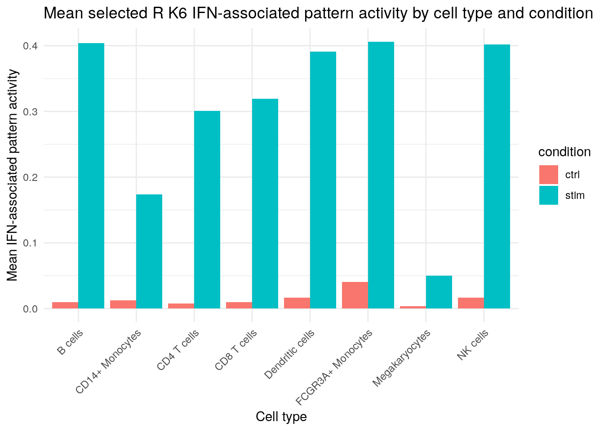

suppressPackageStartupMessages({
library(zellkonverter)
library(SingleCellExperiment)
library(SummarizedExperiment)
library(CoGAPS)
library(jsonlite)
library(ggplot2)
library(dplyr)
library(tibble)
library(readr)
})Biomedical Open Case Studies: Finding latent immune-response programs in single-cell RNA-seq with CoGAPS

Disclaimer
The purpose of the Open Case Studies project is to demonstrate the use of various data science methods, tools, and software in the context of messy, real-world data. A given case study does not cover all aspects of the research process, is not claiming to be the most appropriate way to analyze a given data set, and should not be used in the context of making policy or clinical decisions without external consultation from scientific experts or medical care professionals. In addition, due to size constraints, datasets used within a case study may be a subset of the original/full dataset.
License information
This work is licensed under the Creative Commons Attribution-NonCommercial 4.0 (CC BY-NC 4.0) United States License unless otherwise noted.
Funding information
This work is funded through the National Institutes of Health, specifically the National Institute of General Medical Sciences: Grant Number 1R25GM160622.
To cite this case study, please use:
Thomas, Oshane O. and Wright, Carrie. (2026). https://github.com/opencasestudies/ocs-bio-latent-variable. Finding latent immune-response programs in single-cell RNA-seq with CoGAPS (Version 0.1.0).
This case study uses the PBMC IFN-beta stimulation single-cell RNA-seq dataset from Kang et al. and introduces latent-pattern analysis with CoGAPS using R/Bioconductor CoGAPS as the primary implementation and Python/PyCoGAPS-compatible artifacts as a parallel implementation.
GitHub repository
The source files for this case study are available in the opencasestudies/ocs-bio-latent-variable GitHub repository.
The repository contains the Quarto case-study files, scripts, figures, and GitHub-safe teaching artifacts needed for the main learner path. Optional large files for full local reproduction are documented separately and are not required to follow the rendered case study.
Keywords
- Systemic lupus erythematosus
- IFN-beta stimulation
- Peripheral blood mononuclear cells (PBMCs)
- Single-cell RNA-seq
- CoGAPS
- Bayesian non-negative matrix factorization
- Latent expression patterns
- Model rank selection
- Interferon-stimulated genes
- Gene-expression directionality
- R and Python reproducible workflows
- Reproducible biomedical data science
Prerequisites
Draft note: Revisit this prerequisites section after the main narrative, learner path, and reproduction workflow are finalized.
Prerequisites
Add a list of prerequisites here.
Motivation
, often shortened to lupus or SLE, is an in which immune activity can be directed against the body’s own tissues. Lupus can look very different from one person to another. Some people experience fatigue, fever, painful or swollen joints, mouth sores, hair loss, or a rash that worsens with sun exposure; others may develop inflammation involving the kidneys, blood cells, brain, or the lining around the heart and lungs (National Institute of Arthritis and Musculoskeletal and Skin Diseases 2024). Symptoms can also come and go in flares, which makes lupus challenging to study from a single clinical measurement.
Lupus also matters as a public-health problem. In the United States, more than 200,000 people are estimated to have SLE, and the burden is not distributed evenly: SLE is much more common among women and affects several racial and ethnic groups more often than others (Centers for Disease Control and Prevention 2024). Those clinical and epidemiological patterns are not the main outcome of this case study, but they explain why lupus is a meaningful setting for learning how immune signals appear in molecular data. Because lupus is a systemic immune disease, blood immune cells can carry information about immune activation even when the affected tissue is elsewhere in the body.
Before looking at the dataset, it helps to know the main immune-cell players. , or PBMCs, are blood immune cells that include several broad populations. T cells help coordinate or carry out adaptive immune responses. B cells can contribute to antibody responses. Natural killer cells participate in cytotoxic responses against infected or abnormal cells. Monocytes are circulating innate immune cells that can contribute to inflammation and antigen presentation, and dendritic cells help connect early immune sensing to later adaptive responses.
One recurring molecular theme in lupus is the interferon response. are cytokine signals that help immune cells coordinate antiviral and danger-response programs. include IFN-alpha and . When cells respond to interferon signaling, many can change expression, leaving a recognizable molecular signature. In lupus research, that signature is important because interferon signaling can be connected to immune complexes, dendritic cells, T cells, B cells, natural killer cells, macrophages, neutrophil-associated signals, and inflammatory feedback loops (Chyuan, Tzeng, and Chen 2019).
The figure below is not a result from the case-study dataset. It is a biological orientation map for why interferon signaling is worth paying attention to in lupus. In the diagram, self nucleic acids and can stimulate plasmacytoid dendritic cells, an immune-cell type that can produce large amounts of type I interferon. can add nucleic-acid material that further stimulates interferon pathways. Interferons can then influence myeloid dendritic cells, T cells, B cells, natural killer cells, and macrophages. You do not need to memorize every arrow. The main takeaway is that interferon biology can cut across several immune-cell populations, so an analysis should keep both shared interferon activity and cell identity visible.

Draft note: Redraw and replace this lupus/interferon orientation figure before publication.
This case study uses a public single-cell RNA-seq perturbation study by Kang and colleagues to turn that biological motivation into a concrete data-analysis problem (Kang et al. 2018). Kang et al. studied PBMCs from eight lupus donors. For each donor, the researchers split the cell sample into matched portions, called . One aliquot was left untreated as a control, and the other was exposed to IFN-beta for six hours before profiling.
That setup is a . “Perturbation” means that the experiment deliberately changes one condition so the response can be measured. “Paired” means that control and stimulated cells come from the same donors, rather than from unrelated people. This matters because donor-to-donor differences can be large in immune data. By comparing matched control and IFN-beta-stimulated aliquots, the source study gives us a clearer way to ask how cells respond to an interferon signal while keeping donor background and cell identity in view.
The data were generated with . In plain language, this technology measures RNA molecules from many individual cells, so each cell receives its own gene-expression profile. The output is a large table of genes by cells, plus metadata such as condition, donor, and annotated immune-cell identity. This is different from a bulk RNA-seq experiment, where measurements are averaged across many cells before the analyst sees them. Single-cell data let you ask whether different immune-cell populations share a response, but they also create a harder interpretation problem.
The problem is that each cell carries more than one kind of information. A stimulated monocyte should still look like a monocyte. At the same time, that monocyte may share an interferon-response signal with stimulated T cells, B cells, natural killer cells, or dendritic cells. A cell can therefore contain a relatively stable identity signal, a stimulation-associated signal, donor-specific variation, and technical noise all at once. Clustering can help label groups of similar cells, but clustering alone does not automatically separate a shared response from the cell identities that response crosses.
This is where become useful. A latent pattern is an inferred signal: it is learned from the gene-expression data rather than recorded directly as a metadata label. A helpful way to think about this is that a latent-variable model does not have to ask every cell to belong to exactly one group. Instead, it can represent each cell as a mixture of patterns, so a cell can be both “monocyte-like” and “interferon-response-like” to different degrees.
Later in the case study, you will use to learn these latent transcriptional patterns from the PBMC dataset (Fertig et al. 2010). CoGAPS gives each pattern two linked views. The tell you which genes contribute strongly to a pattern. The tell you which cells use that pattern strongly. Those two views let you ask whether one pattern is broadly associated with IFN-beta stimulation while other patterns capture immune-cell identity or other structure.
One more interpretation step is important. CoGAPS pattern weights identify genes that are associated with a pattern, but they do not by themselves say whether those genes are higher or lower after stimulation. For that, you will also examine : whether expression is higher or lower in IFN-beta-stimulated cells compared with matched controls. This distinction matters because a pattern can highlight important genes, while a condition comparison tells you which way those genes move.
The opening roadmap at the top of the case study previews the evidence path you will follow. First, you will start from the paired IFN-beta perturbation design. Next, you will inspect how PBMC identities are arranged in the teaching data object. Then you will learn latent patterns, compare their activity between control and stimulated cells, and connect the genes that define a pattern to expression direction. The roadmap is a map of the analysis, not a demand that you accept a pattern label or model choice before seeing the evidence.
The puzzle for the rest of the case study is therefore not simply whether IFN-beta changes gene expression. It is whether you can recover an interpretable interferon-associated signal inside a mixed immune-cell population while still respecting the fact that a monocyte, a T cell, and a B cell begin from different biological identities.
Key terms
- PBMCs: Peripheral blood mononuclear cells, a mixed sample of blood immune cells.
- IFN-beta stimulation: The controlled perturbation used to create an interferon-response signal.
- Latent pattern: An inferred gene-expression signal learned from the data.
- Cell activity: A score showing where a learned pattern is strongest across cells.
- Gene weights and directionality: Pattern weights rank genes; directionality tells whether those genes rise or fall after stimulation.
Main Questions
The Motivation section introduced the central puzzle: each carries , donor context, and response information at the same time. The questions below turn that puzzle into an analysis path. You will first inspect what learns from control and IFN-beta-stimulated cells, then ask whether the learned separate broad from , which genes support the , and how that pattern varies across annotated PBMC cell types.
Our main questions
- What are present in IFN-beta stimulated and control PBMC data?
- Can CoGAPS help distinguish broad from ?
- Which genes define the strongest , and what is their in stimulation?
- How does the IFN-associated pattern vary across annotated PBMC cell types?
Draft note: Revisit the “Where it is answered” and “Expected takeaway” columns after Data Exploration, Data Visualization, and Data Analysis are fully drafted.
| Research question | Where it is answered | What you should learn | |
|---|---|---|---|
|
|
Question 1 What latent transcriptional programs are present in IFN-beta stimulated and control PBMC single-cell RNA-seq data? |
Data Import introduces the teaching PBMC dataset and the saved CoGAPS results used for the main analysis. Data Exploration, Data Visualization, and Data Analysis then inspect the learned gene weights, cell activities, and pattern summaries. | CoGAPS represents the PBMC data as multiple latent transcriptional patterns rather than one label per cell. Those patterns become the signals you will interpret in later sections. |
|
|
Question 2 Can CoGAPS help distinguish broad stimulation-associated activity from cell-type-linked immune programs? |
Data Exploration and Data Visualization show how cells are grouped by condition and cell type. Data Analysis compares how strongly each pattern follows stimulation, which genes define it, and where its activity is strongest across labeled cell types. | A useful model should help separate a broad stimulation-associated activity signal from patterns that look more cell-type-linked or mixed. |
|
|
Question 3 Which genes define the strongest IFN-associated pattern, and what is their direction in stimulation? |
Data Visualization previews how top pattern genes can be paired with expression direction. Data Analysis identifies the IFN-associated pattern from cell activities, ranks its top genes, and checks whether those genes are higher or lower in IFN-beta-stimulated cells. | The IFN-associated interpretation should be supported by canonical , and must be interpreted alongside directionality. |
|
|
Question 4 How does the IFN-associated pattern vary across annotated PBMC cell types? |
Data Visualization previews IFN-associated activity by cell type and condition. Data Analysis compares the pattern across labeled PBMC cell types and checks whether the same gene-direction story appears within those groups. | The IFN-associated pattern should be read as broad but not uniform: its cell activity can cut across immune-cell identities while still varying in strength across cell types. |
The questions are ordered intentionally. First you inspect the latent patterns that CoGAPS learns. Then you separate shared stimulation structure from cell-type-linked structure. Only after that do you attach biological meaning through top genes, directionality, and cell-type summaries.
Learning Objectives
By the end of this case study, you will be able to use a stimulation dataset to interpret learned by . You will inspect the data, follow evidence for the model resolution used later in the analysis, connect and to biological interpretation, and evaluate whether one learned pattern is consistent with a broad interferon-associated response.
The main learner path uses included data summaries and saved CoGAPS results so you can focus on interpretation rather than waiting for a long model run. The Full Reproduction Guide at the end of the case study shows how the larger files and selected-model outputs can be regenerated in the validated Docker image.
The objectives are organized into data analysis and programming skills, latent-variable and CoGAPS modeling skills, and biological interpretation skills. Together, they prepare you to answer the four main questions introduced above.
Data Analysis and Programming Learning Objectives:
- Load and check the teaching PBMC single-cell dataset, including condition, donor, and cell-type metadata.
- Explain why CoGAPS uses a genes-by-cells input and how R and Python store the same single-cell data in different orientations.
- Join cell activities, gene weights, top-gene tables, and cell metadata to create interpretation-ready summaries.
- Create and read plots that compare pattern activity across condition and annotated PBMC cell types.
Latent-Variable and CoGAPS Learning Objectives:
- Describe how CoGAPS represents each cell as a mixture of latent transcriptional patterns.
- Use precomputed rank-selection evidence to explain why model resolution matters, without treating the selected resolution as universally optimal.
- Identify an IFN-associated pattern using cell activities, stimulation association, and top-gene evidence while treating numbered pattern labels as run-specific.
- Interpret gene weights together with expression directionality, recognizing that a high pattern weight does not by itself mean a gene is up-regulated.
Biological Interpretation Learning Objectives:
- Explain why a paired IFN-beta perturbation experiment in PBMCs is useful for studying interferon-response programs.
- Recognize canonical interferon-stimulated genes that support the IFN-associated interpretation.
- Distinguish broad stimulation-associated activity from cell-type-linked immune structure in a mixed PBMC population.
- State what the case-study evidence can and cannot support about lupus, IFN-beta response, cell types, and CoGAPS pattern interpretation.
Objectives map: where each skill is used
| Learning goal | What this helps you do | Where it appears |
|---|---|---|
| Understand the biological setting | Explain why lupus PBMCs exposed to IFN-beta are useful for studying interferon-response structure. | Motivation; Context; What are the data? |
| Trace the main learner path | Use included files and saved CoGAPS results while knowing where optional full reproduction belongs. | Packages and Setup; Data Import; Full Reproduction Guide |
| Inspect data and metadata | Check cells, genes, conditions, donors, and annotated cell types before interpreting patterns. | Data Import; Data Exploration |
| Prepare CoGAPS-ready data | Understand genes-by-cells orientation and the difference between the R and Python data representations. | Data Wrangling; Full Reproduction Guide |
| Evaluate model resolution | Explain how the case study uses rank-selection evidence to choose the model resolution inspected later, without treating that choice as universal. | Data Import; Data Analysis; Limitations |
| Interpret latent patterns | Connect gene weights and cell activities to pattern summaries without treating numbered pattern labels as portable across runs. | Data Analysis; Summary |
| Connect patterns to IFN biology | Use stimulation association, top genes, and interferon-stimulated genes to support the IFN-associated interpretation. | Data Visualization; Data Analysis; Summary |
| Check expression direction | Compare gene weights with higher-or-lower expression after stimulation so pattern membership is not confused with regulation. | Data Visualization; Data Analysis |
| Compare activity across cell types | Ask whether the IFN-associated pattern is broad, cell-type-linked, or mixed across annotated PBMC cell types. | Data Visualization; Data Analysis |
| State limits clearly | Separate descriptive latent-pattern evidence from formal disease mechanism, pathway validation, or treatment claims. | Limitations; Summary; Continued Learning |
Context
The Motivation section introduced the biological puzzle for this case study: a mixed population of blood immune cells is exposed to , and the resulting single-cell data contain both immune-cell identity and stimulation-response information. This Context section gives you the background needed to read those signals carefully.
The section has two jobs. First, it gives a short immunology primer: what systemic lupus erythematosus is, why interferon biology is relevant, why PBMCs are useful but mixed, and what the Kang et al. source study measured. Second, it introduces the modeling frame: why clustering alone is not enough for this question, how latent patterns and non-negative matrix factorization work, and how CoGAPS turns a genes-by-cells matrix into evidence you can interpret later.
By the end of this section, you should be ready to enter Data Import with a map in mind. You will know what biological signals the literature suggests you might see, what the source study already established, and why later sections focus on pattern activity, gene weights, directionality, rank choice, and diagnostics.
What is systemic lupus erythematosus?
, or SLE, is a systemic . In an autoimmune disease, the immune system can respond to the body’s own cells or molecules. In SLE, that immune activity can affect several organ systems, and symptoms may include fatigue, fever, joint pain or swelling, skin rashes, mouth sores, blood abnormalities, kidney involvement, neurologic symptoms, or inflammation around the heart or lungs (National Institute of Arthritis and Musculoskeletal and Skin Diseases 2024).
The word systemic matters. SLE is not limited to one tissue or one immune-cell type. A person with SLE can have immune signals in blood that relate to inflammation elsewhere in the body. That is one reason blood immune-cell data are useful for teaching this case study: PBMCs are accessible, contain multiple immune-cell populations, and can carry molecular evidence of immune activation.
SLE is also heterogeneous. Two people with the same diagnosis may have different symptoms, affected tissues, autoantibodies, treatment histories, and immune-cell composition. That heterogeneity is part of what makes lupus difficult to study. It also explains why this case study will avoid overclaiming. We are not trying to diagnose SLE, predict disease activity, or prove a clinical mechanism. We are using a lupus PBMC perturbation dataset to learn how an interpretable interferon-associated signal can be separated from immune-cell identity in single-cell RNA-seq data.
Interferon-beta and its role in lupus
are cytokines: signaling proteins that help immune cells coordinate responses to infection, tissue damage, and other danger signals. include IFN-alpha, IFN-beta, IFN-omega, IFN-epsilon, and IFN-kappa (Chyuan, Tzeng, and Chen 2019). This case study focuses on IFN-beta because IFN-beta is the controlled stimulation used in the source dataset.
A useful way to understand interferon signaling is to follow the signal from outside the cell to the genome. Type I interferons bind the type I interferon receptor, also called . That receptor activates the pathway, including JAK1, TYK2, STAT1, STAT2, and IRF9. These proteins help turn on many , often abbreviated ISGs (Chyuan, Tzeng, and Chen 2019). In plain language, interferon signaling can leave a recognizable gene-expression footprint.
In lupus, this footprint is often called an . Several lupus studies have reported interferon-associated gene-expression signatures in blood, PBMCs, purified immune-cell populations, and affected tissues (Chyuan, Tzeng, and Chen 2019; Catalina et al. 2019). Catalina and colleagues found that interferon signatures in SLE datasets can include prominent IFNB1-like signatures and can be strongly related to monocyte-associated transcripts (Catalina et al. 2019). That observation is important for this case study because it points to a recurring interpretive issue: an interferon signal may be broad, but it may also vary by cell type.
The immune-cell players are worth naming. are known for producing large amounts of type I interferon in response to nucleic-acid sensing. Monocytes and macrophages can participate in inflammatory responses and antigen presentation. Dendritic cells can help connect innate sensing to T-cell and B-cell responses. B cells can contribute to antibody responses, including autoantibody-related processes. T cells help coordinate or carry out adaptive immune responses. Natural killer cells contribute to cytotoxic responses. Neutrophils can release neutrophil extracellular traps, which may provide nucleic-acid material that stimulates interferon pathways in lupus (Chyuan, Tzeng, and Chen 2019).
The main idea is not that every cell type does the same thing. The main idea is that interferon biology connects several immune-cell populations. That makes it plausible that a single-cell analysis could contain both a shared interferon-response signal and cell-type-linked structure at the same time.
PBMCs as a mixed immune-cell system
, or PBMCs, are blood immune cells with round nuclei. They include lymphocytes, such as T cells, B cells, and natural killer cells, as well as monocytes and some dendritic cells. PBMCs do not include every immune cell in blood; for example, mature neutrophils are usually not part of the PBMC fraction. Still, PBMCs are widely used because they are accessible and contain many immune populations relevant to systemic immune activity.
For this case study, PBMCs are useful for the same reason they are challenging. A PBMC sample is not one cell type. It is a mixture. A stimulated monocyte can still have monocyte-like expression. A stimulated B cell can still have B-cell-like expression. A stimulated natural killer cell can still have cytotoxic-cell features. At the same time, all of those cells may share some response to IFN-beta.
This creates a layered interpretation problem. Each cell can carry:
- an immune-cell identity signal,
- a stimulation-associated signal,
- donor-specific variation,
- technical variation, and
- noise from sparse single-cell measurement.
No single metadata label captures all of these layers. A cell-type label tells you what a cell most resembles, but not everything that cell is doing. A condition label tells you whether a cell came from control or stimulated culture, but not which genes drove its response. A latent-variable approach is useful because it can represent cells as mixtures of several signals rather than forcing each cell into one explanatory box.
Summary of the Kang et al. study
The source study for this case study is Kang et al. 2018, which introduced demuxlet and used multiplexed droplet single-cell RNA-seq to study PBMC responses to IFN-beta (Kang et al. 2018). The original paper’s main methodological contribution was demuxlet: a computational approach that uses natural genetic variation to assign each droplet to a donor and detect droplets that likely contain cells from more than one person.
The IFN-beta part of that study used PBMCs from eight lupus patients. For each donor, the researchers split PBMCs into two matched portions, or . One aliquot was left untreated as a control. The other was stimulated with recombinant IFN-beta for six hours. After stimulation, cells were pooled by condition and profiled using droplet single-cell RNA-seq (Kang et al. 2018).
That design has two features that matter for the rest of the case study.
First, it is a . The experiment deliberately changes one condition, IFN-beta exposure, so that the transcriptional response can be measured. This gives the analysis a clear contrast: control versus IFN-beta stimulated cells.
Second, it is a . Control and stimulated cells come from the same donors. That matters because immune profiles can differ substantially across people. A paired design lets the source study compare stimulation responses while keeping donor background more visible.
Kang et al. also used and detection. In droplet single-cell RNA-seq, a droplet ideally contains RNA from one cell. A doublet occurs when material from two cells is captured together and treated as one observation. Demuxlet helped assign cells back to donors and remove likely doublets, improving confidence that later summaries reflected singlet cells rather than mixed droplets (Kang et al. 2018).
The exact files and teaching data objects used in this case study are described in the next section, What are the data? Here, the important source-study point is conceptual: the dataset was designed to compare matched control and IFN-beta-stimulated PBMCs from lupus donors while retaining single-cell and cell-type information.
Source-study findings to carry forward
Kang et al. did not use CoGAPS. The original paper used the dataset to demonstrate multiplexed droplet single-cell RNA-seq, demuxlet, cell-type-specific response analysis, and genetic analyses. This case study reuses the source dataset for a different teaching goal: learning how CoGAPS can recover and interpret latent transcriptional patterns.
Several source-study findings should guide your expectations before you see the CoGAPS results:
- IFN-beta stimulation produced broad transcriptional changes across PBMCs.
- The source study identified thousands of genes with differential expression in at least one cell type after IFN-beta stimulation (Kang et al. 2018).
- The IFN-beta response included antiviral, chemokine, and lupus-related pathway signals.
- IFN-beta stimulation did not erase cell identity. The original analysis still recovered major immune-cell groups after stimulation.
- Cell-type composition and donor-to-donor variation both mattered, which is why the case study keeps cell type and donor metadata visible.
These findings are expectations, not answers. They tell you what kinds of signals would be biologically plausible. Later sections ask whether the CoGAPS patterns support those expectations in the teaching data.
Interferon genes learners should recognize
You do not need to memorize a long list of interferon genes. You do need enough vocabulary to recognize why a later top-gene list might support an interferon-associated interpretation.
Several gene families often appear in interferon-response analyses:
- ISG genes, such as
ISG15andISG20, are named as interferon-stimulated genes and often appear in interferon-response signatures. - IFIT and IFITM genes, such as
IFIT1,IFIT2,IFIT3, andIFITMfamily members, are commonly associated with antiviral interferon responses. - IFI genes, such as
IFI6, are part of a broad set of interferon-inducible genes. - MX and OAS genes, such as
MX1,OAS1, andOASL, are classic antiviral-response genes that often appear downstream of interferon signaling. - IRF and STAT-related genes, such as
IRF7andSTAT1, connect to transcriptional regulation and interferon pathway signaling. - Nucleic-acid sensing genes, such as
DDX58andIFIH1, relate to sensing viral or self nucleic acids and can connect upstream danger sensing to interferon responses. - Chemokine and immune-regulatory genes, such as
CXCL10,TNFSF10, andSOCS1, can reflect downstream immune communication or regulation.
These gene names are anchors for interpretation, not shortcuts. A top-gene list that includes several canonical interferon-related genes is consistent with an interferon-associated pattern. But you still need to ask where the pattern is active, whether it tracks stimulation, and whether the genes are higher or lower in stimulated cells.
This last point is important. CoGAPS gene weights identify genes that help define a pattern. They do not, by themselves, tell you whether a gene is upregulated or downregulated. Later, you will pair pattern weights with condition-based directionality checks.
From cell clusters to latent patterns
Clustering is often one of the first useful tools in single-cell RNA-seq analysis. A clustering workflow groups cells with similar expression profiles, and those groups can help analysts assign cell-type labels. Reviews of single-cell clustering emphasize that clustering is central to identifying putative cell types, but also that interpretation is challenging because single-cell data are high-dimensional, sparse, and sensitive to preprocessing choices (Kiselev, Andrews, and Hemberg 2019).
For this case study, clustering is helpful but not sufficient. Clustering asks which cells are similar overall. The research questions ask something more layered: which transcriptional signals are present, which signals are shared across immune-cell types, and which signals are most associated with IFN-beta stimulation.
Kotliar and colleagues describe this as a distinction between cell-type identity programs and cellular activity programs (Kotliar et al. 2019). An identity program reflects what a cell is, such as a T cell, B cell, monocyte, or dendritic cell. An activity program reflects what a cell is doing, such as responding to stimulation, cycling, producing cytokines, or activating an antiviral pathway.
The difficult part is that a single cell can express both kinds of programs. A monocyte can have monocyte identity genes and interferon-response genes. A T cell can have T-cell markers and stimulation-response genes. A B cell can retain B-cell identity while also responding to IFN-beta. That is why a one-cell, one-cluster view can be too restrictive for this case study.
A is an inferred signal learned from the expression matrix. It is not a metadata column recorded by the experiment. A useful latent pattern might be identity-like, stimulation-associated, donor-linked, technical, or mixed. The analysis task is not simply to name every pattern. The task is to evaluate each pattern using evidence.
Stop and think
Why might a stimulated monocyte be hard to interpret with only one label?
Answer
A stimulated monocyte carries at least two interpretable signals: it still has monocyte-like expression, and it may also activate interferon-response genes. A single label can name the cell identity, but it does not describe every transcriptional program active in that cell.NMF: the mathematical shape of the problem
Single-cell RNA-seq data can be organized as a matrix. In this case study, the modeling input is a genes-by-cells matrix. Each row represents a gene, each column represents a cell, and each entry is a non-negative expression value.
, or NMF, asks whether a large non-negative matrix can be approximated as the product of two smaller non-negative matrices. At the intuition level:
observed expression matrix ~= gene weights x cell activitiesIn a compact mathematical form:
\[ D \approx A P \]
Here:
| Object | What it represents | How to read it |
|---|---|---|
D |
the observed expression matrix | genes by cells |
A |
the gene-by-pattern matrix | which genes contribute to each pattern |
P |
the pattern-by-cell matrix | which cells use each pattern strongly |
K |
the number of patterns requested | the model resolution |
For one gene and one cell, the model approximates expression by adding up contributions from all K patterns:
\[ D_{g,c} \approx \sum_{k=1}^{K} A_{g,k} P_{k,c} \]
In plain language, a cell’s expression profile is represented as a mixture of learned patterns. The non-negative constraint matters because patterns add together rather than cancel each other out. That additive structure fits the PBMC problem: a cell can be monocyte-like and interferon-response-like at the same time.
NMF is not magic. It does not know biology by itself. It produces matrices that must be interpreted using genes, cell metadata, experimental design, diagnostics, and prior biological knowledge.
How CoGAPS extends vanilla NMF
is the NMF-family method used in this case study. The name stands for Coordinated Gene Activity in Pattern Sets. CoGAPS was introduced as an R/C++ package for identifying patterns and biological process activity in transcriptomic data (Fertig et al. 2010). Later single-cell CoGAPS work extended this latent-pattern framework to sparse single-cell RNA-seq data (Stein-O’Brien et al. 2019). The official CoGAPS User Guide introduces the method and software workflows for R and Python users.


Image credit: CoGAPS logo and schematic from the Fertig Lab CoGAPS User Guide.
The schematic above shows the same basic matrix idea introduced in the NMF section: a large gene-expression matrix is represented by a smaller set of learned patterns. CoGAPS keeps that additive, non-negative structure, but fits the model using a Bayesian, sampling-based approach. Instead of treating one numerical factorization as the whole answer, CoGAPS samples plausible factorizations and summarizes them. This gives the method a natural connection to diagnostics, uncertainty, and stability checks.
You do not need to understand every sampling detail to use the case study. The learner-facing interpretation rests on four ideas:
- Patterns are overlapping. A cell can use more than one pattern.
- Pattern numbers are run-specific. A biological signal should be identified by evidence, not by assuming one pattern label is universal.
- Gene weights are not directionality. A high-weight gene helps define a pattern, but a separate condition comparison is needed to determine whether the gene is higher or lower after stimulation.
- Diagnostics matter. A biologically tempting pattern still needs evidence that the model ran sensibly and that the interpretation is stable enough to use.
The case study uses the R/Bioconductor CoGAPS workflow as the primary implementation. Python/PyCoGAPS-compatible outputs are provided as a secondary implementation path in later tabbed examples. That implementation detail matters for reproducibility, but the interpretation frame is the same: connect pattern activity, gene weights, source-study design, and biological expectations.
What choosing K means
The rank, written as K, is the number of latent patterns CoGAPS is asked to learn. Choosing K is a model-resolution decision.
If K is too small, distinct biological signals can be compressed together. For example, one pattern might blend an interferon response with cell-type identity. If K is too large, a signal can fragment across several patterns, making the model harder to interpret and less stable. Neither extreme is automatically better.
This is why the case study does not treat K as a purely technical setting. The useful value of K depends on the analysis goal. Here, the goal is not only to find a strong interferon-response signal. The goal is to find a model that also preserves enough non-interferon structure to respect the mixed PBMC system.
The value of K used for the main analysis is introduced in Data Import after you inspect model-selection evidence. Context gives you the idea; the next sections provide the evidence.
Why run a rank sweep?
A rank sweep means fitting or evaluating CoGAPS models across several candidate values of K. The purpose is to ask how model interpretation changes as the requested number of patterns changes.
For self-guided learners, the important point is that the sweep is precomputed. You will not need to rerun the full sweep during the main learner path. Instead, you will inspect saved summaries that compare candidate ranks using evidence such as:
- whether the interferon-related signal is recovered consistently,
- whether top genes are stable across seeds,
- whether non-interferon structure is preserved,
- whether patterns appear redundant or fragmented,
- how runtime changes as
Kincreases, and - whether the eventual model is interpretable for the biological question.
This is a good example of a broader modeling principle: model choice should be tied to the scientific question. A rank that maximizes one metric may not be the best teaching or biological model if it collapses other important structure.
How pattern evidence will be interpreted later
Later sections will use CoGAPS outputs, but the interpretation logic starts here. A pattern becomes biologically meaningful only after several kinds of evidence agree.
You will ask:
- Where is the pattern active? Cell activities show which cells use the pattern strongly.
- Does activity track the experimental condition? Stimulation-associated activity should differ between control and IFN-beta-stimulated cells.
- Which genes define the pattern? Gene weights identify genes that contribute strongly to the pattern.
- Do the top genes fit known biology? Interferon-associated genes provide literature-guided expectations.
- Which direction do the genes move? Directionality checks ask whether genes are higher or lower after stimulation.
- Does the pattern respect cell identity? Cell-type summaries help distinguish broad stimulation activity from cell-type-linked structure.
- Did the model run sensibly? Diagnostics help evaluate convergence, stability, and fit.
These evidence types are intentionally separate. A pattern can have plausible genes but weak condition association. A pattern can correlate with stimulation but include genes that require careful directionality checks. A pattern can be strong in one cell type but weaker in another. The case study will teach you to combine these pieces rather than rely on one plot or one statistic.
Interpretive boundaries before analysis
The Context section should give you expectations, not conclusions. The source data come from lupus donors, but the main analysis studies an in vitro IFN-beta stimulation response. The case study does not test a lupus therapy, predict patient outcomes, or prove a disease mechanism. Those limitations are discussed more fully later.
For now, carry forward a narrower and more useful question: can a latent-pattern model help separate a broad interferon-response signal from immune-cell identity in a mixed PBMC single-cell dataset?
Core distinctions to carry forward
- PBMC identity versus stimulation response: A cell can retain immune-cell identity while also responding to IFN-beta.
- Cell cluster versus latent pattern: A cluster groups similar cells; a latent pattern can be shared across cells in different groups.
- Gene weight versus expression direction: A high-weight gene helps define a pattern; directionality asks whether that gene rises or falls after stimulation.
- Rank
Kversus pattern label:Kcontrols how many patterns the model learns; pattern labels are names assigned within one run. - Literature expectation versus analysis result: Interferon biology tells you what to look for; the CoGAPS analysis tests whether the data support that interpretation.
The next section turns this background into concrete files. You will see which processed data objects are included in the case study, which saved CoGAPS artifacts support the main learner path, and which larger files are optional for full reproduction. With the biological and modeling vocabulary in place, those files should read less like a list of artifacts and more like the evidence chain you will use to answer the main questions.
What are the data?
Before you read any files into R or Python, pause to ask what kind of evidence each file contains. Some files describe the public source study. Some files describe the prepared single-cell dataset used in this case study. Some files summarize CoGAPS runs that have already been completed. Keeping those layers separate will help you avoid common mistakes, such as treating every cell as a separate patient or reading a CoGAPS gene weight as if it were already an up-or-down expression result.
The public source data come from Kang et al. 2018, a multiplexed droplet single-cell RNA-seq study of responses to stimulation (Kang et al. 2018). The source record is Series GSE96583, the public for the Kang study data.
The GEO record contains the series description, sample records, processed supplementary files, and links to raw sequencing data in the Sequence Read Archive. For this case study, the relevant sample records are the batch 2 control and batch 2 IFN-beta-stimulated PBMC samples; the record also includes batch 1 samples used in the source paper’s broader demultiplexing demonstration. The source files were downloaded from that NCBI GEO record and then processed into the teaching dataset described below.
In the part of the study used here, PBMCs from eight lupus donors were split into matched . One aliquot was left as an untreated control, and the other was stimulated with IFN-beta for six hours before single-cell profiling.
That design is useful because the same donor background appears in both conditions. It does not make the data simple, though. Each cell still carries several kinds of information at once: immune-cell identity, donor context, technical measurement noise, and response to stimulation. The purpose of this section is to show what the case-study files represent before those signals are modeled.
The teaching dataset
The main analysis starts from a prepared teaching dataset derived from the Kang PBMC IFN-beta study. It contains 24,673 cells and 3,000 . Each cell has a condition label, an annotated PBMC cell type, a donor or patient replicate label, and low-dimensional coordinates used later for visualization.
The preparation step keeps the scale of the single-cell experiment large enough to be realistic while making the analysis manageable for a case study. Rather than using every measured gene, the workflow keeps genes that are informative across cells. The frozen preprocessing record for this dataset indicates that genes were filtered by minimum cell count, expression values were normalized to a common library size, log-transformed, and then reduced to 3,000 highly variable genes. You will return to these preprocessing choices in Data Wrangling, where the case study explains why filtering, normalization, transformation, and gene selection matter for the matrix used by CoGAPS. The prepared dataset also keeps a count layer so later sections can compare expression direction for selected genes.
The cell set is close to balanced by condition: 12,315 control cells and 12,358 IFN-beta-stimulated cells. It is not balanced by cell type, because the goal is to preserve the mixed PBMC composition present in the prepared data. The largest annotated group is CD4 T cells, followed by CD14+ monocytes, B cells, NK cells, CD8 T cells, FCGR3A+ monocytes, dendritic cells, and megakaryocytes. That mixture is the biological setting for the case study: an interferon response may be shared across PBMC populations, but it may also vary in strength across cell types.
Data files you will encounter
The table below is a map, not a workflow. Exact filenames and optional large-file setup are handled in Packages and Setup and in the Full Reproduction Guide. Here, focus on what each file family means.
| File family | What it represents | How to read it carefully |
|---|---|---|
| Public GEO record | The NCBI GEO Series record for Kang et al. 2018, including sample records, supplementary processed files, and links to raw SRA data. | This is the public source record; the case study uses a processed teaching dataset derived from it. |
| Prepared single-cell dataset | Cells, genes, condition labels, donor labels, cell-type labels, and visualization coordinates for the PBMC IFN-beta teaching dataset. | This is the starting dataset for the main analysis, not the complete raw GEO archive. |
| Model-resolution summaries | Precomputed summaries from candidate CoGAPS runs used to decide how detailed the model should be. | These summaries support a rank decision; they do not give biological names to patterns by themselves. |
| Saved CoGAPS outputs | Pattern activities, gene weights, top-gene summaries, and diagnostic summaries from the selected model loaded later. | Pattern labels are run-specific, and gene weights do not say whether expression is higher or lower after stimulation. |
| Directionality summaries | Targeted stimulation-versus-control expression contrasts for genes used in pattern interpretation. | These summaries help determine direction of change for selected genes; they are not a genome-wide differential-expression analysis. |
| Optional reproduction files | Larger inputs and full model files used to rebuild or audit the workflow outside the main narrative. | These are useful for full reproduction, but they are not required to follow the main narrative. |
What one row means
Rows do not mean the same thing in every file. A row might represent one cell, one gene linked to one pattern, one cell-type summary, or one model run. Reading the row meaning first will make later tables much easier to interpret.
| File group | One row usually represents | What that row helps you ask |
|---|---|---|
| Cell metadata | One cell barcode and its labels. | Which condition, donor, and annotated PBMC cell type does this cell belong to? |
| Cell activity tables | One cell, or one summarized cell group, with CoGAPS pattern activities. | Where is a learned pattern most active? |
| Gene-weight and top-gene tables | One gene’s contribution to one CoGAPS pattern. | Which genes help define a pattern? |
| Directionality tables | One gene contrast between IFN-beta-stimulated and control cells. | Is the gene higher or lower after stimulation? |
| Diagnostic or model-summary tables | One saved trace point, candidate model, or run-level summary. | Did the model run behave reasonably, and how does it compare with alternatives? |
Columns you will see often
You do not need to memorize every column name now. Think of this table as a trail map for the first few imports: it names the columns that will keep reappearing as you move from cells, to patterns, to genes.
| Column or term | What it means | How to use it |
|---|---|---|
condition |
Whether a cell came from the untreated control or the IFN-beta-stimulated aliquot. | Use it to ask whether pattern activity or gene expression shifts after stimulation. |
cell_type |
The annotated PBMC identity, such as CD4 T cells, B cells, NK cells, monocytes, or dendritic cells. | Use it to keep immune-cell identity visible while interpreting response patterns. |
replicate |
The donor or patient replicate label retained in the teaching dataset. | Use it when summaries need to respect the paired donor structure. |
UMAP1, UMAP2 |
Two-dimensional coordinates used for visualization. | Use them to plot cells; do not treat distance on the plot as a direct biological measurement. |
n_cells and fraction |
Counts and proportions for a summarized group of cells. | Use them to check how much cell-level evidence contributes to a summary. |
| pattern-activity columns | CoGAPS activity values for learned patterns. | Larger values mean a cell or group uses that pattern more strongly. |
pattern |
A run-specific pattern label in long-format summaries. | Use it to compare patterns, but wait for evidence before assigning biological meaning. |
gene and weight |
A gene symbol and its CoGAPS contribution to a pattern. | Use them to ask which genes help define a pattern. |
log2FC and direction |
Directionality summaries comparing IFN-beta stimulation with control. | Use them to check whether selected genes are higher or lower after stimulation. |
Later sections will introduce a few additional diagnostic columns only when they become useful. For now, the main habit is simple: check whether a table is about cells, patterns, genes, or model behavior before interpreting a number.
Checkpoint
Before importing files, ask yourself: would this table help identify where a pattern is active, which genes define it, or which direction those genes move after stimulation?
Show answer
Cell activity tables help identify where a pattern is active. Gene-weight and top-gene tables help identify which genes define a pattern. Directionality tables are needed to tell whether those genes are higher or lower in IFN-beta-stimulated cells compared with controls.
Boundaries for interpretation
These data are well suited for learning how to interpret latent patterns in a mixed single-cell immune dataset. They are not, by themselves, a clinical test of lupus severity, a therapy study, or proof that one pathway causes disease. The source experiment gives a controlled IFN-beta perturbation in PBMCs from lupus donors. The case study then asks a data-analysis question: can CoGAPS recover interpretable patterns while keeping stimulation response, cell identity, and gene directionality distinct?
You now have a map of the data layers. Next, the Limitations and Bioethics sections set the interpretation boundaries before Packages and Setup and Data Import begin the executable workflow.
Limitations
There are some important considerations regarding this data analysis to keep in mind:
- This case study uses a processed AnnData object with 3,000 highly variable genes rather than a full workflow from raw sequencing files or all measured genes.
- The chosen CoGAPS rank,
K = 6, comes from a limited completed sweep and should be described as a local model-selection decision rather than a universal optimum. - The main learner workflow loads a saved chosen model by default because running even one CoGAPS model can take substantial time.
- CoGAPS pattern weights identify genes associated with latent programs, but up/down regulation must be assessed separately using expression contrasts.
- The directionality analysis is targeted to top pattern genes and is not a genome-wide differential-expression analysis.
- Cell-type heterogeneity summaries are descriptive unless additional donor-aware inference is added.
- The dataset tests IFN-beta stimulation in PBMCs, not direct dengue infection.
Ethical Considerations
There are some important ethical considerations when working with data relating to this case study’s main questions.
- These data come from human immune cells, so learners should treat donor metadata carefully even when the dataset is public and de-identified.
- Public case-study repositories should not include protected health information or unnecessary sensitive metadata.
- Reproducible workflows improve transparency, but they also make it important to document what data were processed, subset, or cached.
- This case study is educational and should not be used for clinical decision-making.
The processed files in this draft project use donor or patient replicate labels only for analysis structure. We will not attempt to infer private donor attributes from these labels.
Packages and Setup
This section gets your computer ready for the case study. The main learner path uses the case-study repository, the validated Docker image, included teaching data, saved model-selection summaries, and lightweight exports from the selected CoGAPS model. That path lets you focus on importing, checking, visualizing, and interpreting evidence without waiting for long model runs.
The full local reproduction path is optional. It uses the same repository and Docker image, but adds larger files so a reviewer, instructor, or advanced learner can regenerate selected-model outputs. The high-performance-computing sweep is not rerun in the main learner path; later sections inspect the included sweep summaries instead.
This case study uses R as the primary implementation and Python as a parallel implementation in the second tab. The R path uses SingleCellExperiment and Bioconductor CoGAPS; the Python path uses AnnData and PyCoGAPS-compatible saved outputs. The scientific workflow is the same in both languages, but saved CoGAPS outputs are kept separate because the two implementations should be treated as parallel analyses rather than numerically identical reruns.
What the setup provides
Think of setup as four connected pieces:
| Setup piece | What it provides | When you need it |
|---|---|---|
| Docker image | R, Python, CoGAPS, PyCoGAPS, Quarto, plotting tools, and the OpenMP-enabled runtime used for this case study. | Use this for the main learner path and for full local reproduction. |
| GitHub repository | The case-study pages, scripts, manifests, included teaching data, selected-model summaries, and figures. | Use this for the main learner path. |
| Optional large-file archive | Larger source or model files, such as full model objects or dense CoGAPS inputs, that are not kept in ordinary GitHub history. | Use this only for full local reproduction or deeper audit work. |
| HPC sweep provenance | Included sweep summaries and scripts documenting the broader rank search. | Inspect the summaries in the lesson; rerunning the sweep is separate cluster work. |
The first figure keeps those pieces separate. Docker supplies the software environment. GitHub supplies the files used in the main lesson. Optional Zenodo or local files support deeper rebuilding, and the HPC sweep remains a separate provenance layer.

The second figure shows how the main learner path differs from full local reproduction. Follow the left path for the case study itself. Use the upper-right path only if you want to rebuild selected files after obtaining the larger inputs. Treat the lower-right HPC sweep as provenance: the case study includes the sweep summaries so you can evaluate rank evidence without launching cluster jobs.

Main learner setup
Start here unless your goal is to rebuild large files. First clone the case-study repository and move into the repository root on your computer:
git clone https://github.com/opencasestudies/ocs-bio-latent-variable.git
cd ocs-bio-latent-variableThen pull and launch the Docker image:
docker pull othomas2/pycogaps-runtime-guide:0.3.0
docker run --platform linux/amd64 --rm -it \
-p 8787:8787 \
-e PASSWORD="Password12" \
-v "$PWD":/home/rstudio/project:rw \
othomas2/pycogaps-runtime-guide:0.3.0This command starts RStudio Server inside the container and mounts the cloned repository at /home/rstudio/project. The mount is writable (rw), so small outputs you create in the project folder are saved back to your local clone.
The --platform linux/amd64 option keeps the runtime consistent with the validated case-study image. On Apple silicon Macs, Docker may use emulation for this image, so long model-fitting runs can be slower than they would be on native Linux hardware. The main learner path avoids that problem by using included CoGAPS evidence.
Full local reproduction setup
Use this path only if you want to regenerate selected-model files or inspect larger model objects. The GitHub repository is still required, but the larger files are supplied separately through Zenodo, another artifact host, or private local storage. They should not be committed to ordinary GitHub history.
The optional files are documented in data/external/README.md and in the Full Reproduction Guide. Examples include the full R .rds model object, the full Python .h5ad result, and the dense genes-by-cells input needed for a full Python rerun.
Full local reproduction uses complete scripts rather than copying every chunk by hand. After Docker starts, open the RStudio Terminal and work from the mounted repository:
cd /home/rstudio/project
ls scripts/reproductionThe selected-model rerun wrappers are:
bash scripts/reproduction/run_selected_model_r.sh
bash scripts/reproduction/run_selected_model_python.shThe R wrapper is the primary reproduction route for the selected model. The Python wrapper is parallel and useful for implementation comparison, but it requires the optional dense CoGAPS input file. If a model-fitting script is launched, run it in a visible Terminal so progress messages remain watchable.
The full rank sweep is intentionally not part of local reproduction. Learners analyze the included sweep summaries under data/processed/k_selection/.
Open RStudio Server
After Docker starts, open http://localhost:8787 and sign in with username rstudio and password Password12. Keep the online case-study page open in one browser tab and RStudio Server open in another.
In RStudio Server, work from /home/rstudio/project. If you are unsure where you are, run getwd() in the R Console or pwd in the Terminal.
The schematic below labels the main panes you will use while working through the case study.

| What you are running | Where to paste or run it | Where output appears |
|---|---|---|
| Short R chunks from an R tab | R Console, or an R script in the Source pane | Console output, Plots pane, and saved files in the Files pane |
| Short Python chunks from a Python tab | Terminal pane using /opt/cogaps-venv/bin/python, or a small .py script |
Terminal output and saved files in the Files pane |
| Full reproduction scripts | Terminal pane from /home/rstudio/project |
Terminal progress messages, logs, and regenerated output folders |
For R chunks, a common workflow is to open File > New File > R Script, paste the code, highlight the lines you want to run, and click Run. You can also paste short chunks directly into the R Console. For Python chunks, use the Terminal pane so you are running Python inside the Docker environment:
cd /home/rstudio/project
/opt/cogaps-venv/bin/pythonYou can paste short Python examples after the >>> prompt. For longer Python examples, save the code in a small .py file and run it from the Terminal.
Load packages
The Docker image already installs the packages used below. Load the packages for the language you plan to use.
| Package | Use |
|---|---|
zellkonverter |
Read .h5ad files into SingleCellExperiment |
SingleCellExperiment |
Represent single-cell data in Bioconductor form |
SummarizedExperiment |
Access assays and metadata cleanly |
CoGAPS |
Optional local CoGAPS model execution in R |
jsonlite |
Read saved metrics JSON files |
ggplot2 |
Plot figures in the R workflow |
dplyr, tibble, readr |
Summaries and lightweight artifact I/O |
from __future__ import annotations
from pathlib import Path
import json
import platform
import sys
import anndata as ad
import matplotlib.pyplot as plt
import numpy as np
import pandas as pd
from scipy import sparse| Package | Use |
|---|---|
anndata |
Read and write AnnData .h5ad files |
pandas |
Summarize metadata, pattern tables, and directionality outputs |
numpy |
Matrix and numerical operations |
scipy |
Sparse matrix handling and statistical summaries |
matplotlib |
Plot figures used in the case study |
PyCoGAPS |
Optional local CoGAPS model execution in Python |
The R and Python tabs are alternate ways to complete the same conceptual checks. Choose one language for the main lesson unless you specifically want to compare implementations.
Check the runtime
These checks confirm that the main packages are available in the language you choose.
r_runtime_packages <- c(
"zellkonverter",
"SingleCellExperiment",
"SummarizedExperiment",
"CoGAPS",
"jsonlite",
"ggplot2",
"dplyr",
"tibble",
"readr"
)
data.frame(
item = c("R", r_runtime_packages),
available = c(TRUE, vapply(r_runtime_packages, requireNamespace, logical(1), quietly = TRUE)),
version = c(
R.version.string,
vapply(
r_runtime_packages,
function(pkg) {
if (requireNamespace(pkg, quietly = TRUE)) {
as.character(utils::packageVersion(pkg))
} else {
"not installed"
}
},
character(1)
)
)
) item available
R TRUE
zellkonverter zellkonverter TRUE
SingleCellExperiment SingleCellExperiment TRUE
SummarizedExperiment SummarizedExperiment TRUE
CoGAPS CoGAPS TRUE
jsonlite jsonlite TRUE
ggplot2 ggplot2 TRUE
dplyr dplyr TRUE
tibble tibble TRUE
readr readr TRUE
version
R version 4.3.2 (2023-10-31)
zellkonverter 1.12.1
SingleCellExperiment 1.24.0
SummarizedExperiment 1.32.0
CoGAPS 3.22.0
jsonlite 1.8.8
ggplot2 4.0.3
dplyr 1.1.4
tibble 3.2.1
readr 2.1.5import importlib.util
import scipy
python_runtime_packages = ["anndata", "matplotlib", "numpy", "pandas", "scipy"]
pd.DataFrame(
{
"item": ["Python", *python_runtime_packages, "PyCoGAPS"],
"available": [
True,
*[importlib.util.find_spec(pkg) is not None for pkg in python_runtime_packages],
importlib.util.find_spec("PyCoGAPS") is not None,
],
"version": [
sys.version.split()[0],
ad.__version__,
plt.matplotlib.__version__,
np.__version__,
pd.__version__,
scipy.__version__,
"installed" if importlib.util.find_spec("PyCoGAPS") is not None else "optional/not installed",
],
}
) item available version
0 Python True 3.10.12
1 anndata True 0.11.4
2 matplotlib True 3.7.3
3 numpy True 1.24.4
4 pandas True 2.0.3
5 scipy True 1.15.3
6 PyCoGAPS True installedWhere the case-study files live
The case study uses the same few folders repeatedly. You do not need to memorize every file path, but you do need to run the short setup code below before continuing. That code teaches R or Python where to find the prepared data, model-selection summaries, saved CoGAPS outputs, and optional reproduction files.
| Location | What you will use it for |
|---|---|
data/processed/input/ |
Prepared single-cell data used in the main lesson |
data/processed/k_selection/ |
Saved model-resolution summaries from the rank sweep |
| selected-model output folder | Lightweight CoGAPS outputs used after model selection |
img/ |
Figures shown in the case study |
scripts/ |
Helper scripts and optional reproduction scripts |
Run the helper setup once after loading packages. If you are working through the case study interactively, run the tab for your language before moving to the Data Import section. Later chunks depend on these helper paths.
source(file.path("scripts", "helpers", "case_study_paths.R"))from scripts.helpers.case_study_paths import *Now check that the mounted project folder contains the included files used at the start of the case study.
data.frame(
item = c(
"case-study manifest",
"processed teaching input",
"model-resolution summaries",
"selected R CoGAPS evidence",
"selected Python CoGAPS evidence"
),
available = c(
file.exists(ARTIFACT_MANIFEST_JSON_R),
file.exists(PREPROCESSED_H5AD_R),
dir.exists(MODEL_SELECTION_DIR_R),
dir.exists(SELECTED_R_RESULTS_DIR_R),
dir.exists(SELECTED_PYTHON_RESULTS_DIR_R)
)
) item available
1 case-study manifest TRUE
2 processed teaching input TRUE
3 model-resolution summaries TRUE
4 selected R CoGAPS evidence TRUE
5 selected Python CoGAPS evidence TRUEpd.DataFrame(
{
"item": [
"case-study manifest",
"processed teaching input",
"model-resolution summaries",
"selected R CoGAPS evidence",
"selected Python CoGAPS evidence",
],
"available": [
ARTIFACT_MANIFEST_JSON.exists(),
PREPROCESSED_H5AD.exists(),
MODEL_SELECTION_DIR.is_dir(),
SELECTED_R_RESULTS_DIR.is_dir(),
SELECTED_PYTHON_RESULTS_DIR.is_dir(),
],
}
) item available
0 case-study manifest True
1 processed teaching input True
2 model-resolution summaries True
3 selected R CoGAPS evidence True
4 selected Python CoGAPS evidence TrueData Import
In this section, you will import the files that later sections use for model checking, visualization, and interpretation. Import means reading a file into an R or Python object so you can inspect it in your working session.
This section also includes the first major modeling checkpoint in the case study: choosing the CoGAPS model resolution. In CoGAPS, means the number of latent patterns the model is asked to learn. This setting is usually written as K.
Rather than asking you to rerun a long model sweep, the case study gives you precomputed sweep summaries. You will inspect those summaries, decide why K = 6 is carried forward for the main learner path, and then import the prepared single-cell data and saved CoGAPS outputs for that selected model.
Run these chunks before continuing
Later sections reuse the objects created here. In R, the prepared single-cell object is called sce_cells. In Python, the same prepared data are called adata_cells. The selected-model checks and imported file paths are also reused when you inspect CoGAPS activities, genes, diagnostics, and directionality.
Start With The File Record
The main learner path uses included teaching files and saved model evidence so you can focus on inspecting, checking, and interpreting the analysis. Larger files are optional and are only needed if you want to rebuild selected outputs or audit larger model objects locally.
The small file that records this distinction is the . It tells you which files are included in the repository, which files are optional, and which files are intentionally excluded from the normal learner path.
In the next chunk, the code reads data/artifact_manifest.json. A JSON file stores structured information as named fields. In R, jsonlite::read_json() turns that file into R lists and data frames. In Python, json.load() reads the same file into dictionaries and lists. The Python tab also defines a small render_table() helper so pandas tables appear as readable HTML tables in the case study.
artifact_manifest_r <- jsonlite::read_json(
ARTIFACT_MANIFEST_JSON_R,
simplifyVector = TRUE
)
manifest_group_summary_r <- tibble::tibble(
file_group = c(
"Included in the repository",
"Optional external or local files",
"Intentionally excluded from repository assets"
),
n_files = c(
nrow(artifact_manifest_r$included_files),
nrow(artifact_manifest_r$optional_external_or_local_files),
nrow(artifact_manifest_r$explicitly_excluded_from_publication_assets)
),
what_it_means = c(
"Files used in the main learner path.",
"Large files for full local rebuilding or deeper inspection.",
"Files kept out of GitHub because they are too large or regenerated."
),
learner_action = c(
"Use these files while working through the case study.",
"Add these only if you are doing full local reproduction.",
"Do not expect these files to be present in a normal repository clone."
)
)
knitr::kable(
manifest_group_summary_r,
col.names = c("File group", "Files", "What it means", "Learner action")
)| File group | Files | What it means | Learner action |
|---|---|---|---|
| Included in the repository | 57 | Files used in the main learner path. | Use these files while working through the case study. |
| Optional external or local files | 5 | Large files for full local rebuilding or deeper inspection. | Add these only if you are doing full local reproduction. |
| Intentionally excluded from repository assets | 3 | Files kept out of GitHub because they are too large or regenerated. | Do not expect these files to be present in a normal repository clone. |
def render_table(data_frame):
"""Render a pandas DataFrame as a readable HTML table in Quarto."""
return data_frame.to_html(
index=False,
escape=False,
border=0,
classes="table table-sm table-striped"
)
with open(ARTIFACT_MANIFEST_JSON) as f:
artifact_manifest = json.load(f)
manifest_group_summary = pd.DataFrame(
{
"File group": [
"Included in the repository",
"Optional external or local files",
"Intentionally excluded from repository assets",
],
"Files": [
len(artifact_manifest["included_files"]),
len(artifact_manifest["optional_external_or_local_files"]),
len(artifact_manifest["explicitly_excluded_from_publication_assets"]),
],
"What it means": [
"Files used in the main learner path.",
"Large files for full local rebuilding or deeper inspection.",
"Files kept out of GitHub because they are too large or regenerated.",
],
"Learner action": [
"Use these files while working through the case study.",
"Add these only if you are doing full local reproduction.",
"Do not expect these files to be present in a normal repository clone.",
],
}
)
print(render_table(manifest_group_summary))| File group | Files | What it means | Learner action |
|---|---|---|---|
| Included in the repository | 57 | Files used in the main learner path. | Use these files while working through the case study. |
| Optional external or local files | 5 | Large files for full local rebuilding or deeper inspection. | Add these only if you are doing full local reproduction. |
| Intentionally excluded from repository assets | 3 | Files kept out of GitHub because they are too large or regenerated. | Do not expect these files to be present in a normal repository clone. |
The main point is that you do not need to rerun the full CoGAPS sweep to work through the case study. The repository includes the prepared teaching data, model-selection summaries, and lightweight selected-model outputs. Optional large files are useful for auditing or rebuilding selected outputs, but they are not required for the main analysis path.
Use The Decision Manifest As An Evidence Map
The second record is the . It stores the current selected model settings and points to the evidence files behind that choice.
Do not treat the manifest as a substitute for reasoning. Its job is to keep the selected settings reproducible. Your job in this section is to inspect the evidence that makes those settings reasonable for the case-study goal.
k_selection_decision_r <- jsonlite::fromJSON(K_SELECTION_DECISION_JSON_R)
selected_model_r <- k_selection_decision_r$selected_model
evidence_file_table_r <- tibble::tibble(
evidence_key = names(k_selection_decision_r$evidence_files),
path = unlist(k_selection_decision_r$evidence_files, use.names = FALSE)
) |>
dplyr::filter(evidence_key != "k6_vs_k7_pattern_matching") |>
dplyr::mutate(
evidence = dplyr::recode(
evidence_key,
lower_k_sweep = "Lower-K sweep",
long_iteration_lower_k_sweep = "Longer lower-K sweep",
candidate_pattern_structure = "Candidate pattern structure",
high_k_sweep = "High-K sweep",
selected_r_metrics = "Selected R model metrics",
selected_python_metrics = "Selected Python model metrics"
),
`what you inspect` = dplyr::recode(
evidence_key,
lower_k_sweep = "IFN recovery at smaller K",
long_iteration_lower_k_sweep = "Longer-run stability",
candidate_pattern_structure = "Pattern structure",
high_k_sweep = "High-K runtime and stability",
selected_r_metrics = "Selected R run settings",
selected_python_metrics = "Selected Python run settings"
)
) |>
dplyr::mutate(
file = basename(path),
available = file.exists(file.path(ROOT_R, path))
)
knitr::kable(
evidence_file_table_r |>
dplyr::select(evidence, file, `what you inspect`, available),
col.names = c("Evidence", "File", "What you inspect", "Available")
)| Evidence | File | What you inspect | Available |
|---|---|---|---|
| Lower-K sweep | phase1_lowerk_summary.csv | IFN recovery at smaller K | TRUE |
| Longer lower-K sweep | phase1b_lowerk_long_summary.csv | Longer-run stability | TRUE |
| Candidate pattern structure | candidate_pattern_summary.csv | Pattern structure | TRUE |
| High-K sweep | phase3_highk_2000_summary.csv | High-K runtime and stability | TRUE |
| Selected R model metrics | cogaps_K6_seed2_iter2000.metrics.json | Selected R run settings | TRUE |
| Selected Python model metrics | cogaps_K6_seed2_iter2000.metrics.json | Selected Python run settings | TRUE |
with open(K_SELECTION_DECISION_JSON) as f:
k_selection_decision = json.load(f)
selected_model = k_selection_decision["selected_model"]
evidence_labels = {
"lower_k_sweep": ("Lower-K sweep", "IFN recovery at smaller K"),
"long_iteration_lower_k_sweep": (
"Longer lower-K sweep",
"Longer-run stability",
),
"candidate_pattern_structure": (
"Candidate pattern structure",
"Pattern structure",
),
"high_k_sweep": ("High-K sweep", "High-K runtime and stability"),
"selected_r_metrics": ("Selected R model metrics", "Selected R run settings"),
"selected_python_metrics": (
"Selected Python model metrics",
"Selected Python run settings",
),
}
evidence_records = [
(key, path)
for key, path in k_selection_decision["evidence_files"].items()
if key != "k6_vs_k7_pattern_matching"
]
evidence_file_table = pd.DataFrame(
{
"Evidence file": [evidence_labels[key][0] for key, _ in evidence_records],
"Path": [path for _, path in evidence_records],
"What you inspect": [evidence_labels[key][1] for key, _ in evidence_records],
}
)
evidence_file_table["Available"] = evidence_file_table["Path"].map(
lambda path: (ROOT / path).exists()
)
evidence_file_table["File"] = evidence_file_table["Path"].map(
lambda path: Path(path).name
)
print(render_table(
evidence_file_table[
["Evidence file", "File", "What you inspect", "Available"]
].rename(columns={"Evidence file": "Evidence"})
))| Evidence | File | What you inspect | Available |
|---|---|---|---|
| Lower-K sweep | phase1_lowerk_summary.csv | IFN recovery at smaller K | True |
| Longer lower-K sweep | phase1b_lowerk_long_summary.csv | Longer-run stability | True |
| Candidate pattern structure | candidate_pattern_summary.csv | Pattern structure | True |
| High-K sweep | phase3_highk_2000_summary.csv | High-K runtime and stability | True |
| Selected R model metrics | cogaps_K6_seed2_iter2000.metrics.json | Selected R run settings | True |
| Selected Python model metrics | cogaps_K6_seed2_iter2000.metrics.json | Selected Python run settings | True |
Every row should be available in the main learner path. If a row is missing, stop and resolve the file-location problem before continuing.
Understand What The Sweep Tested Before Choosing K
The model-selection evidence comes from a precomputed . A rank sweep is a set of model runs that asks how the interpretation changes when CoGAPS is allowed to learn different numbers of latent patterns. In this case study, the goal is not simply to find the model with the largest IFN-beta signal. The goal is to choose a model that recovers a stable IFN-associated pattern while still preserving useful immune-cell and non-IFN structure.
You will not rerun the full sweep here. Instead, you will inspect saved summary files from the sweep and use them as evidence for which selected-model outputs should be imported for the rest of the case study.
Draft note: In the full reproduction section, explain how sweep-derived summary files such as CANDIDATE_PATTERN_SUMMARY_CSV_R, PHASE1B_LOWERK_LONG_SUMMARY_CSV_R, and the related Python paths were created. We do not need to walk through every line of HPC sweep code, but learners should see enough detail to understand the sweep design, how individual CoGAPS runs were summarized, how those run-level outputs became decision tables, and how they might design comparable sweep summaries for their own data.
| Sweep component | What varied | Why it matters here |
|---|---|---|
Candidate rank K |
Lower-rank candidates, selected-rank candidates, and higher-K extensions | K controls how many latent patterns CoGAPS can learn. Too few patterns can compress biology; too many can fragment signal and increase runtime. |
| Random seed | Multiple seeds where available | Checks whether the IFN-associated signal and top genes reappear from different starting points. |
| Iteration count | Broad 2,000-iteration runs, plus longer lower-K follow-up runs | Checks whether the lower-rank candidates remain stable when the sampler runs longer. |
| IFN-associated evidence | IFN correlation and top-gene stability | Tests whether a pattern consistently tracks IFN-beta stimulation and recovers interferon-stimulated genes. |
| Broader model evidence | Pattern matching across candidate models, checks, runtime, and high-K diagnostics | Helps separate “strong IFN signal” from “good overall model for this teaching analysis.” |
Before looking at the numbers, ask: would you choose the model with the strongest IFN correlation if it collapsed several immune-cell-linked signals into one broad pattern? The next few tables use that question to motivate why the selected model balances IFN recovery, biological resolution, stability, and runtime.
What Does IFN Correlation Measure?
The first model-selection metric to understand is . For each CoGAPS pattern, the sweep compared that pattern’s cell activity with the control-versus-IFN-beta stimulation label. A high positive value means that cells with stronger activity for that pattern tend to be IFN-beta-stimulated cells.
This is useful because the dataset comes from a paired perturbation experiment. If CoGAPS learns an interferon-response pattern, that pattern should be more active in stimulated cells than in control cells. But IFN correlation is only a screening metric. By itself, it does not prove that the pattern is biologically interpretable, that the same top genes are stable across seeds, or that the model preserves non-IFN immune-cell structure.
The next table shows the strongest stimulation-associated candidate in nearby lower-rank models. The pattern number is included only as a run-specific label. Do not memorize it as the name of the biology.
The code below does four things. First, it reads the saved candidate-pattern summary table. Second, it keeps only the candidate values of K that are being compared at this checkpoint. Third, within each run, it keeps the pattern with the highest IFN correlation. Finally, it formats a smaller table so you can compare the stimulation signal, average activity in each condition, and IFN-related gene support side by side.
# Read the saved sweep summary for candidate patterns.
candidate_patterns_r <- readr::read_csv(
CANDIDATE_PATTERN_SUMMARY_CSV_R,
show_col_types = FALSE
)
ifn_candidate_preview_r <- candidate_patterns_r |>
# Keep the nearby lower-rank candidates considered in this checkpoint.
dplyr::filter(K %in% c(4, 5, 6)) |>
# Within each run, keep the pattern most associated with stimulation.
dplyr::group_by(K, model) |>
dplyr::slice_max(corr_with_stim, n = 1, with_ties = FALSE) |>
dplyr::ungroup() |>
# Display only the columns learners need for the decision.
dplyr::transmute(
K,
`Representative run` = model,
`Run-specific label` = pattern,
`IFN correlation` = round(corr_with_stim, 3),
`Mean control activity` = round(mean_activity_ctrl, 3),
`Mean stimulated activity` = round(mean_activity_stim, 3),
`ISG markers in top 25` = ifn_marker_count_top25,
`Top genes, first 6` = vapply(
strsplit(top_genes_top10, ", "),
function(x) paste(head(x, 6), collapse = ", "),
character(1)
)
)
knitr::kable(ifn_candidate_preview_r)| K | Representative run | Run-specific label | IFN correlation | Mean control activity | Mean stimulated activity | ISG markers in top 25 | Top genes, first 6 |
|---|---|---|---|---|---|---|---|
| 4 | K4_s2_i2000 | Pattern4 | 0.766 | 0.012 | 0.308 | 15 | ISG15, ISG20, IFI6, IFIT3, LY6E, FTH1 |
| 5 | K5_s1_i2000 | Pattern4 | 0.758 | 0.012 | 0.298 | 15 | ISG15, ISG20, IFI6, IFIT3, LY6E, IFIT1 |
| 6 | K6_s2_i2000 | Pattern5 | 0.753 | 0.011 | 0.297 | 15 | ISG15, ISG20, IFI6, IFIT3, LY6E, IFIT1 |
# Read the saved sweep summary for candidate patterns.
candidate_patterns = pd.read_csv(CANDIDATE_PATTERN_SUMMARY_CSV)
ifn_candidate_preview = (
# Keep the nearby lower-rank candidates considered in this checkpoint.
candidate_patterns.query("K in [4, 5, 6]")
# Put the most stimulation-associated pattern first within each run.
.sort_values(["K", "corr_with_stim"], ascending=[True, False])
# Within each run, keep only that top stimulation-associated pattern.
.groupby(["K", "model"], as_index=False)
.head(1)
# Format the values that will be shown to learners.
.assign(
**{
"IFN correlation": lambda df: df["corr_with_stim"].round(3),
"Mean control activity": lambda df: df["mean_activity_ctrl"].round(3),
"Mean stimulated activity": lambda df: df["mean_activity_stim"].round(3),
"Top genes, first 6": lambda df: df["top_genes_top10"].map(
lambda value: ", ".join(str(value).split(", ")[:6])
),
}
)
.rename(
columns={
"model": "Representative run",
"pattern": "Run-specific label",
"ifn_marker_count_top25": "ISG markers in top 25",
}
)
[
[
"K",
"Representative run",
"Run-specific label",
"IFN correlation",
"Mean control activity",
"Mean stimulated activity",
"ISG markers in top 25",
"Top genes, first 6",
]
]
)
print(render_table(ifn_candidate_preview))| K | Representative run | Run-specific label | IFN correlation | Mean control activity | Mean stimulated activity | ISG markers in top 25 | Top genes, first 6 |
|---|---|---|---|---|---|---|---|
| 4 | K4_s2_i2000 | Pattern4 | 0.766 | 0.012 | 0.308 | 15 | ISG15, ISG20, IFI6, IFIT3, LY6E, FTH1 |
| 5 | K5_s1_i2000 | Pattern4 | 0.758 | 0.012 | 0.298 | 15 | ISG15, ISG20, IFI6, IFIT3, LY6E, IFIT1 |
| 6 | K6_s2_i2000 | Pattern5 | 0.753 | 0.011 | 0.297 | 15 | ISG15, ISG20, IFI6, IFIT3, LY6E, IFIT1 |
Read this table column by column:
Kis the model resolution being checked. It tells you how many latent patterns CoGAPS was asked to learn.Representative runidentifies the saved run summarized in that row.Run-specific labelis the pattern label inside that specific model fit. It is useful for tracking files, but it is not a biological name.IFN correlationmeasures how strongly that pattern’s cell activity tracks the control-versus-IFN-beta stimulation label.Mean control activityandMean stimulated activityare average CoGAPS activity scores for that pattern in control cells and stimulated cells. A larger stimulated mean than control mean is what you would expect for an IFN-associated pattern.ISG markers in top 25counts how many known interferon-stimulated genes appear among the top 25 genes for that pattern. This helps check whether the pattern’s gene weights match interferon biology, not just the condition label.Top genes, first 6gives a quick preview of the most highly weighted genes for the pattern.
The activity columns and gene columns answer related but different questions. Activity tells you where the pattern is used across cells. Gene weights tell you which genes define the pattern. Neither one alone tells you whether each gene is up- or down-regulated in stimulation; later sections add expression-direction checks for that.
The table should show the main biological signal you expect: a strong stimulation-associated pattern whose top genes include interferon-stimulated genes such as ISG15, ISG20, IFI6, IFIT3, and LY6E. That is encouraging, but it is not the whole model-selection decision.
Pattern labels are not biological names
A row may refer to Pattern4, Pattern5, or another number, depending on the run. Those labels are bookkeeping labels inside a specific model fit. The biological question is whether the pattern’s activity and genes support an interferon-associated interpretation.
Compare K4, K5, And K6 Candidate Models
The next checkpoint asks whether the IFN-associated signal is reproducible across seeds and whether the candidate model resolutions behave similarly. Here you will inspect K4, K5, and K6 at 2,000, 10,000, and 20,000 iterations.
The column named summarizes overlap among top-gene lists across seeds. Values closer to 1 mean the same top genes are repeatedly recovered. This matters because a pattern is easier to trust when its defining genes are not changing dramatically from seed to seed.
The code below turns a full sweep-summary file into a smaller decision table. This is a useful programming pattern: read a data file, keep only the rows relevant to the current question, rename technical columns into readable labels, round numeric values, and display only the columns the learner needs. In R, this uses the pipe operator |>, row filtering with dplyr::filter(), and column construction with dplyr::transmute(). In Python, the same idea uses pandas method chaining with .query(), .assign(), .rename(), and final column selection.
# Read the long-run lower-K sweep summary.
lower_rank_long_r <- readr::read_csv(
PHASE1B_LOWERK_LONG_SUMMARY_CSV_R,
show_col_types = FALSE
)
lower_rank_evidence_r <- lower_rank_long_r |>
# Keep the candidate model resolutions being compared here.
dplyr::filter(K %in% c(4, 5, 6)) |>
# Build a compact learner-facing table with rounded values.
dplyr::transmute(
K,
iterations = n_iter,
seeds = n_ok,
`Mean runtime (min)` = round(runtime_min_mean, 1),
`Mean IFN correlation` = round(ifn_corr_mean, 3),
`IFN correlation SD` = round(ifn_corr_std, 4),
`Mean top-gene Jaccard` = round(jaccard_mean, 3),
`Minimum top-gene Jaccard` = round(jaccard_min, 3)
)
knitr::kable(lower_rank_evidence_r)| K | iterations | seeds | Mean runtime (min) | Mean IFN correlation | IFN correlation SD | Mean top-gene Jaccard | Minimum top-gene Jaccard |
|---|---|---|---|---|---|---|---|
| 4 | 2000 | 5 | 28.4 | 0.765 | 0.0011 | 0.976 | 0.961 |
| 4 | 10000 | 5 | 141.2 | 0.763 | 0.0004 | 0.984 | 0.961 |
| 4 | 20000 | 5 | 307.7 | 0.763 | 0.0002 | 0.976 | 0.961 |
| 5 | 2000 | 5 | 31.9 | 0.754 | 0.0024 | 0.976 | 0.961 |
| 5 | 10000 | 5 | 174.0 | 0.754 | 0.0002 | 0.984 | 0.961 |
| 5 | 20000 | 5 | 352.7 | 0.754 | 0.0001 | 1.000 | 1.000 |
| 6 | 2000 | 5 | 36.9 | 0.750 | 0.0024 | 1.000 | 1.000 |
| 6 | 10000 | 5 | 196.2 | 0.749 | 0.0001 | 1.000 | 1.000 |
| 6 | 20000 | 5 | 393.5 | 0.749 | 0.0002 | 1.000 | 1.000 |
# Read the long-run lower-K sweep summary.
lower_rank_long = pd.read_csv(PHASE1B_LOWERK_LONG_SUMMARY_CSV)
lower_rank_evidence = (
# Keep the candidate model resolutions being compared here.
lower_rank_long.query("K in [4, 5, 6]")
# Build rounded learner-facing columns.
.assign(
**{
"Mean runtime (min)": lambda df: df["runtime_min_mean"].round(1),
"Mean IFN correlation": lambda df: df["ifn_corr_mean"].round(3),
"IFN correlation SD": lambda df: df["ifn_corr_std"].round(4),
"Mean top-gene Jaccard": lambda df: df["jaccard_mean"].round(3),
"Minimum top-gene Jaccard": lambda df: df["jaccard_min"].round(3),
}
)
# Rename technical source columns for display.
.rename(
columns={
"n_iter": "iterations",
"n_ok": "seeds",
}
)
# Display only the columns needed for this checkpoint.
[
[
"K",
"iterations",
"seeds",
"Mean runtime (min)",
"Mean IFN correlation",
"IFN correlation SD",
"Mean top-gene Jaccard",
"Minimum top-gene Jaccard",
]
]
)
print(render_table(lower_rank_evidence))| K | iterations | seeds | Mean runtime (min) | Mean IFN correlation | IFN correlation SD | Mean top-gene Jaccard | Minimum top-gene Jaccard |
|---|---|---|---|---|---|---|---|
| 4 | 2000 | 5 | 28.4 | 0.765 | 0.0011 | 0.976 | 0.961 |
| 4 | 10000 | 5 | 141.2 | 0.763 | 0.0004 | 0.984 | 0.961 |
| 4 | 20000 | 5 | 307.7 | 0.763 | 0.0002 | 0.976 | 0.961 |
| 5 | 2000 | 5 | 31.9 | 0.754 | 0.0024 | 0.976 | 0.961 |
| 5 | 10000 | 5 | 174.0 | 0.754 | 0.0002 | 0.984 | 0.961 |
| 5 | 20000 | 5 | 352.7 | 0.754 | 0.0001 | 1.000 | 1.000 |
| 6 | 2000 | 5 | 36.9 | 0.750 | 0.0024 | 1.000 | 1.000 |
| 6 | 10000 | 5 | 196.2 | 0.749 | 0.0001 | 1.000 | 1.000 |
| 6 | 20000 | 5 | 393.5 | 0.749 | 0.0002 | 1.000 | 1.000 |
Read this table as a stability and practicality check:
Kis the number of latent patterns in the candidate model.iterationsis the number of CoGAPS iterations used for that group of runs.seedsis the number of successful random seeds summarized.Mean runtime (min)shows the average runtime across those seeds.Mean IFN correlationsummarizes how strongly the IFN-associated pattern tracks stimulation.IFN correlation SDshows how much that IFN correlation varies across seeds. Smaller values mean the stimulation association is more consistent.Mean top-gene JaccardandMinimum top-gene Jaccardsummarize whether the same top genes are recovered across seeds. The minimum is useful because it flags the weakest seed-to-seed agreement, not only the average.
This table gives an important clue: K4, K5, and K6 all recover a stable IFN-associated gene program. K4 has the strongest mean IFN correlation, and K6 has especially strong top-gene agreement across seeds. If the case study only needed to recover one broad interferon signal, K4 would be tempting.
But the case study asks a harder question. It asks whether CoGAPS can recover an interferon-associated signal while still respecting other immune-cell-linked structure in the same PBMC mixture. That means stability and IFN correlation are necessary, but not sufficient.
Check For Biological Compression
A lower K model has fewer patterns available. That can make the model compact and stable, but it can also cause : several useful sources of structure are forced into too few patterns.
To check that risk in the main learner path, inspect the pattern inventory for representative K4, K5, and K6 candidate runs. The point is not to name every pattern yet. The point is to ask how much room each model leaves for non-IFN structure after it has recovered the broad IFN-associated signal.
The code below turns a pattern-level table into a model-level inventory. This is a useful data-analysis move: when a table has one row per pattern, you can group those rows by model and ask what the model as a whole is doing.
In R, the pipe operator |> passes the table from one dplyr step to the next. dplyr::filter() keeps only one representative run for each candidate K. dplyr::group_by(K, model) tells R that the next summaries should be calculated separately for each candidate model. Inside dplyr::summarise(), dplyr::n() counts total patterns, sum(candidate_label == "IFN/ISG candidate") counts patterns that meet a logical condition, and dplyr::n_distinct(dominant_cell_type) counts how many different dominant cell-type labels appear. The expression unique() removes repeated labels, and paste(..., collapse = ", ") turns those labels into a short readable preview.
In Python, the pandas code follows the same logic. .query() keeps the representative K4, K5, and K6 runs, and .copy() creates a separate working table. A first .groupby() plus .agg() builds the non-IFN preview by collecting distinct dominant_cell_type values with pd.unique(). Then .assign() creates an is_ifn helper column, where True marks IFN/ISG candidate patterns. The second .groupby(["K", "model"]).agg(...) counts total patterns, IFN-labeled patterns, non-IFN-labeled patterns, and distinct dominant cell types. Finally, .merge() joins the readable preview back onto the model-level summary.
pattern_inventory_r <- candidate_patterns_r |>
# Keep one representative candidate run for each model resolution.
dplyr::filter(model %in% c("K4_s2_i2000", "K5_s1_i2000", "K6_s2_i2000")) |>
# Summarize from one row per pattern to one row per model.
dplyr::group_by(K, model) |>
dplyr::summarise(
`Total patterns` = dplyr::n(),
# Count patterns labeled as IFN/ISG candidates versus other patterns.
`IFN/ISG-labeled patterns` = sum(candidate_label == "IFN/ISG candidate"),
`Non-IFN-labeled patterns` = sum(candidate_label != "IFN/ISG candidate"),
# Count and preview the cell-type-linked structure outside the IFN label.
`Dominant cell types represented` = dplyr::n_distinct(dominant_cell_type),
`Non-IFN signal preview` = paste(
unique(dominant_cell_type[candidate_label != "IFN/ISG candidate"]),
collapse = ", "
),
.groups = "drop"
) |>
dplyr::arrange(K)
knitr::kable(pattern_inventory_r)| K | model | Total patterns | IFN/ISG-labeled patterns | Non-IFN-labeled patterns | Dominant cell types represented | Non-IFN signal preview |
|---|---|---|---|---|---|---|
| 4 | K4_s2_i2000 | 4 | 2 | 2 | 4 | CD14+ Monocytes, Dendritic cells |
| 5 | K5_s1_i2000 | 5 | 2 | 3 | 5 | CD14+ Monocytes, CD4 T cells, Dendritic cells |
| 6 | K6_s2_i2000 | 6 | 2 | 4 | 4 | CD14+ Monocytes, CD4 T cells, FCGR3A+ Monocytes, Dendritic cells |
# Keep one representative candidate run for each model resolution.
pattern_inventory_source = candidate_patterns.query(
"model in ['K4_s2_i2000', 'K5_s1_i2000', 'K6_s2_i2000']"
).copy()
# Build a short text preview of non-IFN-dominant cell-type labels.
non_ifn_preview = (
pattern_inventory_source
.query("candidate_label != 'IFN/ISG candidate'")
.groupby(["K", "model"], as_index=False)["dominant_cell_type"]
.agg(lambda values: ", ".join(pd.unique(values)))
.rename(columns={"dominant_cell_type": "Non-IFN signal preview"})
)
pattern_inventory = (
pattern_inventory_source
# Create a logical helper column that marks IFN/ISG candidate patterns.
.assign(
is_ifn=lambda df: df["candidate_label"].eq("IFN/ISG candidate")
)
# Summarize from one row per pattern to one row per model.
.groupby(["K", "model"], as_index=False)
.agg(
**{
"Total patterns": ("pattern", "count"),
"IFN/ISG-labeled patterns": ("is_ifn", "sum"),
"Non-IFN-labeled patterns": ("is_ifn", lambda x: int((~x).sum())),
"Dominant cell types represented": ("dominant_cell_type", "nunique"),
}
)
# Add the readable non-IFN preview back to the model-level summary.
.merge(non_ifn_preview, on=["K", "model"], how="left")
)
print(render_table(pattern_inventory))| K | model | Total patterns | IFN/ISG-labeled patterns | Non-IFN-labeled patterns | Dominant cell types represented | Non-IFN signal preview |
|---|---|---|---|---|---|---|
| 4 | K4_s2_i2000 | 4 | 2 | 2 | 4 | CD14+ Monocytes, Dendritic cells |
| 5 | K5_s1_i2000 | 5 | 2 | 3 | 5 | CD14+ Monocytes, CD4 T cells, Dendritic cells |
| 6 | K6_s2_i2000 | 6 | 2 | 4 | 4 | CD14+ Monocytes, CD4 T cells, FCGR3A+ Monocytes, Dendritic cells |
Read this table as a model-capacity check:
Kis the candidate model resolution.modelidentifies the representative saved run summarized in that row.Total patternsis the number of patterns available to describe the PBMC data at thatK.IFN/ISG-labeled patternscounts patterns whose gene and activity summaries look interferon-associated in the candidate-pattern table.Non-IFN-labeled patternscounts the remaining patterns. These are important because the dataset contains mixed immune-cell identities, not only stimulation status.Dominant cell types representedcounts how many annotated PBMC cell-type labels appear as dominant labels among the model’s patterns. This is a coarse sign of whether the model has room to represent cell-type-linked structure.Non-IFN signal previewlists the dominant cell-type labels among the non-IFN patterns, so you can see what kind of non-IFN structure remains visible.
The labels in this table are summaries, not final biological names. A pattern can be useful even if it is not labeled IFN/ISG here. The compression question is whether a small K leaves enough patterns for both the stimulation response and the immune-cell structure that you will inspect later.
This table is the reason the decision is not simply “choose the smallest model with a high IFN correlation.” K4 recovers the broad IFN signal, but it only has four patterns to describe the full PBMC mixture. K6 remains compact, while giving the model more room to retain non-IFN structure that will matter later when you compare stimulation-associated activity with cell-type-linked activity.
Check The High-K Extension
The sweep also tested higher values of K. Higher rank gives the model more patterns, but more patterns are not automatically better. They can increase runtime, split a signal into smaller pieces, and make interpretation harder.
The code below reads the high-K sweep summary and compresses it into a small diagnostic table. This is different from the previous checkpoint: instead of comparing a few candidate rows directly, this chunk summarizes a wider exploratory range by reporting key extremes.
In R, readr::read_csv() loads the high-K summary file. dplyr::slice_max() finds the row with the largest mean IFN correlation and the row with the largest mean runtime, while dplyr::slice_min() finds the row with the weakest minimum top-gene Jaccard value. The min() and max() functions then summarize ranges across all high-K ranks, and tibble::tibble() collects the results into a two-column table.
In Python, pd.read_csv() loads the same summary file. .idxmax() and .idxmin() find the row positions for the largest or smallest diagnostic values. The code then uses .loc[] to pull out those rows, and min(), max(), and a small pd.DataFrame() build the same learner-facing table.
high_k_summary_r <- readr::read_csv(
PHASE3_HIGHK_SUMMARY_CSV_R,
show_col_types = FALSE
)
best_high_k_ifn_r <- high_k_summary_r |>
dplyr::slice_max(ifn_corr_mean, n = 1, with_ties = FALSE)
slowest_high_k_r <- high_k_summary_r |>
dplyr::slice_max(runtime_min_mean, n = 1, with_ties = FALSE)
weakest_high_k_jaccard_r <- high_k_summary_r |>
dplyr::slice_min(jaccard_min, n = 1, with_ties = FALSE)
high_k_takeaway_r <- tibble::tibble(
summary = c(
"Ranks tested",
"Seeds per rank",
"Runtime range",
"Slowest mean runtime",
"Mean IFN-correlation range",
"Best high-K mean IFN correlation",
"Minimum top-gene Jaccard range",
"Weakest top-gene stability"
),
value = c(
paste0(min(high_k_summary_r$K), " to ", max(high_k_summary_r$K)),
paste(unique(high_k_summary_r$n_ok), collapse = ", "),
paste0(
round(min(high_k_summary_r$runtime_min_mean), 1),
" to ",
round(max(high_k_summary_r$runtime_min_mean), 1),
" min"
),
paste0(
"K = ",
slowest_high_k_r$K,
" (",
round(slowest_high_k_r$runtime_min_mean, 1),
" min)"
),
paste0(
round(min(high_k_summary_r$ifn_corr_mean), 3),
" to ",
round(max(high_k_summary_r$ifn_corr_mean), 3)
),
paste0(
"K = ",
best_high_k_ifn_r$K,
" (",
round(best_high_k_ifn_r$ifn_corr_mean, 3),
")"
),
paste0(
round(min(high_k_summary_r$jaccard_min), 3),
" to ",
round(max(high_k_summary_r$jaccard_min), 3)
),
paste0(
"K = ",
weakest_high_k_jaccard_r$K,
" (",
round(weakest_high_k_jaccard_r$jaccard_min, 3),
")"
)
)
)
knitr::kable(high_k_takeaway_r)| summary | value |
|---|---|
| Ranks tested | 14 to 80 |
| Seeds per rank | 5 |
| Runtime range | 71.7 to 379.6 min |
| Slowest mean runtime | K = 80 (379.6 min) |
| Mean IFN-correlation range | 0.705 to 0.744 |
| Best high-K mean IFN correlation | K = 62 (0.744) |
| Minimum top-gene Jaccard range | 0.235 to 0.587 |
| Weakest top-gene stability | K = 74 (0.235) |
high_k_summary = pd.read_csv(PHASE3_HIGHK_SUMMARY_CSV)
best_high_k_ifn = high_k_summary.loc[
high_k_summary["ifn_corr_mean"].idxmax()
]
slowest_high_k = high_k_summary.loc[
high_k_summary["runtime_min_mean"].idxmax()
]
weakest_high_k_jaccard = high_k_summary.loc[
high_k_summary["jaccard_min"].idxmin()
]
high_k_takeaway = pd.DataFrame(
{
"summary": [
"Ranks tested",
"Seeds per rank",
"Runtime range",
"Slowest mean runtime",
"Mean IFN-correlation range",
"Best high-K mean IFN correlation",
"Minimum top-gene Jaccard range",
"Weakest top-gene stability",
],
"value": [
f"{high_k_summary['K'].min()} to {high_k_summary['K'].max()}",
", ".join(str(x) for x in high_k_summary["n_ok"].unique()),
(
f"{high_k_summary['runtime_min_mean'].min():.1f} to "
f"{high_k_summary['runtime_min_mean'].max():.1f} min"
),
(
f"K = {int(slowest_high_k['K'])} "
f"({slowest_high_k['runtime_min_mean']:.1f} min)"
),
(
f"{high_k_summary['ifn_corr_mean'].min():.3f} to "
f"{high_k_summary['ifn_corr_mean'].max():.3f}"
),
(
f"K = {int(best_high_k_ifn['K'])} "
f"({best_high_k_ifn['ifn_corr_mean']:.3f})"
),
(
f"{high_k_summary['jaccard_min'].min():.3f} to "
f"{high_k_summary['jaccard_min'].max():.3f}"
),
(
f"K = {int(weakest_high_k_jaccard['K'])} "
f"({weakest_high_k_jaccard['jaccard_min']:.3f})"
),
],
}
)
print(render_table(high_k_takeaway))| summary | value |
|---|---|
| Ranks tested | 14 to 80 |
| Seeds per rank | 5 |
| Runtime range | 71.7 to 379.6 min |
| Slowest mean runtime | K = 80 (379.6 min) |
| Mean IFN-correlation range | 0.705 to 0.744 |
| Best high-K mean IFN correlation | K = 62 (0.744) |
| Minimum top-gene Jaccard range | 0.235 to 0.587 |
| Weakest top-gene stability | K = 74 (0.235) |
Read this table as a guardrail against overfitting the case study to a very large rank:
Ranks testedshows that the high-K extension covered a wide range, from K14 through K80.Seeds per rankconfirms that each high-K value summarized here had five successful seeds, so the comparison is not based on a single lucky run.Runtime rangeshows the practical cost. Even the fastest high-K mean runtime is about 72 minutes, while the slowest high-K mean runtime is about 380 minutes. By comparison, the K6 2,000-iteration runs in the previous checkpoint averaged about 37 minutes.Mean IFN-correlation rangeshows that largerKvalues did not strengthen the stimulation-associated signal. The best high-K mean IFN correlation is about 0.744, while the K6 2,000-iteration mean IFN correlation in the previous table is about 0.750.Minimum top-gene Jaccard rangeis the strongest warning sign. High-K models have much weaker worst-case top-gene agreement across seeds, with minimum Jaccard values between about 0.235 and 0.587. In the lower-rank comparison, K6 had a minimum top-gene Jaccard of 1.000 across seeds.
The interpretation is not that high-K models are always bad. A larger K can be useful when the scientific goal is to separate many subtle cell states or rare signals. Here, however, the high-K extension does not improve the IFN-associated signal, costs much more runtime, and makes the top-gene signal less stable across seeds. For this case study, those tradeoffs argue against moving the main analysis path to a much larger model.
Decision Checkpoint: Which K Should We Import?
Pause here and use the evidence you just imported. A good model for this case study should satisfy three scientific checks:
- It should recover a clear IFN-associated signal.
- Its top IFN genes should be stable across seeds.
- It should keep enough model resolution to inspect non-IFN immune-cell structure.
The current evidence supports K = 6 as the selected model for the main learner path.
Model imported for the main learner path
Use the R/Bioconductor CoGAPS model with K = 6, seed = 2, nIterations = 2000, and enabled. Treat K4 and K5 as lower-rank sensitivity comparators, and treat high-K models as unsupported for the main learner path by the current sweep evidence.
This does not mean K = 6 is universally optimal for every PBMC or interferon dataset. It means that, for this case-study dataset and learning goal, K6 is the strongest current balance of parsimony, IFN/ISG recovery, and non-IFN structure. Runtime remains useful context for reproduction planning, but it is not the scientific reason for importing the K6 model.
The next chunks import the prepared single-cell data and the saved K6 model outputs.
Load The Prepared Single-Cell Data
Now load the prepared PBMC single-cell data. This object is the shared reference point for the rest of the case study: it contains the cells, the 3,000 highly variable genes used for the teaching analysis, the control-versus-IFN-beta condition labels, the annotated PBMC cell types, donor/replicate information, and the UMAP coordinates used for visualization. Later, when you inspect CoGAPS pattern activity, you will need these cell labels to ask whether a pattern follows stimulation, immune-cell identity, donor structure, or some combination of these signals.
Loading the prepared object also keeps the section focused on import and model selection. You will revisit preprocessing choices in the data wrangling section, but at this point the main task is to confirm that the analysis-ready cell-by-gene data and metadata are available before importing the saved K6 CoGAPS outputs.
This file is stored as .h5ad, a common single-cell format originally associated with Python workflows. The R tab uses zellkonverter::readH5AD() to read the file into a object. The Python tab uses anndata.read_h5ad() to read the same file into an object.
Those two containers organize the same information in slightly different ways:
- In R,
SingleCellExperimentstores cells incolData(), genes inrowData(), and expression values in assays. - In Python,
AnnDatastores cells in.obs, genes in.var, and expression values in.Xor named layers.
sce_cells <- zellkonverter::readH5AD(PREPROCESSED_H5AD_R, reader = "R")
sce_import_summary_r <- tibble::tibble(
item = c(
"Genes",
"Cells",
"Cell metadata columns",
"Gene metadata columns",
"Assays",
"Reduced dimensions"
),
value = c(
format(nrow(sce_cells), big.mark = ","),
format(ncol(sce_cells), big.mark = ","),
ncol(colData(sce_cells)),
ncol(rowData(sce_cells)),
paste(assayNames(sce_cells), collapse = ", "),
paste(reducedDimNames(sce_cells), collapse = ", ")
)
)
knitr::kable(
sce_import_summary_r,
col.names = c("Item", "Value")
)| Item | Value |
|---|---|
| Genes | 3,000 |
| Cells | 24,673 |
| Cell metadata columns | 13 |
| Gene metadata columns | 7 |
| Assays | X, counts |
| Reduced dimensions | X_pca, X_umap |
adata_cells = ad.read_h5ad(PREPROCESSED_H5AD)
adata_import_summary = pd.DataFrame(
{
"Item": [
"Cells",
"Genes",
"Cell metadata columns",
"Gene metadata columns",
"Layers",
"Embeddings",
],
"Value": [
f"{adata_cells.n_obs:,}",
f"{adata_cells.n_vars:,}",
len(adata_cells.obs.columns),
len(adata_cells.var.columns),
", ".join(adata_cells.layers.keys()),
", ".join(adata_cells.obsm.keys()),
],
}
)
print(render_table(adata_import_summary))| Item | Value |
|---|---|
| Cells | 24,673 |
| Genes | 3,000 |
| Cell metadata columns | 13 |
| Gene metadata columns | 7 |
| Layers | counts |
| Embeddings | X_pca, X_umap |
The imported object should contain 24,673 cells and 3,000 highly variable genes. The exact orientation differs by language: the Python AnnData object is cells by genes, while the R SingleCellExperiment view reports genes by cells. That orientation difference is normal and will matter later when we prepare inputs for CoGAPS.
Check The Cell Metadata
The next code chunk checks the columns that later sections rely on. This is a defensive programming habit: before using a column such as condition, the code verifies that the column is present. If a required column is missing, the chunk stops early with a clear error instead of failing later in a harder-to-interpret place.
required_cell_metadata_r <- c("condition", "cell_type", "replicate")
missing_cell_metadata_r <- setdiff(
required_cell_metadata_r,
colnames(colData(sce_cells))
)
if (length(missing_cell_metadata_r) > 0) {
stop(
"Missing required cell metadata columns: ",
paste(missing_cell_metadata_r, collapse = ", ")
)
}
metadata_preview_r <- as.data.frame(
colData(sce_cells)[, required_cell_metadata_r]
) |>
tibble::rownames_to_column("cell_barcode") |>
dplyr::slice_head(n = 6)
knitr::kable(metadata_preview_r)| cell_barcode | condition | cell_type | replicate |
|---|---|---|---|
| AAACATACATTTCC-1 | ctrl | CD14+ Monocytes | patient_1016 |
| AAACATACCAGAAA-1 | ctrl | CD14+ Monocytes | patient_1256 |
| AAACATACCATGCA-1 | ctrl | CD4 T cells | patient_1488 |
| AAACATACCTCGCT-1 | ctrl | CD14+ Monocytes | patient_1256 |
| AAACATACCTGGTA-1 | ctrl | Dendritic cells | patient_1039 |
| AAACATACGATGAA-1 | ctrl | CD4 T cells | patient_1488 |
condition_counts_r <- as.data.frame(
table(colData(sce_cells)$condition),
stringsAsFactors = FALSE
)
colnames(condition_counts_r) <- c("condition", "n_cells")
condition_counts_r <- condition_counts_r |>
dplyr::mutate(
share = sprintf("%.1f%%", 100 * n_cells / sum(n_cells))
) |>
dplyr::arrange(dplyr::desc(n_cells))
knitr::kable(condition_counts_r)| condition | n_cells | share |
|---|---|---|
| stim | 12358 | 50.1% |
| ctrl | 12315 | 49.9% |
required_cell_metadata = ["condition", "cell_type", "replicate"]
missing_cell_metadata = [
column for column in required_cell_metadata
if column not in adata_cells.obs.columns
]
if missing_cell_metadata:
raise ValueError(
"Missing required cell metadata columns: "
+ ", ".join(missing_cell_metadata)
)
metadata_preview = (
adata_cells.obs[required_cell_metadata]
.head(6)
.reset_index(names="cell_barcode")
)
print(render_table(metadata_preview))| cell_barcode | condition | cell_type | replicate |
|---|---|---|---|
| AAACATACATTTCC-1 | ctrl | CD14+ Monocytes | patient_1016 |
| AAACATACCAGAAA-1 | ctrl | CD14+ Monocytes | patient_1256 |
| AAACATACCATGCA-1 | ctrl | CD4 T cells | patient_1488 |
| AAACATACCTCGCT-1 | ctrl | CD14+ Monocytes | patient_1256 |
| AAACATACCTGGTA-1 | ctrl | Dendritic cells | patient_1039 |
| AAACATACGATGAA-1 | ctrl | CD4 T cells | patient_1488 |
condition_counts = (
adata_cells.obs["condition"]
.value_counts()
.rename_axis("condition")
.reset_index(name="n_cells")
)
condition_counts["share"] = (
100 * condition_counts["n_cells"] / condition_counts["n_cells"].sum()
).round(1).astype(str) + "%"
print(render_table(condition_counts))| condition | n_cells | share |
|---|---|---|
| stim | 12358 | 50.1% |
| ctrl | 12315 | 49.9% |
The preview confirms that each cell has the three labels needed later:
condition, for comparing control and IFN-beta-stimulated cells;cell_type, for asking whether a pattern follows annotated immune-cell identities; andreplicate, for keeping donor-level pairing visible in summaries.
Import The Selected-Model Outputs
The main learner path does not fit CoGAPS again. Instead, it imports saved from the selected K6 run. These files let you inspect pattern activity, gene weights, top genes, directionality, and model diagnostics without asking every learner to spend compute time rerunning the model.
The next chunks do two things. First, they check that the expected files exist. Second, they read the saved metrics and pattern summary so you can confirm that the imported files match the selected model.
r_selected_files <- tibble::tibble(
evidence = c(
"Run metrics",
"Pattern summary",
"Gene weights",
"Cell activities",
"Cell activities with metadata",
"Top genes",
"Global directionality",
"Cell-type directionality"
),
path = c(
R_CHOSEN_METRICS_JSON_R,
R_PATTERN_SUMMARY_CSV_R,
R_PATTERN_GENE_WEIGHTS_TSV_GZ_R,
R_PATTERN_CELL_ACTIVITIES_TSV_GZ_R,
R_PATTERN_CELL_ACTIVITIES_WITH_METADATA_CSV_GZ_R,
R_PATTERN_TOP_GENES_CSV_R,
R_DIRECTION_GLOBAL_CSV_R,
R_DIRECTION_CELLTYPE_CSV_R
),
used_later_for = c(
"runtime and model-setting checks",
"pattern-level overview",
"gene-weight interpretation",
"cell-activity interpretation",
"activity summaries by cell metadata",
"top-gene interpretation",
"stimulation direction across genes",
"cell-type-aware direction checks"
)
) |>
dplyr::mutate(
file = basename(path),
available = file.exists(path)
) |>
dplyr::select(evidence, file, available, used_later_for)
knitr::kable(
r_selected_files,
col.names = c("Evidence", "File", "Available", "Used later for")
)| Evidence | File | Available | Used later for |
|---|---|---|---|
| Run metrics | cogaps_K6_seed2_iter2000.metrics.json | TRUE | runtime and model-setting checks |
| Pattern summary | pattern_summary.csv | TRUE | pattern-level overview |
| Gene weights | pattern_gene_weights.tsv.gz | TRUE | gene-weight interpretation |
| Cell activities | pattern_cell_activities.tsv.gz | TRUE | cell-activity interpretation |
| Cell activities with metadata | pattern_cell_activities_with_metadata.csv.gz | TRUE | activity summaries by cell metadata |
| Top genes | pattern_top_genes.csv | TRUE | top-gene interpretation |
| Global directionality | pattern_gene_directionality_global.csv | TRUE | stimulation direction across genes |
| Cell-type directionality | pattern_gene_directionality_by_celltype.csv | TRUE | cell-type-aware direction checks |
r_required_selected_files <- c(
R_CHOSEN_METRICS_JSON_R,
R_PATTERN_SUMMARY_CSV_R,
R_PATTERN_GENE_WEIGHTS_TSV_GZ_R,
R_PATTERN_CELL_ACTIVITIES_TSV_GZ_R
)
if (!all(file.exists(r_required_selected_files))) {
stop("One or more required R selected-model files are missing.")
}
r_model_metrics <- jsonlite::read_json(
R_CHOSEN_METRICS_JSON_R,
simplifyVector = TRUE
)
r_pattern_summary <- readr::read_csv(
R_PATTERN_SUMMARY_CSV_R,
show_col_types = FALSE
)
r_metric_check <- tibble::tibble(
check = c(
"Stored model resolution",
"Seed",
"Iterations",
"Sparse optimization",
"Runtime of saved local run",
"Stored patterns",
"IFN-associated pattern label in this R run"
),
value = c(
paste0("K = ", r_model_metrics$nPatterns),
r_model_metrics$seed,
r_model_metrics$nIterations,
ifelse(r_model_metrics$sparseOptimization, "TRUE", "FALSE"),
paste0(round(r_model_metrics$runtime_sec / 60, 1), " minutes"),
nrow(r_pattern_summary),
r_model_metrics$ifn_pattern
)
)
knitr::kable(
r_metric_check,
col.names = c("Check", "Value")
)| Check | Value |
|---|---|
| Stored model resolution | K = 6 |
| Seed | 2 |
| Iterations | 2000 |
| Sparse optimization | TRUE |
| Runtime of saved local run | 15.9 minutes |
| Stored patterns | 6 |
| IFN-associated pattern label in this R run | Pattern4 |
python_selected_files = pd.DataFrame(
{
"Evidence": [
"Run metrics",
"Pattern summary",
"Gene weights",
"Cell activities",
"Cell activities with metadata",
"Top genes",
"Global directionality",
"Cell-type directionality",
],
"Path": [
PY_CHOSEN_METRICS_JSON,
PY_PATTERN_SUMMARY_CSV,
PY_PATTERN_GENE_WEIGHTS_TSV_GZ,
PY_PATTERN_CELL_ACTIVITIES_TSV_GZ,
PY_PATTERN_CELL_ACTIVITIES_WITH_METADATA_CSV_GZ,
PY_PATTERN_TOP_GENES_CSV,
PY_DIRECTION_GLOBAL_CSV,
PY_DIRECTION_CELLTYPE_CSV,
],
"Used later for": [
"runtime and model-setting checks",
"pattern-level overview",
"gene-weight interpretation",
"cell-activity interpretation",
"activity summaries by cell metadata",
"top-gene interpretation",
"stimulation direction across genes",
"cell-type-aware direction checks",
],
}
)
python_selected_files["File"] = python_selected_files["Path"].map(lambda path: path.name)
python_selected_files["Available"] = python_selected_files["Path"].map(lambda path: path.exists())
python_selected_files = python_selected_files[
["Evidence", "File", "Available", "Used later for"]
]
print(render_table(python_selected_files))| Evidence | File | Available | Used later for |
|---|---|---|---|
| Run metrics | cogaps_K6_seed2_iter2000.metrics.json | True | runtime and model-setting checks |
| Pattern summary | pattern_summary.csv | True | pattern-level overview |
| Gene weights | pattern_gene_weights.tsv.gz | True | gene-weight interpretation |
| Cell activities | pattern_cell_activities.tsv.gz | True | cell-activity interpretation |
| Cell activities with metadata | pattern_cell_activities_with_metadata.csv.gz | True | activity summaries by cell metadata |
| Top genes | pattern_top_genes.csv | True | top-gene interpretation |
| Global directionality | pattern_gene_directionality_global.csv | True | stimulation direction across genes |
| Cell-type directionality | pattern_gene_directionality_by_celltype.csv | True | cell-type-aware direction checks |
python_required_selected_files = [
PY_CHOSEN_METRICS_JSON,
PY_PATTERN_SUMMARY_CSV,
PY_PATTERN_GENE_WEIGHTS_TSV_GZ,
PY_PATTERN_CELL_ACTIVITIES_TSV_GZ,
]
if not all(path.exists() for path in python_required_selected_files):
raise FileNotFoundError(
"One or more required Python selected-model files are missing."
)
with open(PY_CHOSEN_METRICS_JSON) as f:
python_model_metrics = json.load(f)
python_pattern_summary = pd.read_csv(PY_PATTERN_SUMMARY_CSV)
python_metric_check = pd.DataFrame(
{
"Check": [
"Stored model resolution",
"Seed",
"Iterations",
"Sparse optimization",
"Runtime of saved run",
"Stored patterns",
"IFN-associated pattern label in this Python run",
],
"Value": [
f"K = {python_model_metrics.get('K', python_model_metrics.get('nPatterns'))}",
python_model_metrics["seed"],
python_model_metrics.get("n_iter", python_model_metrics.get("nIterations")),
str(selected_model["sparseOptimization"]),
f"{python_model_metrics['runtime_sec'] / 60:.1f} minutes",
len(python_pattern_summary),
python_model_metrics["ifn_pattern"],
],
}
)
print(render_table(python_metric_check))| Check | Value |
|---|---|
| Stored model resolution | K = 6 |
| Seed | 2 |
| Iterations | 2000 |
| Sparse optimization | True |
| Runtime of saved run | 37.4 minutes |
| Stored patterns | 6 |
| IFN-associated pattern label in this Python run | Pattern5 |
The R tab is the primary implementation for the case study. The Python tab imports parallel saved outputs so learners can see how the same analysis ideas transfer to a Python-style workflow. The two implementations do not have to use the same pattern numbers; what matters is whether the activity, genes, and diagnostics support the same biological interpretation.
Import Checkpoint
The final import check gathers the objects and files that later sections need. This style of checklist is useful when adapting the workflow to a new dataset: it turns a long sequence of assumptions into a small table of checks.
import_checkpoint_r <- tibble::tibble(
requirement = c(
"Model-resolution evidence inspected",
"Prepared single-cell data loaded",
"Required cell metadata present",
"K-selection decision loaded",
"R selected-model metrics available",
"R pattern matrices available",
"R directionality summaries available"
),
status = c(
all(c(
exists("ifn_candidate_preview_r"),
exists("lower_rank_evidence_r"),
exists("pattern_inventory_r"),
exists("high_k_takeaway_r")
)),
exists("sce_cells"),
length(missing_cell_metadata_r) == 0,
exists("k_selection_decision_r"),
file.exists(R_CHOSEN_METRICS_JSON_R),
HAS_R_LIGHTWEIGHT_PATTERN_MATRICES_R,
file.exists(R_DIRECTION_GLOBAL_CSV_R) && file.exists(R_DIRECTION_CELLTYPE_CSV_R)
),
why_it_matters = c(
"Needed to justify which model outputs are imported.",
"Needed for metadata summaries and UMAP plots.",
"Needed for condition, cell-type, and donor-aware comparisons.",
"Needed to keep the selected model settings explicit.",
"Needed for runtime and model-setting checks.",
"Needed to inspect CoGAPS gene weights and cell activities.",
"Needed to connect pattern genes to up- or down-regulation."
)
)
knitr::kable(
import_checkpoint_r,
col.names = c("Requirement", "Ready", "Why it matters")
)| Requirement | Ready | Why it matters |
|---|---|---|
| Model-resolution evidence inspected | TRUE | Needed to justify which model outputs are imported. |
| Prepared single-cell data loaded | TRUE | Needed for metadata summaries and UMAP plots. |
| Required cell metadata present | TRUE | Needed for condition, cell-type, and donor-aware comparisons. |
| K-selection decision loaded | TRUE | Needed to keep the selected model settings explicit. |
| R selected-model metrics available | TRUE | Needed for runtime and model-setting checks. |
| R pattern matrices available | TRUE | Needed to inspect CoGAPS gene weights and cell activities. |
| R directionality summaries available | TRUE | Needed to connect pattern genes to up- or down-regulation. |
import_checkpoint = pd.DataFrame(
{
"Requirement": [
"Model-resolution evidence inspected",
"Prepared single-cell data loaded",
"Required cell metadata present",
"K-selection decision loaded",
"Python selected-model metrics available",
"Python pattern matrices available",
"Python directionality summaries available",
],
"Ready": [
all(
name in globals()
for name in [
"ifn_candidate_preview",
"lower_rank_evidence",
"pattern_inventory",
"high_k_takeaway",
]
),
"adata_cells" in globals(),
len(missing_cell_metadata) == 0,
"k_selection_decision" in globals(),
PY_CHOSEN_METRICS_JSON.exists(),
HAS_PY_LIGHTWEIGHT_PATTERN_MATRICES,
PY_DIRECTION_GLOBAL_CSV.exists() and PY_DIRECTION_CELLTYPE_CSV.exists(),
],
"Why it matters": [
"Needed to justify which model outputs are imported.",
"Needed for metadata summaries and UMAP plots.",
"Needed for condition, cell-type, and donor-aware comparisons.",
"Needed to keep the selected model settings explicit.",
"Needed for runtime and model-setting checks.",
"Needed to inspect CoGAPS gene weights and cell activities.",
"Needed to connect pattern genes to up- or down-regulation.",
],
}
)
print(render_table(import_checkpoint))| Requirement | Ready | Why it matters |
|---|---|---|
| Model-resolution evidence inspected | True | Needed to justify which model outputs are imported. |
| Prepared single-cell data loaded | True | Needed for metadata summaries and UMAP plots. |
| Required cell metadata present | True | Needed for condition, cell-type, and donor-aware comparisons. |
| K-selection decision loaded | True | Needed to keep the selected model settings explicit. |
| Python selected-model metrics available | True | Needed for runtime and model-setting checks. |
| Python pattern matrices available | True | Needed to inspect CoGAPS gene weights and cell activities. |
| Python directionality summaries available | True | Needed to connect pattern genes to up- or down-regulation. |
At this point, you have imported the model-selection evidence, made the K6 decision explicit, loaded the prepared PBMC data, and checked that the saved CoGAPS outputs are available. The next section uses these imported objects to explore the data before you interpret any latent patterns.
Data Exploration
Now that you have imported the model-selection evidence, the prepared PBMC data, and the selected-model files, pause before interpreting any CoGAPS pattern biologically. Data exploration asks a simpler question: what information is actually in front of us?
This section checks four things:
- the size and structure of the prepared single-cell data,
- whether the paired control and IFN-beta conditions are represented across donors,
- which PBMC cell types dominate the dataset, and
- what the saved CoGAPS output tables contain before we name any pattern.
These checks are not the final analysis. They are the evidence map you need before deciding whether a later pattern is stimulation-associated, cell-type-linked, donor-influenced, or some combination of those signals.
Check The Prepared Single-Cell Data
The prepared data are stored in a single-cell data container. In R, that container is a called sce_cells. In Python, the same data are stored in an object called adata_cells.
The two languages organize the same information with different names:
| Information | R SingleCellExperiment |
Python AnnData |
What it means |
|---|---|---|---|
| Cells | columns and colData() |
rows and .obs |
Each profiled cell has metadata such as condition, cell type, and donor. |
| Genes | rows and rowData() |
columns and .var |
Each retained gene has gene-level annotations. |
| Expression matrix | assay, such as "X" |
.X or named layers |
Gene-expression values used for downstream summaries. |
| Two-dimensional coordinates | reducedDims() or metadata columns |
.obsm or metadata columns |
Coordinates used for UMAP plots. |
The next chunk turns those containers into a compact structure check. Notice that the R and Python shape reports are reversed. That is normal: R reports genes by cells, while Python reports cells by genes.
exploration_structure_r <- tibble::tibble(
check = c(
"Genes retained",
"Cells retained",
"Cell metadata columns",
"Gene metadata columns",
"Expression assays",
"Reduced dimensions"
),
value = c(
format(nrow(sce_cells), big.mark = ","),
format(ncol(sce_cells), big.mark = ","),
ncol(colData(sce_cells)),
ncol(rowData(sce_cells)),
paste(assayNames(sce_cells), collapse = ", "),
paste(reducedDimNames(sce_cells), collapse = ", ")
),
why_it_matters = c(
"Defines the gene space used for the teaching analysis.",
"Defines the cells available for condition and cell-type summaries.",
"Stores condition, donor, and cell-type labels.",
"Stores gene-level annotations.",
"Stores expression values that later code can summarize.",
"Stores low-dimensional coordinates for visual exploration."
)
)
knitr::kable(
exploration_structure_r,
col.names = c("Check", "Value", "Why it matters")
)| Check | Value | Why it matters |
|---|---|---|
| Genes retained | 3,000 | Defines the gene space used for the teaching analysis. |
| Cells retained | 24,673 | Defines the cells available for condition and cell-type summaries. |
| Cell metadata columns | 13 | Stores condition, donor, and cell-type labels. |
| Gene metadata columns | 7 | Stores gene-level annotations. |
| Expression assays | X, counts | Stores expression values that later code can summarize. |
| Reduced dimensions | X_pca, X_umap | Stores low-dimensional coordinates for visual exploration. |
exploration_structure = pd.DataFrame(
{
"Check": [
"Cells retained",
"Genes retained",
"Cell metadata columns",
"Gene metadata columns",
"Expression layers",
"Embeddings",
],
"Value": [
f"{adata_cells.n_obs:,}",
f"{adata_cells.n_vars:,}",
len(adata_cells.obs.columns),
len(adata_cells.var.columns),
", ".join(adata_cells.layers.keys()),
", ".join(adata_cells.obsm.keys()),
],
"Why it matters": [
"Defines the cells available for condition and cell-type summaries.",
"Defines the gene space used for the teaching analysis.",
"Stores condition, donor, and cell-type labels.",
"Stores gene-level annotations.",
"Stores expression values that later code can summarize.",
"Stores low-dimensional coordinates for visual exploration.",
],
}
)
print(render_table(exploration_structure))| Check | Value | Why it matters |
|---|---|---|
| Cells retained | 24,673 | Defines the cells available for condition and cell-type summaries. |
| Genes retained | 3,000 | Defines the gene space used for the teaching analysis. |
| Cell metadata columns | 13 | Stores condition, donor, and cell-type labels. |
| Gene metadata columns | 7 | Stores gene-level annotations. |
| Expression layers | counts | Stores expression values that later code can summarize. |
| Embeddings | X_pca, X_umap | Stores low-dimensional coordinates for visual exploration. |
This confirms the working scale of the case study: 24,673 cells and 3,000 highly variable genes. The 3,000-gene subset keeps the analysis manageable while preserving genes that vary enough across cells to be informative. You will revisit how that prepared matrix was created in Data Wrangling. For exploration, the important point is that the prepared cell-level metadata and UMAP coordinates are present.
Inspect The Cell Metadata
Single-cell RNA-seq data are useful because each cell keeps its own expression profile. But the expression profile is only interpretable when it stays connected to the right . Here, the three most important metadata columns are:
condition, which records whether the cell came from the control or IFN-beta-stimulated aliquot;cell_type, which records the annotated PBMC identity; andreplicate, which records the donor or sample replicate.
The code below creates a small preview table. In R, colData(sce_cells) retrieves cell metadata, and rownames_to_column() turns the cell names into an explicit cell_barcode column. In Python, .obs stores the same cell metadata, and reset_index() turns the AnnData index into a visible cell-barcode column.
cell_metadata_r <- as.data.frame(colData(sce_cells)) |>
tibble::rownames_to_column("cell_barcode")
cell_metadata_preview_r <- cell_metadata_r |>
dplyr::select(cell_barcode, condition, cell_type, replicate) |>
dplyr::slice_head(n = 6)
knitr::kable(cell_metadata_preview_r)| cell_barcode | condition | cell_type | replicate |
|---|---|---|---|
| AAACATACATTTCC-1 | ctrl | CD14+ Monocytes | patient_1016 |
| AAACATACCAGAAA-1 | ctrl | CD14+ Monocytes | patient_1256 |
| AAACATACCATGCA-1 | ctrl | CD4 T cells | patient_1488 |
| AAACATACCTCGCT-1 | ctrl | CD14+ Monocytes | patient_1256 |
| AAACATACCTGGTA-1 | ctrl | Dendritic cells | patient_1039 |
| AAACATACGATGAA-1 | ctrl | CD4 T cells | patient_1488 |
cell_metadata = adata_cells.obs.reset_index(names="cell_barcode").copy()
metadata_preview = (
cell_metadata.loc[:, ["cell_barcode", "condition", "cell_type", "replicate"]]
.head(6)
)
print(render_table(metadata_preview))| cell_barcode | condition | cell_type | replicate |
|---|---|---|---|
| AAACATACATTTCC-1 | ctrl | CD14+ Monocytes | patient_1016 |
| AAACATACCAGAAA-1 | ctrl | CD14+ Monocytes | patient_1256 |
| AAACATACCATGCA-1 | ctrl | CD4 T cells | patient_1488 |
| AAACATACCTCGCT-1 | ctrl | CD14+ Monocytes | patient_1256 |
| AAACATACCTGGTA-1 | ctrl | Dendritic cells | patient_1039 |
| AAACATACGATGAA-1 | ctrl | CD4 T cells | patient_1488 |
Each row is one profiled cell. In single-cell RNA-seq, a is the identifier assigned to a captured cell or droplet during sequencing and processing. It is not a gene and it is not a cell-type label. Instead, it acts like a lookup key: it keeps one cell’s expression values connected to that cell’s condition, donor, annotated immune-cell identity, and UMAP coordinates. In this prepared dataset, the barcode is stored as the row name or index, so the code makes it visible as a cell_barcode column before previewing the metadata. Later, CoGAPS activity scores will be joined to these same cell barcodes so you can ask whether a pattern follows stimulation, cell identity, or both.
Check The Paired Perturbation Design
The source study used a : PBMCs from the same donor were split into control and IFN-beta-stimulated aliquots. Before interpreting stimulation-associated patterns, check whether both conditions are represented and whether each donor contributes cells to both conditions.
The first summary counts cells by condition. In R, dplyr::count() counts the rows in each condition group, and mutate() adds a percentage column. In Python, value_counts() performs the same count, and then a new percentage column is calculated from the total.
condition_counts_r <- cell_metadata_r |>
dplyr::count(condition, name = "n_cells") |>
dplyr::mutate(
share_of_cells = sprintf("%.1f%%", 100 * n_cells / sum(n_cells))
) |>
dplyr::arrange(dplyr::desc(n_cells))
knitr::kable(
condition_counts_r,
col.names = c("Condition", "Cells", "Share of cells")
)| Condition | Cells | Share of cells |
|---|---|---|
| stim | 12358 | 50.1% |
| ctrl | 12315 | 49.9% |
condition_counts = (
cell_metadata["condition"]
.value_counts()
.rename_axis("condition")
.reset_index(name="n_cells")
)
condition_counts["share_of_cells"] = (
100 * condition_counts["n_cells"] / condition_counts["n_cells"].sum()
).round(1).astype(str) + "%"
print(render_table(
condition_counts.rename(
columns={
"condition": "Condition",
"n_cells": "Cells",
"share_of_cells": "Share of cells",
}
)
))| Condition | Cells | Share of cells |
|---|---|---|
| stim | 12358 | 50.1% |
| ctrl | 12315 | 49.9% |
The control and stimulated conditions are nearly balanced. That does not prove the later model will be easy to interpret, but it removes one obvious concern: the stimulation comparison is not dominated by a large difference in total cell counts.
Next, check donor coverage. This chunk makes a donor-by-condition table. In R, count() first counts cells by replicate and condition, then tidyr::pivot_wider() turns condition values into separate columns. In Python, pd.crosstab() builds the same wide table directly.
replicate_condition_counts_r <- cell_metadata_r |>
dplyr::count(replicate, condition, name = "n_cells") |>
tidyr::pivot_wider(
names_from = condition,
values_from = n_cells,
values_fill = 0
) |>
dplyr::mutate(total_cells = ctrl + stim) |>
dplyr::arrange(dplyr::desc(total_cells))
knitr::kable(
replicate_condition_counts_r,
col.names = c("Replicate", "Control cells", "Stimulated cells", "Total cells")
)| Replicate | Control cells | Stimulated cells | Total cells |
|---|---|---|---|
| patient_1015 | 2738 | 2352 | 5090 |
| patient_1488 | 2031 | 2549 | 4580 |
| patient_1256 | 2108 | 2026 | 4134 |
| patient_1016 | 1723 | 1635 | 3358 |
| patient_1244 | 1879 | 1464 | 3343 |
| patient_101 | 858 | 1166 | 2024 |
| patient_1039 | 461 | 641 | 1102 |
| patient_107 | 517 | 525 | 1042 |
replicate_condition_counts = pd.crosstab(
cell_metadata["replicate"],
cell_metadata["condition"],
)
replicate_condition_counts["total_cells"] = replicate_condition_counts.sum(axis=1)
replicate_condition_counts = (
replicate_condition_counts
.sort_values("total_cells", ascending=False)
.reset_index()
)
print(render_table(
replicate_condition_counts.rename(
columns={
"replicate": "Replicate",
"ctrl": "Control cells",
"stim": "Stimulated cells",
"total_cells": "Total cells",
}
)
))| condition | Replicate | Control cells | Stimulated cells | Total cells |
|---|---|---|---|---|
| patient_1015 | 2738 | 2352 | 5090 | |
| patient_1488 | 2031 | 2549 | 4580 | |
| patient_1256 | 2108 | 2026 | 4134 | |
| patient_1016 | 1723 | 1635 | 3358 | |
| patient_1244 | 1879 | 1464 | 3343 | |
| patient_101 | 858 | 1166 | 2024 | |
| patient_1039 | 461 | 641 | 1102 | |
| patient_107 | 517 | 525 | 1042 |
Every donor has cells in both conditions. The counts are not identical, which is expected in single-cell data, but the paired structure is visible. This matters because a later stimulation-associated pattern should be interpreted against donor and cell-type context, not as if all cells were unrelated measurements.
Checkpoint
Why is it not enough to check only the total number of control and stimulated cells?
Show answer
A balanced total can still hide imbalance within donors or cell types. For example, if one donor contributed mostly stimulated cells and another contributed mostly control cells, a stimulation-associated pattern could be partly confounded with donor differences. The replicate-by-condition table checks that each donor contributes both conditions.
Inspect The PBMC Cell-Type Mixture
PBMCs are a mixture of immune-cell populations. A learned pattern can be interesting because it follows IFN-beta stimulation, because it follows , or because both are true. That is why the next exploration step checks cell-type composition before looking at any CoGAPS pattern.
The first table asks which annotated cell types are most common. In both languages, the code groups by cell_type, counts cells, and calculates a percent of all cells.
celltype_counts_r <- cell_metadata_r |>
dplyr::count(cell_type, name = "n_cells") |>
dplyr::mutate(
percent_of_cells = round(100 * n_cells / sum(n_cells), 1)
) |>
dplyr::arrange(dplyr::desc(n_cells))
knitr::kable(
celltype_counts_r,
col.names = c("Cell type", "Cells", "Percent of cells")
)| Cell type | Cells | Percent of cells |
|---|---|---|
| CD4 T cells | 11238 | 45.5 |
| CD14+ Monocytes | 5697 | 23.1 |
| B cells | 2651 | 10.7 |
| NK cells | 1716 | 7.0 |
| CD8 T cells | 1621 | 6.6 |
| FCGR3A+ Monocytes | 1089 | 4.4 |
| Dendritic cells | 529 | 2.1 |
| Megakaryocytes | 132 | 0.5 |
celltype_counts = (
cell_metadata["cell_type"]
.value_counts()
.rename_axis("cell_type")
.reset_index(name="n_cells")
)
celltype_counts["percent_of_cells"] = (
100 * celltype_counts["n_cells"] / celltype_counts["n_cells"].sum()
).round(1)
print(render_table(
celltype_counts.rename(
columns={
"cell_type": "Cell type",
"n_cells": "Cells",
"percent_of_cells": "Percent of cells",
}
)
))| Cell type | Cells | Percent of cells |
|---|---|---|
| CD4 T cells | 11238 | 45.5 |
| CD14+ Monocytes | 5697 | 23.1 |
| B cells | 2651 | 10.7 |
| NK cells | 1716 | 7.0 |
| CD8 T cells | 1621 | 6.6 |
| FCGR3A+ Monocytes | 1089 | 4.4 |
| Dendritic cells | 529 | 2.1 |
| Megakaryocytes | 132 | 0.5 |
The dataset is not equally divided among cell types. CD4 T cells are the largest group, followed by CD14+ monocytes, B cells, NK cells, CD8 T cells, FCGR3A+ monocytes, dendritic cells, and a small megakaryocyte group. Uneven cell-type abundance is normal for PBMC data. The key teaching point is that a common cell type can strongly influence summaries, so later pattern interpretation should always keep cell type visible.
Now compare cell types across condition. The R code again uses count() and pivot_wider() to make one row per cell type with separate control and stimulation columns. The Python code uses pd.crosstab() for the same purpose. The stim_share column is not a test statistic; it is a quick visual aid for whether a cell type is represented similarly across conditions.
celltype_condition_counts_r <- cell_metadata_r |>
dplyr::count(cell_type, condition, name = "n_cells") |>
tidyr::pivot_wider(
names_from = condition,
values_from = n_cells,
values_fill = 0
) |>
dplyr::mutate(
total_cells = ctrl + stim,
stim_share = round(stim / total_cells, 3)
) |>
dplyr::arrange(dplyr::desc(total_cells))
knitr::kable(
celltype_condition_counts_r,
col.names = c("Cell type", "Control cells", "Stimulated cells", "Total cells", "Stimulated share")
)| Cell type | Control cells | Stimulated cells | Total cells | Stimulated share |
|---|---|---|---|---|
| CD4 T cells | 5560 | 5678 | 11238 | 0.505 |
| CD14+ Monocytes | 2932 | 2765 | 5697 | 0.485 |
| B cells | 1316 | 1335 | 2651 | 0.504 |
| NK cells | 855 | 861 | 1716 | 0.502 |
| CD8 T cells | 811 | 810 | 1621 | 0.500 |
| FCGR3A+ Monocytes | 520 | 569 | 1089 | 0.522 |
| Dendritic cells | 258 | 271 | 529 | 0.512 |
| Megakaryocytes | 63 | 69 | 132 | 0.523 |
celltype_condition_counts = pd.crosstab(
cell_metadata["cell_type"],
cell_metadata["condition"],
)
celltype_condition_counts["total_cells"] = celltype_condition_counts.sum(axis=1)
celltype_condition_counts["stim_share"] = (
celltype_condition_counts["stim"] / celltype_condition_counts["total_cells"]
).round(3)
celltype_condition_counts = (
celltype_condition_counts
.sort_values("total_cells", ascending=False)
.reset_index()
)
print(render_table(
celltype_condition_counts.rename(
columns={
"cell_type": "Cell type",
"ctrl": "Control cells",
"stim": "Stimulated cells",
"total_cells": "Total cells",
"stim_share": "Stimulated share",
}
)
))| condition | Cell type | Control cells | Stimulated cells | Total cells | Stimulated share |
|---|---|---|---|---|---|
| CD4 T cells | 5560 | 5678 | 11238 | 0.505 | |
| CD14+ Monocytes | 2932 | 2765 | 5697 | 0.485 | |
| B cells | 1316 | 1335 | 2651 | 0.504 | |
| NK cells | 855 | 861 | 1716 | 0.502 | |
| CD8 T cells | 811 | 810 | 1621 | 0.500 | |
| FCGR3A+ Monocytes | 520 | 569 | 1089 | 0.522 | |
| Dendritic cells | 258 | 271 | 529 | 0.512 | |
| Megakaryocytes | 63 | 69 | 132 | 0.523 |
This table is reassuring for the main perturbation question. Each annotated cell type has cells in both conditions, and the stimulated share is close to one half for every group. That means later differences in pattern activity are less likely to be explained by a cell type existing only in one condition.
The same comparison is easier to read as a plot. Each bar shows how many cells of one annotated PBMC type came from the control or stimulated aliquot.
celltype_condition_long_r <- cell_metadata_r |>
dplyr::count(cell_type, condition, name = "n_cells") |>
dplyr::mutate(
cell_type = factor(cell_type, levels = rev(celltype_counts_r$cell_type))
)
ggplot(celltype_condition_long_r, aes(x = n_cells, y = cell_type, fill = condition)) +
geom_col(position = "dodge", width = 0.75) +
labs(
title = "PBMC cell types are represented in both conditions",
subtitle = "Cell counts by annotated cell type and control-versus-IFN-beta condition",
x = "Number of cells",
y = NULL,
fill = "Condition"
) +
theme_minimal(base_size = 12)
plot_df = (
cell_metadata
.groupby(["cell_type", "condition"])
.size()
.reset_index(name="n_cells")
)
celltype_order = celltype_counts["cell_type"].tolist()
fig, ax = plt.subplots(figsize=(8.5, 4.8))
bar_height = 0.36
y_positions = np.arange(len(celltype_order))
for offset, condition in [(-bar_height / 2, "ctrl"), (bar_height / 2, "stim")]:
condition_values = (
plot_df.loc[plot_df["condition"] == condition]
.set_index("cell_type")
.reindex(celltype_order)["n_cells"]
.fillna(0)
)
ax.barh(
y_positions + offset,
condition_values,
height=bar_height,
label=condition,
)
ax.set_yticks(y_positions)
ax.set_yticklabels(celltype_order)
ax.invert_yaxis()
ax.set_xlabel("Number of cells")
ax.set_title("PBMC cell types are represented in both conditions")
ax.legend(title="Condition")
plt.tight_layout()
plt.show()
The plot reinforces the same lesson as the table: cell types are uneven in abundance, but the control and IFN-beta groups are both represented within each annotated cell type. This is the structure you want before asking whether a CoGAPS pattern is broad across PBMC identities or concentrated in one immune-cell population.
Map Cell Identity Before Pattern Interpretation
The next figure uses coordinates to show how cells are arranged in a two-dimensional view. UMAP is an exploratory visualization: it places cells with similar expression profiles near one another, but the exact axes do not have a direct biological unit. The goal here is not to prove a result. The goal is to orient yourself to the major cell neighborhoods before adding CoGAPS pattern activity in later sections.
The code below first finds UMAP coordinates. Some single-cell files store coordinates as metadata columns such as umap_1 and umap_2; others store them in a reduced-dimension slot such as X_umap. The chunk checks both places, then plots the same cells colored by annotated cell type.
if (all(c("umap_1", "umap_2") %in% colnames(cell_metadata_r))) {
umap_data_r <- cell_metadata_r |>
dplyr::transmute(
cell_barcode,
condition,
cell_type,
replicate,
UMAP1 = umap_1,
UMAP2 = umap_2
)
} else if ("X_umap" %in% reducedDimNames(sce_cells)) {
umap_matrix_r <- as.data.frame(reducedDim(sce_cells, "X_umap"))
colnames(umap_matrix_r)[seq_len(2)] <- c("UMAP1", "UMAP2")
umap_data_r <- dplyr::bind_cols(cell_metadata_r, umap_matrix_r[, c("UMAP1", "UMAP2")])
} else {
stop("No UMAP coordinates were found in the prepared single-cell data.")
}
umap_data_r$cell_type <- factor(umap_data_r$cell_type, levels = celltype_counts_r$cell_type)
ggplot(umap_data_r, aes(x = UMAP1, y = UMAP2, color = cell_type)) +
geom_point(size = 0.18, alpha = 0.75) +
coord_equal() +
labs(
title = "Annotated PBMC identities form visible neighborhoods",
subtitle = "Each point is one cell; color shows the annotated immune-cell type",
x = "UMAP 1",
y = "UMAP 2",
color = "Cell type"
) +
guides(
color = guide_legend(
override.aes = list(size = 4, alpha = 1)
)
) +
theme_minimal(base_size = 12) +
theme(
panel.grid = element_blank(),
legend.position = "right"
)
if {"umap_1", "umap_2"}.issubset(cell_metadata.columns):
umap_data = cell_metadata.loc[
:, ["cell_barcode", "condition", "cell_type", "replicate", "umap_1", "umap_2"]
].rename(columns={"umap_1": "UMAP1", "umap_2": "UMAP2"})
elif "X_umap" in adata_cells.obsm:
umap_data = cell_metadata.loc[
:, ["cell_barcode", "condition", "cell_type", "replicate"]
].copy()
umap_data["UMAP1"] = adata_cells.obsm["X_umap"][:, 0]
umap_data["UMAP2"] = adata_cells.obsm["X_umap"][:, 1]
else:
raise ValueError("No UMAP coordinates were found in the prepared single-cell data.")
fig, ax = plt.subplots(figsize=(7.2, 5.6))
colors = plt.cm.tab10(np.linspace(0, 1, len(celltype_order)))
for color, cell_type in zip(colors, celltype_order):
subset = umap_data.loc[umap_data["cell_type"] == cell_type]
ax.scatter(
subset["UMAP1"],
subset["UMAP2"],
s=2,
alpha=0.75,
color=color,
label=cell_type,
linewidths=0,
)
ax.set_aspect("equal", adjustable="box")
ax.set_xlabel("UMAP 1")
ax.set_ylabel("UMAP 2")
ax.set_title("Annotated PBMC identities form visible neighborhoods")
ax.legend(
title="Cell type",
markerscale=8,
bbox_to_anchor=(1.02, 1),
loc="upper left",
frameon=False,
)
plt.tight_layout()
plt.show()
This plot gives you two things to carry forward. First, several annotated cell types occupy distinct neighborhoods, which means immune-cell identity is a strong part of the data structure. Second, the plot does not tell you which CoGAPS pattern is stimulation-associated. Later visualizations will return to these same cells and coordinates, but recolor them by pattern activity rather than by cell type.
Preview The CoGAPS Output Structure
The selected-model files include CoGAPS outputs, but the numbered patterns are still just labels. Before interpreting any one pattern, inspect what the output tables represent.
Draft note: In the full reproduction section, explain how the lightweight selected-model tables used here are created from the full R and Python CoGAPS outputs. Include enough detail for learners to understand how gene-weight tables, cell-activity tables, pattern summaries, top-gene tables, and metadata-joined activity tables are exported from a fitted model without rerunning the whole analysis in the main learner path.
CoGAPS stores two linked views of each :
- describe which genes help define a pattern.
- describe where that pattern is used across cells.
The code below reads the lightweight selected-model tables and reports their dimensions. It does not name a final IFN-associated pattern yet. The goal is to understand what kind of evidence each table will provide later.
r_gene_weights_table <- readr::read_tsv(
R_PATTERN_GENE_WEIGHTS_TSV_GZ_R,
show_col_types = FALSE
)
r_cell_activities_table <- readr::read_tsv(
R_PATTERN_CELL_ACTIVITIES_TSV_GZ_R,
show_col_types = FALSE
)
r_gene_pattern_columns <- grep("^Pattern", colnames(r_gene_weights_table), value = TRUE)
r_cell_pattern_columns <- grep("^Pattern", colnames(r_cell_activities_table), value = TRUE)
selected_output_structure_r <- tibble::tibble(
table = c("Pattern summary", "Gene weights", "Cell activities"),
rows = c(nrow(r_pattern_summary), nrow(r_gene_weights_table), nrow(r_cell_activities_table)),
pattern_columns = c(
sum(grepl("^Pattern", colnames(r_pattern_summary))),
length(r_gene_pattern_columns),
length(r_cell_pattern_columns)
),
one_row_represents = c(
"one learned pattern",
"one gene",
"one cell"
),
used_later_for = c(
"screening pattern-level summaries",
"ranking genes within a pattern",
"summarizing where a pattern is active"
)
)
knitr::kable(
selected_output_structure_r,
col.names = c("Table", "Rows", "Pattern columns", "One row represents", "Used later for")
)| Table | Rows | Pattern columns | One row represents | Used later for |
|---|---|---|---|---|
| Pattern summary | 6 | 0 | one learned pattern | screening pattern-level summaries |
| Gene weights | 3000 | 6 | one gene | ranking genes within a pattern |
| Cell activities | 24673 | 6 | one cell | summarizing where a pattern is active |
python_gene_weights_table = pd.read_csv(PY_PATTERN_GENE_WEIGHTS_TSV_GZ, sep="\t")
python_cell_activities_table = pd.read_csv(PY_PATTERN_CELL_ACTIVITIES_TSV_GZ, sep="\t")
python_gene_pattern_columns = [
column for column in python_gene_weights_table.columns
if column.startswith("Pattern")
]
python_cell_pattern_columns = [
column for column in python_cell_activities_table.columns
if column.startswith("Pattern")
]
selected_output_structure = pd.DataFrame(
{
"Table": ["Pattern summary", "Gene weights", "Cell activities"],
"Rows": [
len(python_pattern_summary),
len(python_gene_weights_table),
len(python_cell_activities_table),
],
"Pattern columns": [
sum(column.startswith("Pattern") for column in python_pattern_summary.columns),
len(python_gene_pattern_columns),
len(python_cell_pattern_columns),
],
"One row represents": [
"one learned pattern",
"one gene",
"one cell",
],
"Used later for": [
"screening pattern-level summaries",
"ranking genes within a pattern",
"summarizing where a pattern is active",
],
}
)
print(render_table(selected_output_structure))| Table | Rows | Pattern columns | One row represents | Used later for |
|---|---|---|---|---|
| Pattern summary | 6 | 0 | one learned pattern | screening pattern-level summaries |
| Gene weights | 3000 | 6 | one gene | ranking genes within a pattern |
| Cell activities | 24673 | 6 | one cell | summarizing where a pattern is active |
This is the bridge from data exploration to model interpretation. The prepared PBMC data tell you what each cell is and where it came from. The CoGAPS tables tell you how learned patterns connect genes and cells. Later sections combine both views: a pattern will be interpreted by checking its cell activities, top genes, directionality, and diagnostic support.
The pattern summary table has several columns that are useful as a first-pass guide. The next small dictionary explains how to read those columns without treating any one metric as a final answer.
pattern_summary_dictionary_r <- tibble::tibble(
column = c(
"pattern",
"corr_with_stim",
"dominant_cell_type",
"mean_activity_ctrl / mean_activity_stim",
"top_genes_top8 / top_genes_top15"
),
meaning = c(
"Run-specific pattern label.",
"Correlation between cell activity and the stimulation label.",
"Cell type with the highest mean activity for that pattern.",
"Average pattern activity in control and IFN-beta-stimulated cells.",
"Highest-weight genes for the pattern."
),
caution = c(
"Pattern numbers can change across implementations or reruns.",
"Useful for screening, but not enough by itself for biological naming.",
"A dominant cell type can indicate identity-linked structure.",
"Condition differences should be read with cell type and donor context.",
"Gene weights do not by themselves tell whether expression is up or down."
)
)
knitr::kable(
pattern_summary_dictionary_r,
col.names = c("Column", "Meaning", "Caution")
)| Column | Meaning | Caution |
|---|---|---|
| pattern | Run-specific pattern label. | Pattern numbers can change across implementations or reruns. |
| corr_with_stim | Correlation between cell activity and the stimulation label. | Useful for screening, but not enough by itself for biological naming. |
| dominant_cell_type | Cell type with the highest mean activity for that pattern. | A dominant cell type can indicate identity-linked structure. |
| mean_activity_ctrl / mean_activity_stim | Average pattern activity in control and IFN-beta-stimulated cells. | Condition differences should be read with cell type and donor context. |
| top_genes_top8 / top_genes_top15 | Highest-weight genes for the pattern. | Gene weights do not by themselves tell whether expression is up or down. |
pattern_summary_dictionary = pd.DataFrame(
{
"Column": [
"pattern",
"corr_with_stim",
"dominant_cell_type",
"mean_activity_ctrl / mean_activity_stim",
"top_genes_top8 / top_genes_top15",
],
"Meaning": [
"Run-specific pattern label.",
"Correlation between cell activity and the stimulation label.",
"Cell type with the highest mean activity for that pattern.",
"Average pattern activity in control and IFN-beta-stimulated cells.",
"Highest-weight genes for the pattern.",
],
"Caution": [
"Pattern numbers can change across implementations or reruns.",
"Useful for screening, but not enough by itself for biological naming.",
"A dominant cell type can indicate identity-linked structure.",
"Condition differences should be read with cell type and donor context.",
"Gene weights do not by themselves tell whether expression is up or down.",
],
}
)
print(render_table(pattern_summary_dictionary))| Column | Meaning | Caution |
|---|---|---|
| pattern | Run-specific pattern label. | Pattern numbers can change across implementations or reruns. |
| corr_with_stim | Correlation between cell activity and the stimulation label. | Useful for screening, but not enough by itself for biological naming. |
| dominant_cell_type | Cell type with the highest mean activity for that pattern. | A dominant cell type can indicate identity-linked structure. |
| mean_activity_ctrl / mean_activity_stim | Average pattern activity in control and IFN-beta-stimulated cells. | Condition differences should be read with cell type and donor context. |
| top_genes_top8 / top_genes_top15 | Highest-weight genes for the pattern. | Gene weights do not by themselves tell whether expression is up or down. |
Exploration Checkpoint
At the end of data exploration, you should be able to describe the dataset without naming a final biological pattern yet.
| What you checked | What the check shows | Why it matters for the next section |
|---|---|---|
| Prepared data size | The teaching data contain 24,673 cells and 3,000 highly variable genes. | Later summaries operate on a realistic single-cell dataset, not a toy matrix. |
| Condition coverage | Control and IFN-beta-stimulated cells are nearly balanced overall. | Stimulation comparisons start from a reasonable sample structure. |
| Donor coverage | Each replicate has cells in both conditions. | The paired perturbation design remains visible. |
| Cell-type mixture | PBMC cell types are uneven in abundance but represented in both conditions. | Pattern interpretation must distinguish stimulation activity from immune-cell identity. |
| UMAP identity structure | Annotated immune-cell types occupy visible neighborhoods. | Later pattern UMAPs should be read against this identity map. |
| CoGAPS output structure | Gene weights and cell activities are linked by pattern labels. | Later sections can connect genes, cells, activity, and directionality. |
Checkpoint
If a later CoGAPS pattern is more active in stimulated cells, what else should you check before calling it an IFN-associated pattern?
Show answer
Check whether the pattern is also tied to one cell type, whether its top genes include interferon-stimulated genes, whether those genes are up or down in stimulation, and whether model diagnostics support using the selected result. Stimulation association is important, but it is only one part of the interpretation.
The next section uses this explored structure to prepare model inputs and connect the data container to the CoGAPS matrix orientation. Then the later visualization and analysis sections return to the UMAP and pattern tables with biological interpretation in view.
Data Wrangling
Data Import brought in the selected-model evidence and Data Exploration checked the structure of the prepared PBMC data. Data Wrangling now asks a practical question: how do we turn those imported files and tables into the tidy tables that later visualizations and analyses need?
In this case study, wrangling has two roles. First, it makes the preprocessing decisions visible so you understand what happened before the prepared PBMC dataset was saved. Second, it connects the selected CoGAPS outputs to cell metadata, reshapes pattern activities, and keeps gene weights separate from expression direction. Those steps prepare you to interpret patterns without confusing stimulation, cell identity, matrix orientation, or gene directionality.
How to use this section
- Main learner path: run the chunks in this section. They use the prepared PBMC data and lightweight selected-model files already imported in earlier sections.
- Full reproduction path: read the preprocessing explanation here, then use the full reproduction guide if you want to rebuild the prepared
.h5ad, dense CoGAPS input, or selected-model exports from larger local or Zenodo-hosted files. - Model fitting: this section does not fit CoGAPS. It prepares and checks the data structures used for visualization and analysis.
Follow The Preprocessing Trail
The prepared PBMC dataset did not start as a 3,000-gene matrix. It traces back to the Kang et al. GEO record, where the batch 2 control and IFN-beta-stimulated PBMC samples are available as Matrix Market count files and barcode files. Those GEO files were converted into the larger local source count file, then filtered, normalized, transformed, and reduced to highly variable genes before the prepared case-study dataset was saved. Those choices matter because CoGAPS can only learn patterns from the cells, genes, and expression scale it is given.
The flow map below shows the preprocessing path. Read it from top to bottom. The first nodes name the public GEO record and the batch 2 input files. The highlighted green node marks the prepared PBMC file that the main learner path actually loads. The steps after that check that the saved files can support CoGAPS interpretation without rerunning a model in this section.
%%{init: {"theme": "base", "themeVariables": {"fontSize": "18px"}} }%%
flowchart TB
classDef source fill:#eaf3ff,stroke:#2d6da3,stroke-width:2px,color:#102a43
classDef process fill:#f7f9fb,stroke:#6b7c8f,stroke-width:1.5px,color:#102a43
classDef decision fill:#fff4df,stroke:#b36b00,stroke-width:2px,color:#102a43
classDef output fill:#e9f7ef,stroke:#2f855a,stroke-width:2px,color:#102a43
classDef prepared fill:#d7f5df,stroke:#1b7f43,stroke-width:4px,color:#102a43
classDef optional fill:#f3eefc,stroke:#6b46c1,stroke-width:1.5px,color:#102a43
A["NCBI GEO GSE96583<br/>Kang et al. PBMC IFN-beta study"]:::source
B["Batch 2 GEO inputs<br/>GSM2560248_2.1.mtx.gz<br/>GSM2560248_barcodes.tsv.gz<br/>GSM2560249_2.2.mtx.gz<br/>GSM2560249_barcodes.tsv.gz"]:::source
C["Local source count file<br/>data/source/kang_counts_25k.h5ad<br/>cells + genes + metadata"]:::source
D{{"Keep genes detected<br/>in at least 3 cells"}}:::decision
E["Normalize each cell<br/>to 10,000 total counts"]:::process
F["Log-transform<br/>normalized expression"]:::process
G{{"Select 3,000<br/>highly variable genes"}}:::decision
H["Prepared PBMC dataset<br/>data/processed/input/preprocessed_cells_hvg3000.h5ad<br/>24,673 cells x 3,000 genes + counts layer"]:::prepared
I["R selected-model input<br/>genes x cells"]:::output
J["Optional Python dense input<br/>genes x cells"]:::optional
K["Lightweight CoGAPS tables<br/>gene weights + cell activities"]:::output
A --> B --> C --> D --> E --> F --> G --> H --> I --> K
H --> J --> K
The main learner path starts at the highlighted prepared PBMC dataset, data/processed/input/preprocessed_cells_hvg3000.h5ad. You do not need the larger GEO-derived source file to continue. The full reproduction path starts earlier, at the GEO and local source-count-file steps, and rebuilds the prepared dataset from the recorded preprocessing settings.
Draft note: In the full reproduction guide, keep enough detail to show how the source count file, preprocessing settings, and selected-model exports are regenerated. The larger source and dense model-input files should be listed as Zenodo/local files rather than ordinary GitHub assets.
Quality Control Protects The Input Signal
Quality control is not about making the dataset look cleaner for its own sake. It protects the latent-pattern analysis from learning patterns that mostly reflect unreliable measurements. In a single-cell PBMC perturbation study, that matters because a technical artifact can be mistaken for an immune-response signal if the model is allowed to learn from unstable cells or nearly empty genes.
The case-study preprocessing record starts from a larger source count file that already contains the PBMC cells used for this lesson. Within the documented local preprocessing step, the visible quality-control rule is gene-level filtering: a gene must be detected in at least three cells to remain in the prepared dataset. This rule removes genes with too little evidence to support stable pattern interpretation. If a learner were starting from raw 10x files, additional cell-level quality-control checks would usually be needed upstream; those upstream raw-data decisions are not rerun in the main learner path.
The programming idea is a filter. A filter asks a yes/no question for each row or column: does this gene pass the detection rule? Genes that pass stay in the matrix; genes that fail are removed before normalization and model fitting. That simple decision changes the biological search space, because CoGAPS cannot recover a pattern from genes that were excluded.
Normalization Makes Cells More Comparable
After filtering, cells can still differ in total sequencing depth. One cell may have many more captured transcripts than another, even when the biological state is similar. reduces this scale difference by rescaling each cell to a common total. In this case study, the target total is 10,000 counts per cell.
Normalization does not make every cell identical, and it does not remove all donor, batch, or cell-type structure. Its purpose is narrower: it keeps a cell with more captured RNA from automatically looking more active across many genes. That matters for CoGAPS because a latent pattern should reflect coordinated expression structure, not just a larger library size.
In the full-reproduction Python script, this is the step performed by scanpy.pp.normalize_total(). The main learner path does not ask you to rerun that command, but the preprocessing record lets you see that the prepared PBMC dataset was built from normalized expression values before the selected CoGAPS outputs were exported.
Log Transformation Reduces Scale Dominance
Even after library-size normalization, expression values can have a long right tail: a small number of genes can have much larger values than most others. A compresses that scale. Large values still remain large, but they no longer dominate summaries as strongly.
For this case study, the prepared CoGAPS input is based on normalized, log-transformed expression values. That choice makes the model input more suitable for comparing variation across genes and cells. It also means that later pattern activity should be interpreted as activity learned from this prepared expression scale, not as raw molecule counts.
The original count information is still important. The prepared dataset keeps a count layer so later directionality summaries can ask whether selected genes are higher or lower in IFN-beta-stimulated cells. This separation is intentional: normalized log expression supports pattern learning, while count-based summaries support expression-direction checks.
Highly Variable Genes Define The Modeled Gene Space
Single-cell RNA-seq measures many genes, but not every measured gene is equally informative for a case-study model. Some genes are nearly constant across cells, and others vary too little to help separate stimulation-associated activity from immune-cell identity. selection keeps genes with stronger cell-to-cell variation.
The prepared PBMC dataset keeps 3,000 highly variable genes using the recorded seurat_v3 method. This is a modeling decision, not a statement that all other genes are biologically unimportant. It defines the expression space that CoGAPS is allowed to learn from. Interferon-stimulated genes may be included because they vary with stimulation, but immune-cell identity genes may also be included because PBMC cell types differ strongly from one another.
That is why later sections do not interpret a CoGAPS pattern from one number alone. They compare pattern activity with condition, cell type, top genes, directionality, and diagnostics. HVG selection gives the model an informative starting matrix; it does not by itself decide which pattern is the IFN-associated pattern.
Inspect The Preprocessing Record
The preprocessing record is a small JSON file. It does not contain the expression matrix itself. It records the settings used to create the prepared PBMC dataset: the source count file name, the minimum cell-detection threshold for genes, the normalization target, the highly-variable-gene method, and the final number of genes kept.
The next chunk turns that JSON record into a readable table. In R, jsonlite::read_json() reads the settings, and tibble::tribble() builds a compact display table. In Python, json.load() reads the same settings into a dictionary, and pd.DataFrame() turns selected fields into a table.
preprocess_config_r <- jsonlite::read_json(
PREPROCESS_CONFIG_JSON_R,
simplifyVector = TRUE
)
preprocess_settings_r <- tibble::tribble(
~setting, ~value, ~what_it_did, ~why_it_matters,
"Source count file",
preprocess_config_r$raw_h5ad,
"Recorded the larger single-cell count file used to create the prepared dataset.",
"Keeps the prepared dataset connected to its source data.",
"Minimum cells per gene",
as.character(preprocess_config_r$min_cells),
"Removed genes detected in too few cells.",
"Reduces unstable rare-gene noise before model fitting.",
"Library-size target",
format(preprocess_config_r$target_sum, big.mark = ","),
"Scaled cells to a common total expression level.",
"Makes cells more comparable when sequencing depth differs.",
"HVG method",
preprocess_config_r$hvg_flavor,
"Used a highly-variable-gene selection rule.",
"Focuses CoGAPS on genes with informative variation.",
"Number of HVGs",
format(preprocess_config_r$n_top_genes, big.mark = ","),
"Kept 3,000 genes for the prepared dataset.",
"Keeps the case study realistic while making rendering and analysis manageable."
)
knitr::kable(
preprocess_settings_r,
col.names = c("Setting", "Value", "What it did", "Why it matters")
)| Setting | Value | What it did | Why it matters |
|---|---|---|---|
| Source count file | kang_counts_25k.h5ad | Recorded the larger single-cell count file used to create the prepared dataset. | Keeps the prepared dataset connected to its source data. |
| Minimum cells per gene | 3 | Removed genes detected in too few cells. | Reduces unstable rare-gene noise before model fitting. |
| Library-size target | 10,000 | Scaled cells to a common total expression level. | Makes cells more comparable when sequencing depth differs. |
| HVG method | seurat_v3 | Used a highly-variable-gene selection rule. | Focuses CoGAPS on genes with informative variation. |
| Number of HVGs | 3,000 | Kept 3,000 genes for the prepared dataset. | Keeps the case study realistic while making rendering and analysis manageable. |
with open(PREPROCESS_CONFIG_JSON) as f:
preprocess_config = json.load(f)
preprocess_settings = pd.DataFrame(
{
"Setting": [
"Source count file",
"Minimum cells per gene",
"Library-size target",
"HVG method",
"Number of HVGs",
],
"Value": [
preprocess_config["raw_h5ad"],
preprocess_config["min_cells"],
f'{preprocess_config["target_sum"]:,.0f}',
preprocess_config["hvg_flavor"],
f'{preprocess_config["n_top_genes"]:,}',
],
"What it did": [
"Recorded the larger single-cell count file used to create the prepared dataset.",
"Removed genes detected in too few cells.",
"Scaled cells to a common total expression level.",
"Used a highly-variable-gene selection rule.",
"Kept 3,000 genes for the prepared dataset.",
],
"Why it matters": [
"Keeps the prepared dataset connected to its source data.",
"Reduces unstable rare-gene noise before model fitting.",
"Makes cells more comparable when sequencing depth differs.",
"Focuses CoGAPS on genes with informative variation.",
"Keeps the case study realistic while making rendering and analysis manageable.",
],
}
)
print(render_table(preprocess_settings))| Setting | Value | What it did | Why it matters |
|---|---|---|---|
| Source count file | kang_counts_25k.h5ad | Recorded the larger single-cell count file used to create the prepared dataset. | Keeps the prepared dataset connected to its source data. |
| Minimum cells per gene | 3 | Removed genes detected in too few cells. | Reduces unstable rare-gene noise before model fitting. |
| Library-size target | 10,000 | Scaled cells to a common total expression level. | Makes cells more comparable when sequencing depth differs. |
| HVG method | seurat_v3 | Used a highly-variable-gene selection rule. | Focuses CoGAPS on genes with informative variation. |
| Number of HVGs | 3,000 | Kept 3,000 genes for the prepared dataset. | Keeps the case study realistic while making rendering and analysis manageable. |
Each row in the table corresponds to one decision you just read about. The source count file connects the prepared dataset back to its larger input. The minimum-cells rule records the gene filter. The library-size target and HVG method record how the expression scale and gene space were constructed. The number of HVGs records the final modeling space: 3,000 genes.
These steps do not make the data perfect. They make a documented, reproducible analysis input. That distinction matters: when you later interpret a CoGAPS pattern, you should remember that the pattern was learned from this prepared 3,000-gene view of the PBMC data.
The Saved Files Must Be CoGAPS-Ready
Single-cell containers do not always store matrices in the orientation that a modeling function expects. In this case study, the prepared Python AnnData object is cells by genes, while the R SingleCellExperiment object presents genes by cells. CoGAPS expects a genes-by-cells expression matrix for the selected-model fitting workflow, so has to be checked explicitly.
This check is the bridge between preprocessing and modeling. The saved files must keep cells, genes, expression values, and labels aligned. They must also make the model-input orientation explicit. This chunk does not fit a model; it only checks that the expression matrix can be interpreted correctly as genes and cells.
cogaps_input_r <- assay(sce_cells, "X")
orientation_check_r <- tibble::tibble(
item = c("Prepared SingleCellExperiment", "R CoGAPS input matrix"),
rows = c(nrow(sce_cells), nrow(cogaps_input_r)),
columns = c(ncol(sce_cells), ncol(cogaps_input_r)),
row_meaning = c("genes", "genes"),
column_meaning = c("cells", "cells"),
ready_for_cogaps = c("yes", "yes")
)
knitr::kable(
orientation_check_r,
col.names = c("Data structure", "Rows", "Columns", "Rows mean", "Columns mean", "Ready for CoGAPS?")
)| Data structure | Rows | Columns | Rows mean | Columns mean | Ready for CoGAPS? |
|---|---|---|---|---|---|
| Prepared SingleCellExperiment | 3000 | 24673 | genes | cells | yes |
| R CoGAPS input matrix | 3000 | 24673 | genes | cells | yes |
orientation_check = pd.DataFrame(
{
"Object": [
"Prepared AnnData data structure",
"Expected PyCoGAPS input",
"Cached dense PyCoGAPS input file",
],
"Rows": [
adata_cells.n_obs,
adata_cells.n_vars,
"available" if HAS_CACHED_COGAPS_INPUT else "not included",
],
"Columns": [
adata_cells.n_vars,
adata_cells.n_obs,
"available" if HAS_CACHED_COGAPS_INPUT else "not included",
],
"Rows mean": ["cells", "genes", "genes"],
"Columns mean": ["genes", "cells", "cells"],
"Ready for CoGAPS?": [
"no; transpose first",
"yes",
"yes if supplied locally",
],
}
)
print(render_table(orientation_check))| Object | Rows | Columns | Rows mean | Columns mean | Ready for CoGAPS? |
|---|---|---|---|---|---|
| Prepared AnnData data structure | 24673 | 3000 | cells | genes | no; transpose first |
| Expected PyCoGAPS input | 3000 | 24673 | genes | cells | yes |
| Cached dense PyCoGAPS input file | available | available | genes | cells | yes if supplied locally |
# Full local reproduction only:
# build_cogaps_input() transposes cells x genes into genes x cells,
# stores the dense matrix as float64, and preserves cell and gene labels.
cogaps_input_from_cells = build_cogaps_input(adata_cells)
cogaps_input_from_cells.write_h5ad(COGAPS_INPUT_H5AD)The R workflow is already in the orientation needed for CoGAPS. The Python workflow needs an explicit transposition step before fitting. That is why the optional dense Python input file is treated as a full-reproduction asset rather than a file that every learner needs to load.
Checkpoint
Why is matrix orientation a scientific issue, not just a programming detail?
Show answer
If rows and columns are interpreted incorrectly, the model can treat cells as features or genes as samples. That would make gene weights, cell activities, and pattern labels meaningless. Checking orientation protects the biological interpretation of the model output.
Join Pattern Activities To Cell Metadata
The selected model has two main tables. The gene-weight table tells you how strongly each gene contributes to each pattern. The cell-activity table tells you how strongly each cell uses each pattern. To ask whether a pattern follows stimulation or immune-cell identity, the cell activities have to be joined to the cell metadata.
The shared key is cell_barcode. A uses that barcode to match rows from two tables. In R, inner_join() keeps only barcodes that appear in both tables. In Python, merge(..., validate="one_to_one") performs the same join and checks that each barcode appears only once in each table.
r_lightweight_matrices <- load_lightweight_pattern_matrices_r(
R_PATTERN_GENE_WEIGHTS_TSV_GZ_R,
R_PATTERN_CELL_ACTIVITIES_TSV_GZ_R
)
r_gene_weights_wide <- r_lightweight_matrices$A |>
as.data.frame(check.names = FALSE) |>
tibble::rownames_to_column("gene")
r_cell_activities_wide <- r_lightweight_matrices$P |>
as.data.frame(check.names = FALSE) |>
tibble::rownames_to_column("cell_barcode")
r_pattern_cols_wrangled <- pattern_columns_r(colnames(r_cell_activities_wide))
wrangled_cell_metadata_r <- as.data.frame(colData(sce_cells)) |>
tibble::rownames_to_column("cell_barcode")
r_cell_activity_metadata <- wrangled_cell_metadata_r |>
dplyr::inner_join(r_cell_activities_wide, by = "cell_barcode")
join_check_r <- tibble::tibble(
check = c(
"Cells in metadata",
"Cells in activity table",
"Cells after metadata join",
"Pattern activity columns",
"Metadata rows without activity"
),
value = c(
nrow(wrangled_cell_metadata_r),
nrow(r_cell_activities_wide),
nrow(r_cell_activity_metadata),
length(r_pattern_cols_wrangled),
nrow(dplyr::anti_join(wrangled_cell_metadata_r, r_cell_activities_wide, by = "cell_barcode"))
)
)
knitr::kable(join_check_r, col.names = c("Check", "Value"))| Check | Value |
|---|---|
| Cells in metadata | 24673 |
| Cells in activity table | 24673 |
| Cells after metadata join | 24673 |
| Pattern activity columns | 6 |
| Metadata rows without activity | 0 |
python_gene_weights_wide, python_cell_activities_wide = load_lightweight_pattern_matrices(
PY_PATTERN_GENE_WEIGHTS_TSV_GZ,
PY_PATTERN_CELL_ACTIVITIES_TSV_GZ,
)
python_pattern_cols_wrangled = pattern_columns(python_cell_activities_wide)
wrangled_cell_metadata = adata_cells.obs.reset_index(names="cell_barcode").copy()
python_cell_activity_metadata = wrangled_cell_metadata.merge(
python_cell_activities_wide.reset_index(),
on="cell_barcode",
how="inner",
validate="one_to_one",
)
metadata_without_activity = set(wrangled_cell_metadata["cell_barcode"]) - set(
python_cell_activities_wide.index
)
join_check = pd.DataFrame(
{
"Check": [
"Cells in metadata",
"Cells in activity table",
"Cells after metadata join",
"Pattern activity columns",
"Metadata rows without activity",
],
"Value": [
len(wrangled_cell_metadata),
len(python_cell_activities_wide),
len(python_cell_activity_metadata),
len(python_pattern_cols_wrangled),
len(metadata_without_activity),
],
}
)
print(render_table(join_check))| Check | Value |
|---|---|
| Cells in metadata | 24673 |
| Cells in activity table | 24673 |
| Cells after metadata join | 24673 |
| Pattern activity columns | 6 |
| Metadata rows without activity | 0 |
The join should keep all cells and all selected-model pattern columns. If the joined table had fewer rows than the metadata table, you would need to investigate missing or mismatched cell barcodes before making pattern-activity plots. Here, the check confirms that the selected-model activities can be interpreted with the same condition, donor, cell-type, and UMAP labels explored earlier.
Reshape Cell Activities For Summaries
The joined activity table is in : one row per cell and one column per pattern. That format is convenient for storing model output. For plotting and summaries, is often easier: one row contains one cell, one pattern, and one activity value.
The next chunk practices that reshaping step. In R, tidyr::pivot_longer() moves the pattern columns into two columns named pattern and activity. In Python, melt() performs the same transformation. After reshaping, the code groups by pattern and condition to make a compact activity summary.
r_pattern_activity_long <- r_cell_activity_metadata |>
dplyr::select(
cell_barcode,
condition,
cell_type,
replicate,
dplyr::all_of(r_pattern_cols_wrangled)
) |>
tidyr::pivot_longer(
cols = dplyr::all_of(r_pattern_cols_wrangled),
names_to = "pattern",
values_to = "activity"
)
r_activity_by_condition <- r_pattern_activity_long |>
dplyr::group_by(pattern, condition) |>
dplyr::summarise(
mean_activity = mean(activity),
median_activity = median(activity),
n_cells = dplyr::n(),
.groups = "drop"
) |>
dplyr::arrange(pattern, condition)
knitr::kable(
r_activity_by_condition,
digits = 4,
col.names = c("Pattern", "Condition", "Mean activity", "Median activity", "Cells")
)| Pattern | Condition | Mean activity | Median activity | Cells |
|---|---|---|---|---|
| Pattern1 | ctrl | 0.0345 | 0.0005 | 12315 |
| Pattern1 | stim | 0.0427 | 0.0005 | 12358 |
| Pattern2 | ctrl | 0.1395 | 0.0045 | 12315 |
| Pattern2 | stim | 0.0399 | 0.0004 | 12358 |
| Pattern3 | ctrl | 0.0595 | 0.0012 | 12315 |
| Pattern3 | stim | 0.0601 | 0.0010 | 12358 |
| Pattern4 | ctrl | 0.0114 | 0.0002 | 12315 |
| Pattern4 | stim | 0.2973 | 0.2847 | 12358 |
| Pattern5 | ctrl | 0.0025 | 0.0000 | 12315 |
| Pattern5 | stim | 0.1313 | 0.0007 | 12358 |
| Pattern6 | ctrl | 0.2046 | 0.1839 | 12315 |
| Pattern6 | stim | 0.1452 | 0.1237 | 12358 |
python_pattern_activity_long = python_cell_activity_metadata.melt(
id_vars=["cell_barcode", "condition", "cell_type", "replicate"],
value_vars=python_pattern_cols_wrangled,
var_name="pattern",
value_name="activity",
)
python_activity_by_condition = (
python_pattern_activity_long
.groupby(["pattern", "condition"], observed=True)
.agg(
mean_activity=("activity", "mean"),
median_activity=("activity", "median"),
n_cells=("activity", "size"),
)
.reset_index()
.sort_values(["pattern", "condition"])
)
print(render_table(
python_activity_by_condition.rename(
columns={
"pattern": "Pattern",
"condition": "Condition",
"mean_activity": "Mean activity",
"median_activity": "Median activity",
"n_cells": "Cells",
}
)
))| Pattern | Condition | Mean activity | Median activity | Cells |
|---|---|---|---|---|
| Pattern1 | ctrl | 0.138911 | 0.002315 | 12315 |
| Pattern1 | stim | 0.039737 | 0.000241 | 12358 |
| Pattern2 | ctrl | 0.205020 | 0.184448 | 12315 |
| Pattern2 | stim | 0.145152 | 0.123595 | 12358 |
| Pattern3 | ctrl | 0.003111 | 0.000103 | 12315 |
| Pattern3 | stim | 0.132095 | 0.003041 | 12358 |
| Pattern4 | ctrl | 0.033494 | 0.000213 | 12315 |
| Pattern4 | stim | 0.041737 | 0.000163 | 12358 |
| Pattern5 | ctrl | 0.010979 | 0.000180 | 12315 |
| Pattern5 | stim | 0.296781 | 0.283884 | 12358 |
| Pattern6 | ctrl | 0.059781 | 0.001589 | 12315 |
| Pattern6 | stim | 0.060867 | 0.002262 | 12358 |
This summary is not the final biological interpretation. It is a wrangled table that makes later visualization possible. If a pattern has higher mean activity in stimulated cells, that pattern becomes a candidate for stimulation-associated interpretation. You will still need gene weights, directionality, cell-type summaries, and diagnostics before naming it biologically.
Reshape Gene Weights Without Confusing Direction
Gene weights answer a different question from expression direction. A high CoGAPS weight means the gene helps define a pattern. It does not, by itself, say whether the gene is higher in stimulated cells or higher in control cells. That is why this section prepares gene-weight tables separately from directionality tables.
The gene-weight table also starts in wide format: one row per gene and one column per pattern. The next chunk reshapes it to long format and previews the highest-weight genes for each pattern. In R, arrange() sorts the rows and slice_head() keeps the top few rows within each pattern. In Python, sort_values() and groupby(...).head() do the same job.
r_gene_weights_long <- r_gene_weights_wide |>
tidyr::pivot_longer(
cols = dplyr::all_of(r_pattern_cols_wrangled),
names_to = "pattern",
values_to = "weight"
)
r_top_weight_preview <- r_gene_weights_long |>
dplyr::arrange(pattern, dplyr::desc(weight)) |>
dplyr::group_by(pattern) |>
dplyr::slice_head(n = 3) |>
dplyr::ungroup()
knitr::kable(
r_top_weight_preview,
digits = 4,
col.names = c("Gene", "Pattern", "Weight")
)| Gene | Pattern | Weight |
|---|---|---|
| TIMP1 | Pattern1 | 5.4329 |
| FTH1 | Pattern1 | 4.9705 |
| MS4A7 | Pattern1 | 4.7731 |
| FTH1 | Pattern2 | 10.1341 |
| FTL | Pattern2 | 9.5175 |
| TIMP1 | Pattern2 | 7.6887 |
| CD74 | Pattern3 | 13.7050 |
| HLA-DRA | Pattern3 | 12.0578 |
| HLA-DRB1 | Pattern3 | 10.1986 |
| ISG15 | Pattern4 | 9.8204 |
| ISG20 | Pattern4 | 8.3842 |
| IFI6 | Pattern4 | 6.5759 |
| CXCL10 | Pattern5 | 8.1783 |
| ISG15 | Pattern5 | 7.7704 |
| APOBEC3A | Pattern5 | 7.3824 |
| FTH1 | Pattern6 | 12.9677 |
| FTL | Pattern6 | 5.5655 |
| ACTB | Pattern6 | 5.1460 |
python_gene_weights_long = (
python_gene_weights_wide
.reset_index()
.melt(
id_vars="gene",
value_vars=python_pattern_cols_wrangled,
var_name="pattern",
value_name="weight",
)
)
python_top_weight_preview = (
python_gene_weights_long
.sort_values(["pattern", "weight"], ascending=[True, False])
.groupby("pattern", observed=True)
.head(3)
)
print(render_table(
python_top_weight_preview.rename(
columns={"gene": "Gene", "pattern": "Pattern", "weight": "Weight"}
)
))| Gene | Pattern | Weight |
|---|---|---|
| FTH1 | Pattern1 | 10.152085 |
| FTL | Pattern1 | 9.500815 |
| TIMP1 | Pattern1 | 7.712010 |
| FTH1 | Pattern2 | 12.976594 |
| FTL | Pattern2 | 5.554070 |
| ACTB | Pattern2 | 5.149622 |
| CXCL10 | Pattern3 | 8.157148 |
| ISG15 | Pattern3 | 7.785658 |
| APOBEC3A | Pattern3 | 7.365524 |
| TIMP1 | Pattern4 | 5.443826 |
| FTH1 | Pattern4 | 4.921695 |
| MS4A7 | Pattern4 | 4.810564 |
| ISG15 | Pattern5 | 9.808598 |
| ISG20 | Pattern5 | 8.381225 |
| IFI6 | Pattern5 | 6.584772 |
| CD74 | Pattern6 | 13.793899 |
| HLA-DRA | Pattern6 | 12.018578 |
| HLA-DRB1 | Pattern6 | 10.169704 |
This preview shows how a pattern can be connected to genes, but it deliberately does not call those genes up- or down-regulated. Later, the analysis section will combine these weights with paired pseudobulk directionality summaries so that gene importance and expression direction are interpreted together.
Prepare Directionality Inputs For Later
The case study includes targeted directionality summaries for selected-model pattern genes. These were created from count-based comparisons: cells are summarized within replicate and condition groups before stimulated and control expression are compared. That approach is different from CoGAPS itself. CoGAPS learns patterns; the directionality summaries help interpret whether high-weight genes tend to be higher or lower after IFN-beta stimulation.
This chunk checks that the directionality and pseudobulk files are available. It does not perform a full differential-expression analysis.
r_direction_summary_wrangled <- readr::read_csv(
R_DIRECTION_SUMMARY_CSV_R,
show_col_types = FALSE
)
safe_nrow_r <- function(path) {
if (file.exists(path)) {
nrow(readr::read_csv(path, show_col_types = FALSE))
} else {
NA_integer_
}
}
r_direction_file_check <- tibble::tibble(
file = c(
"pattern_direction_summary.csv",
"pattern_gene_directionality_global.csv",
"pattern_gene_directionality_by_celltype.csv",
"pseudobulk_counts_global.csv",
"pseudobulk_counts_by_celltype.csv"
),
role = c(
"One-row summary per pattern",
"Global stim-versus-control direction for top pattern genes",
"Cell-type-specific direction summaries",
"Count summaries used for global directionality",
"Count summaries used for cell-type directionality"
),
rows = c(
nrow(r_direction_summary_wrangled),
safe_nrow_r(R_DIRECTION_GLOBAL_CSV_R),
safe_nrow_r(R_DIRECTION_CELLTYPE_CSV_R),
safe_nrow_r(file.path(R_K6_RESULTS_DIR_R, "pseudobulk_counts_global.csv")),
safe_nrow_r(file.path(R_K6_RESULTS_DIR_R, "pseudobulk_counts_by_celltype.csv"))
)
)
knitr::kable(r_direction_file_check, col.names = c("File", "Role", "Rows"))| File | Role | Rows |
|---|---|---|
| pattern_direction_summary.csv | One-row summary per pattern | 6 |
| pattern_gene_directionality_global.csv | Global stim-versus-control direction for top pattern genes | 90 |
| pattern_gene_directionality_by_celltype.csv | Cell-type-specific direction summaries | 671 |
| pseudobulk_counts_global.csv | Count summaries used for global directionality | 16 |
| pseudobulk_counts_by_celltype.csv | Count summaries used for cell-type directionality | 103 |
from pathlib import Path
python_direction_summary_wrangled = pd.read_csv(PY_DIRECTION_SUMMARY_CSV)
def safe_nrow(path):
path = Path(path)
if path.exists():
return len(pd.read_csv(path))
return None
python_direction_file_check = pd.DataFrame(
{
"File": [
"pattern_direction_summary.csv",
"pattern_gene_directionality_global.csv",
"pattern_gene_directionality_by_celltype.csv",
"pseudobulk_counts_global.csv",
"pseudobulk_counts_by_celltype.csv",
],
"Role": [
"One-row summary per pattern",
"Global stim-versus-control direction for top pattern genes",
"Cell-type-specific direction summaries",
"Count summaries used for global directionality",
"Count summaries used for cell-type directionality",
],
"Rows": [
len(python_direction_summary_wrangled),
safe_nrow(PY_DIRECTION_GLOBAL_CSV),
safe_nrow(PY_DIRECTION_CELLTYPE_CSV),
safe_nrow(SELECTED_PYTHON_RESULTS_DIR / "pseudobulk_counts_global.csv"),
safe_nrow(SELECTED_PYTHON_RESULTS_DIR / "pseudobulk_counts_by_celltype.csv"),
],
}
)
print(render_table(python_direction_file_check))| File | Role | Rows |
|---|---|---|
| pattern_direction_summary.csv | One-row summary per pattern | 6 |
| pattern_gene_directionality_global.csv | Global stim-versus-control direction for top pattern genes | 90 |
| pattern_gene_directionality_by_celltype.csv | Cell-type-specific direction summaries | 720 |
| pseudobulk_counts_global.csv | Count summaries used for global directionality | 16 |
| pseudobulk_counts_by_celltype.csv | Count summaries used for cell-type directionality | 103 |
The important distinction is now in place. Pattern weights tell you which genes define a CoGAPS pattern. Directionality summaries tell you whether those genes tend to be higher or lower in IFN-beta-stimulated cells. The analysis section will put those two pieces of evidence together.
Wrangling Checkpoint
At the end of this section, you have not changed the selected model. You have prepared the tables and named variables needed to inspect it carefully.
| Object or idea | What it means | Used next for |
|---|---|---|
cogaps_input_r |
R genes-by-cells expression matrix from the prepared PBMC dataset | Explaining model input orientation |
r_cell_activity_metadata / python_cell_activity_metadata |
Cell activities joined to condition, donor, cell type, and embeddings | Pattern activity plots and summaries |
r_pattern_activity_long / python_pattern_activity_long |
One row per cell-pattern activity value | Grouped summaries by condition and cell type |
r_gene_weights_long / python_gene_weights_long |
One row per gene-pattern weight | Ranking genes that define patterns |
| Directionality tables | Count-based stim-versus-control summaries for pattern genes | Interpreting whether pattern genes rise or fall with stimulation |
Checkpoint
Why should gene weights and expression directionality be kept as separate evidence until the analysis section?
Show answer
CoGAPS gene weights show which genes help define a pattern, but they do not state whether those genes are higher in stimulated cells or control cells. Directionality requires a separate expression comparison. Keeping the two pieces separate prevents a common mistake: treating a high pattern weight as if it automatically means up-regulation.
The next section uses the wrangled cell-activity and gene-weight tables to build visual summaries. Those figures will make it easier to see which patterns track stimulation, which patterns are tied to PBMC identity, and which genes give a pattern biological meaning.
Data Visualization
The previous sections prepared the data, checked the cell metadata, and loaded saved CoGAPS outputs from the selected model. This section turns those tables into visual evidence. The goal is not to prove the final interpretation from one picture. The goal is to learn how to read several complementary views of the same model:
- which pattern is most associated with IFN-beta stimulation,
- whether that association appears across paired donors,
- whether the activity is broad across PBMC identities or limited to one cell type,
- how other patterns behave across cell types, and
- which top genes define a pattern and which direction question is appropriate for that pattern.
Throughout this section, remember the distinction between , , and . Cell activity tells you where a learned pattern is used. Gene weights tell you which genes help define that pattern. Directionality asks whether those genes are higher or lower in IFN-beta-stimulated cells compared with matched controls.
Start From Small Visualization Tables
The figures below are built from lightweight source tables, not from the full CoGAPS model object. This lets you inspect the visual evidence directly: each plot starts from a table, chooses the columns needed for the question, and maps those columns to axes, colors, or panels.
The R and Python tabs read parallel source tables from the selected saved outputs for each implementation. In R, readr::read_csv() imports each comma-separated table. In Python, pandas.read_csv() does the same job. The small inventory table confirms that each source table is available before you start plotting.
source_table_dir_r <- "data/processed/figures/source_tables/r"
pattern_condition_source_r <- file.path(source_table_dir_r, "figure_viz_pattern_condition_overview_source.csv")
pattern_umap_source_r <- file.path(source_table_dir_r, "figure_viz_umap_pattern_activity_pairs_source.csv.gz")
replicate_pairs_source_r <- file.path(source_table_dir_r, "figure_viz_ifn_replicate_pairs_source.csv")
celltype_condition_source_r <- file.path(source_table_dir_r, "figure_viz_ifn_celltype_condition_source.csv")
pattern_celltype_shift_source_r <- file.path(source_table_dir_r, "figure_viz_pattern_celltype_shift_source.csv")
top_gene_direction_source_r <- file.path(source_table_dir_r, "figure_viz_top_gene_directionality_source.csv")
identity_gene_direction_source_r <- file.path(source_table_dir_r, "figure_viz_identity_pattern_directionality_source.csv")
pattern_condition_r <- readr::read_csv(pattern_condition_source_r, show_col_types = FALSE)
pattern_umap_r <- readr::read_csv(pattern_umap_source_r, show_col_types = FALSE)
replicate_pairs_r <- readr::read_csv(replicate_pairs_source_r, show_col_types = FALSE)
celltype_condition_r <- readr::read_csv(celltype_condition_source_r, show_col_types = FALSE)
pattern_celltype_shift_r <- readr::read_csv(pattern_celltype_shift_source_r, show_col_types = FALSE)
top_gene_direction_r <- readr::read_csv(top_gene_direction_source_r, show_col_types = FALSE)
identity_gene_direction_r <- readr::read_csv(identity_gene_direction_source_r, show_col_types = FALSE)
ifn_pattern_for_visuals_r <- pattern_condition_r |>
dplyr::filter(is_ifn_candidate) |>
dplyr::pull(pattern)
viz_source_inventory_r <- tibble::tibble(
`Source table` = c(
"pattern-condition overview",
"UMAP pattern activity",
"paired donor activity",
"cell-type condition activity",
"pattern-by-cell-type shifts",
"IFN top-gene directionality",
"identity-pattern directionality"
),
rows = c(
nrow(pattern_condition_r),
nrow(pattern_umap_r),
nrow(replicate_pairs_r),
nrow(celltype_condition_r),
nrow(pattern_celltype_shift_r),
nrow(top_gene_direction_r),
nrow(identity_gene_direction_r)
),
`Used for` = c(
"screening patterns by stimulation association",
"comparing pattern activity with annotated PBMC neighborhoods",
"checking paired donor shifts",
"comparing IFN-associated activity across PBMC identities",
"comparing condition shifts across all patterns",
"linking IFN-pattern genes to stimulation direction",
"checking whether identity-pattern genes mark a cell identity or condition"
)
)
knitr::kable(
viz_source_inventory_r,
col.names = c("Source table", "Rows", "Used for")
)| Source table | Rows | Used for |
|---|---|---|
| pattern-condition overview | 6 | screening patterns by stimulation association |
| UMAP pattern activity | 148038 | comparing pattern activity with annotated PBMC neighborhoods |
| paired donor activity | 8 | checking paired donor shifts |
| cell-type condition activity | 8 | comparing IFN-associated activity across PBMC identities |
| pattern-by-cell-type shifts | 48 | comparing condition shifts across all patterns |
| IFN top-gene directionality | 15 | linking IFN-pattern genes to stimulation direction |
| identity-pattern directionality | 12 | checking whether identity-pattern genes mark a cell identity or condition |
source_table_dir = "data/processed/figures/source_tables/python"
pattern_condition_source = f"{source_table_dir}/figure_viz_pattern_condition_overview_source.csv"
pattern_umap_source = f"{source_table_dir}/figure_viz_umap_pattern_activity_pairs_source.csv.gz"
replicate_pairs_source = f"{source_table_dir}/figure_viz_ifn_replicate_pairs_source.csv"
celltype_condition_source = f"{source_table_dir}/figure_viz_ifn_celltype_condition_source.csv"
pattern_celltype_shift_source = f"{source_table_dir}/figure_viz_pattern_celltype_shift_source.csv"
top_gene_direction_source = f"{source_table_dir}/figure_viz_top_gene_directionality_source.csv"
identity_gene_direction_source = f"{source_table_dir}/figure_viz_identity_pattern_directionality_source.csv"
pattern_condition = pd.read_csv(pattern_condition_source)
pattern_umap = pd.read_csv(pattern_umap_source)
replicate_pairs = pd.read_csv(replicate_pairs_source)
celltype_condition = pd.read_csv(celltype_condition_source)
pattern_celltype_shift = pd.read_csv(pattern_celltype_shift_source)
top_gene_direction = pd.read_csv(top_gene_direction_source)
identity_gene_direction = pd.read_csv(identity_gene_direction_source)
ifn_pattern_for_visuals = pattern_condition.loc[
pattern_condition["is_ifn_candidate"], "pattern"
].iloc[0]
viz_source_inventory = pd.DataFrame(
{
"Source table": [
"pattern-condition overview",
"UMAP pattern activity",
"paired donor activity",
"cell-type condition activity",
"pattern-by-cell-type shifts",
"IFN top-gene directionality",
"identity-pattern directionality",
],
"rows": [
len(pattern_condition),
len(pattern_umap),
len(replicate_pairs),
len(celltype_condition),
len(pattern_celltype_shift),
len(top_gene_direction),
len(identity_gene_direction),
],
"Used for": [
"screening patterns by stimulation association",
"comparing pattern activity with annotated PBMC neighborhoods",
"checking paired donor shifts",
"comparing IFN-associated activity across PBMC identities",
"comparing condition shifts across all patterns",
"linking IFN-pattern genes to stimulation direction",
"checking whether identity-pattern genes mark a cell identity or condition",
],
}
)
def render_table(data_frame):
"""Render a pandas DataFrame as a readable HTML table in Quarto."""
return data_frame.to_html(
index=False,
escape=False,
border=0,
classes="table table-sm table-striped"
)
print(render_table(viz_source_inventory))| Source table | rows | Used for |
|---|---|---|
| pattern-condition overview | 6 | screening patterns by stimulation association |
| UMAP pattern activity | 148038 | comparing pattern activity with annotated PBMC neighborhoods |
| paired donor activity | 8 | checking paired donor shifts |
| cell-type condition activity | 8 | comparing IFN-associated activity across PBMC identities |
| pattern-by-cell-type shifts | 48 | comparing condition shifts across all patterns |
| IFN top-gene directionality | 15 | linking IFN-pattern genes to stimulation direction |
| identity-pattern directionality | 12 | checking whether identity-pattern genes mark a cell identity or condition |
The IFN-associated pattern label is read from each implementation’s source table rather than typed by hand. The saved R result labels the IFN-associated pattern Pattern4; the saved Python-compatible result labels the corresponding signal Pattern5. The static figure files displayed in the narrative use the selected R model as the primary evidence source, but the R and Python code tabs below read their own implementation-specific source tables.
Pattern numbers are therefore run-specific. The source tables also carry cautious working labels, such as “IFN-associated stimulation” or “monocyte-linked.” Treat those labels as interpretation guides to check, not as names that were known before the analysis.
Screen Patterns Before Naming Them
Start with a pattern-level screen. The left panel compares each pattern’s activity with the control-versus-IFN-beta stimulation label. The right panel asks the same question in a more concrete way: for each pattern, how far apart are the average control and stimulated activities?
This is a useful first look because it prevents you from naming a pattern only by its top genes. If a pattern is truly stimulation-associated, you should also see its cell activity shift toward IFN-beta-stimulated cells.

The code below reconstructs the first panel from the source table. In R, arrange() orders the rows by the stimulation correlation, and mutate() creates a learner-facing y-axis label that combines the pattern number with its working interpretation. In Python, sort_values() performs the same ordering step, and a new pattern_display column provides the same combined label. The plotting code then draws a line from zero to each correlation value, with the IFN-associated candidate highlighted.
pattern_screen_r <- pattern_condition_r |>
dplyr::arrange(corr_with_stim) |>
dplyr::mutate(
pattern_display = paste0(pattern, "\n", working_label),
pattern_display = factor(pattern_display, levels = pattern_display)
)
ggplot(
pattern_screen_r,
aes(x = corr_with_stim, y = pattern_display, color = is_ifn_candidate)
) +
geom_vline(xintercept = 0, color = "grey80") +
geom_segment(aes(x = 0, xend = corr_with_stim, yend = pattern_display), linewidth = 1.4) +
geom_point(size = 3.5) +
scale_color_manual(values = c("FALSE" = "#64748B", "TRUE" = "#E76F51"), guide = "none") +
labs(
title = "Pattern activity compared with IFN-beta stimulation",
x = "Correlation with stimulation",
y = NULL
) +
theme_minimal(base_size = 13)
plot_data = pattern_condition.sort_values("corr_with_stim")
plot_data = plot_data.assign(
pattern_display=plot_data["pattern"] + "\n" + plot_data["working_label"]
)
colors = plot_data["is_ifn_candidate"].map({True: "#E76F51", False: "#64748B"})
fig, ax = plt.subplots(figsize=(8, 4.8))
ax.axvline(0, color="0.8")
ax.hlines(
y=plot_data["pattern_display"],
xmin=0,
xmax=plot_data["corr_with_stim"],
color=colors,
linewidth=4,
)
ax.scatter(plot_data["corr_with_stim"], plot_data["pattern_display"], color=colors, s=80)
ax.set_xlabel("Correlation with stimulation")
ax.set_ylabel("")
ax.set_title("Pattern activity compared with IFN-beta stimulation")
ax.grid(axis="x", alpha=0.25)
plt.tight_layout()
plt.show()
The screen points to one strong positive stimulation-associated pattern in each saved implementation: Pattern4 in the selected R run and Pattern5 in the saved Python-compatible run. A second pattern also has positive association with stimulation, but the IFN-associated candidate is much stronger by this metric. You should still avoid treating this plot as a final answer. It tells you where to look next.
Compare Pattern Activity With Cell Neighborhoods
The pattern screen tells you which pattern is most associated with stimulation, but it does not show where the activity sits in the cell population. For that, it helps to use the as a reference map. A UMAP is not the CoGAPS model itself; it is a two-dimensional layout of the cells that you can recolor in different ways.
In the paired UMAPs below, the left panel is always the same annotated PBMC identity map. The right panel recolors those same cells by one CoGAPS pattern. This lets you ask a visual question that a summary table cannot answer as directly: does the activity appear across several PBMC neighborhoods, or is it concentrated in one immune-cell region?
The IFN-associated pattern is included, but it is not the only pattern worth inspecting. Some patterns are more identity-linked, meaning their strongest activity sits mainly in one annotated neighborhood such as monocytes or T cells. The caption for each figure gives a cautious working interpretation based on the selected-model summaries. Comparing several patterns side by side teaches an important habit: a latent-variable model should be read as a collection of partially overlapping signals, not as a single treatment-response plot.


The code below shows how one paired UMAP comparison is built from the long UMAP source table. The first plot maps cell_type to color, so you can see the annotated PBMC neighborhoods. The second plot keeps the same umap_1 and umap_2 coordinates but maps activity to color for one CoGAPS pattern.
In R, filter() keeps one pattern at a time, and arrange(activity) draws low-activity cells first so high-activity cells are not hidden underneath them. In Python, the same logic uses Boolean filtering and sort_values(). In both languages, the useful programming idea is the same: once the data are in a tidy table, changing the color variable changes the biological layer you are viewing without changing the cell positions.
pattern_to_map_r <- ifn_pattern_for_visuals_r
umap_one_pattern_r <- pattern_umap_r |>
dplyr::filter(pattern == pattern_to_map_r) |>
dplyr::arrange(activity)
cell_type_colors_r <- c(
"CD4 T cells" = "#2A9D8F",
"CD14+ Monocytes" = "#457B9D",
"B cells" = "#E9C46A",
"NK cells" = "#7E68B1",
"CD8 T cells" = "#52B788",
"FCGR3A+ Monocytes" = "#F4A261",
"Dendritic cells" = "#5B6770",
"Megakaryocytes" = "#D1495B"
)
identity_umap_r <- ggplot(
umap_one_pattern_r,
aes(x = umap_1, y = umap_2, color = cell_type)
) +
geom_point(size = 0.45, alpha = 0.72) +
coord_equal() +
scale_color_manual(
values = cell_type_colors_r,
name = "Cell type",
guide = guide_legend(override.aes = list(size = 4, alpha = 1))
) +
labs(
title = "Identity reference",
subtitle = "Each point is one cell; color shows the annotated PBMC identity.",
x = "UMAP 1",
y = "UMAP 2"
) +
theme_minimal(base_size = 13)
activity_umap_r <- ggplot(
umap_one_pattern_r,
aes(x = umap_1, y = umap_2, color = activity)
) +
geom_point(size = 0.45, alpha = 0.72) +
coord_equal() +
scale_color_gradientn(
colors = c("#1F2937", "#6D3A9C", "#E76F51", "#FDE68A"),
name = "Pattern activity"
) +
labs(
title = paste(pattern_to_map_r, "activity on the PBMC UMAP"),
subtitle = "The same UMAP coordinates can be recolored by any CoGAPS pattern.",
x = "UMAP 1",
y = "UMAP 2"
) +
theme_minimal(base_size = 13)
identity_umap_r
activity_umap_r
pattern_to_map = ifn_pattern_for_visuals
umap_one_pattern = (
pattern_umap.loc[pattern_umap["pattern"].eq(pattern_to_map)]
.sort_values("activity")
)
cell_type_colors = {
"CD4 T cells": "#2A9D8F",
"CD14+ Monocytes": "#457B9D",
"B cells": "#E9C46A",
"NK cells": "#7E68B1",
"CD8 T cells": "#52B788",
"FCGR3A+ Monocytes": "#F4A261",
"Dendritic cells": "#5B6770",
"Megakaryocytes": "#D1495B",
}
fig, axes = plt.subplots(nrows=2, figsize=(7.4, 9.6), constrained_layout=True)
for cell_type, group in umap_one_pattern.groupby("cell_type"):
axes[0].scatter(
group["umap_1"],
group["umap_2"],
color=cell_type_colors.get(cell_type, "0.6"),
s=3,
alpha=0.72,
linewidths=0,
label=cell_type,
)
axes[0].set_title("Identity reference")
axes[0].set_xlabel("UMAP 1")
axes[0].set_ylabel("UMAP 2")
axes[0].set_aspect("equal", adjustable="box")
axes[0].legend(
title="Cell type",
loc="center left",
bbox_to_anchor=(1.02, 0.5),
frameon=False,
markerscale=3,
)
scatter = axes[1].scatter(
umap_one_pattern["umap_1"],
umap_one_pattern["umap_2"],
c=umap_one_pattern["activity"],
cmap="magma",
s=3,
alpha=0.72,
linewidths=0,
)
axes[1].set_aspect("equal", adjustable="box")
axes[1].set_xlabel("UMAP 1")
axes[1].set_ylabel("UMAP 2")
axes[1].set_title(f"{pattern_to_map} activity on the PBMC UMAP")
fig.colorbar(scatter, ax=axes[1], label="Pattern activity")<matplotlib.colorbar.Colorbar object at 0x7fffb64d0fd0>plt.show()
The paired UMAPs show why it would be too narrow to visualize only the IFN-associated pattern. Pattern 4 has broad stimulation-associated activity, but other patterns are visibly concentrated in particular immune-cell neighborhoods. That does not automatically name those patterns biologically; it gives you a visual hypothesis to test later with cell-type summaries, top genes, and directionality.
Check Whether The Shift Is Paired Across Donors
The source study used a : each donor contributed control and IFN-beta-stimulated aliquots. A useful visualization should respect that design. Instead of treating all control cells and all stimulated cells as unrelated groups, the next figure computes a within-donor difference:
mean stimulated activity - mean control activity
Positive values mean that the IFN-associated pattern is more active in the stimulated aliquot from that same donor.

The code uses a wide table with one row per donor and separate columns for control and stimulated mean activity. The important programming move is creating and plotting stim_minus_ctrl, a new column that stores the paired difference. In R, geom_segment() draws each difference from zero to its observed value. In Python, ax.hlines() does the same thing.
ggplot(replicate_pairs_r) +
geom_segment(
aes(x = 0, xend = stim_minus_ctrl, y = donor_label, yend = donor_label),
color = "#F2B7A4",
linewidth = 3.2
) +
geom_point(aes(x = stim_minus_ctrl, y = donor_label), color = "#E76F51", size = 3.5) +
geom_vline(xintercept = mean(replicate_pairs_r$stim_minus_ctrl), linetype = "dashed") +
labs(
title = "Donor-paired shifts in IFN-associated activity",
x = "Mean activity difference (IFN-beta - control)",
y = "Matched donor pair"
) +
theme_minimal(base_size = 13)
fig, ax = plt.subplots(figsize=(7.5, 4.8))
y = np.arange(len(replicate_pairs))
ax.axvline(0, color="0.8")
ax.hlines(
y,
xmin=0,
xmax=replicate_pairs["stim_minus_ctrl"],
color="#F2B7A4",
linewidth=6,
)
ax.scatter(replicate_pairs["stim_minus_ctrl"], y, color="#E76F51", s=70)
ax.axvline(replicate_pairs["stim_minus_ctrl"].mean(), color="#0B2239", linestyle="--")
ax.set_yticks(y)
ax.set_yticklabels(replicate_pairs["donor_label"])
ax.invert_yaxis()
ax.set_xlabel("Mean activity difference (IFN-beta - control)")
ax.set_ylabel("Matched donor pair")
ax.set_title("Donor-paired shifts in IFN-associated activity")
ax.grid(axis="x", alpha=0.25)
plt.tight_layout()
plt.show()
The paired view is reassuring because the stimulation-associated increase is not driven by a single donor. In both saved implementations, each donor has higher mean activity after IFN-beta stimulation than in the matched control aliquot for the implementation-specific IFN-associated pattern. This does not replace a formal donor-aware statistical model, but it is an important visual check before making a biological interpretation.
Compare Activity Across PBMC Identities
PBMCs contain several immune-cell types, so the next question is whether the IFN-associated pattern is only a marker of one annotated identity or whether it cuts across the mixture. The plot below summarizes mean activity by annotated PBMC identity and condition.

The source table has one row per cell type and columns for the mean control activity, mean stimulated activity, and the difference. The R code orders cell types by stimulated activity so the strongest stimulated groups appear at the top. The Python code uses the same ordering and draws a horizontal line from control to stimulated activity for each cell type.
celltype_plot_r <- celltype_condition_r |>
dplyr::arrange(stim) |>
dplyr::mutate(cell_type = factor(cell_type, levels = cell_type))
ggplot(celltype_plot_r, aes(y = cell_type)) +
geom_segment(aes(x = ctrl, xend = stim, yend = cell_type), color = "grey82", linewidth = 1.3) +
geom_point(aes(x = ctrl), color = "#64748B", size = 3) +
geom_point(aes(x = stim), color = "#E76F51", size = 3) +
labs(
title = "IFN-associated activity by PBMC identity",
x = "Mean pattern activity",
y = NULL
) +
theme_minimal(base_size = 13)
celltype_plot = celltype_condition.sort_values("stim")
fig, ax = plt.subplots(figsize=(8.5, 5.2))
y = np.arange(len(celltype_plot))
ax.hlines(y, celltype_plot["ctrl"], celltype_plot["stim"], color="0.82", linewidth=3)
ax.scatter(celltype_plot["ctrl"], y, color="#64748B", s=70, label="control")
ax.scatter(celltype_plot["stim"], y, color="#E76F51", s=70, label="IFN-beta, 6 h")
ax.set_yticks(y)
ax.set_yticklabels(celltype_plot["cell_type"])
ax.set_xlabel("Mean pattern activity")
ax.set_title("IFN-associated activity by PBMC identity")
ax.legend(frameon=False)
ax.grid(axis="x", alpha=0.25)
plt.tight_layout()
plt.show()
Most annotated PBMC identities show higher mean activity in IFN-beta-stimulated cells, which supports a broad stimulation-associated interpretation. The heights are not identical, however. FCGR3A+ monocytes, B cells, NK cells, and dendritic cells show especially high stimulated activity, while megakaryocytes remain low. That is the kind of pattern you should expect in single-cell data: a shared response can still vary by cell type.
Look For Shared And Cell-Type-Linked Structure
The IFN-associated pattern is only one part of the selected model. Other patterns may track monocytes, antigen-presentation structure, baseline lymphocyte structure, or other sources of variation. A heatmap is useful here because it lets you scan all patterns and cell types at once.
The color scale below shows one subtraction for each pattern and annotated PBMC identity: mean activity in IFN-beta-stimulated cells minus mean activity in control cells. A positive value means that pattern is stronger, on average, after stimulation; those tiles are red. A negative value means that pattern is stronger, on average, in the matched control cells; those tiles are blue. Values close to zero are pale because the two conditions have similar mean activity for that pattern and cell type.

The code uses the same source table as the heatmap. In R, geom_tile() maps one shift value to one heatmap cell, and geom_text() prints the rounded shift value on top of each tile. In Python, pivot() reshapes the table so rows are patterns, columns are cell types, and values are condition shifts; the loop after imshow() then writes the rounded value into each tile. Those printed numbers are useful because color shows direction and strength quickly, while the value tells you the actual size of the shift.
ggplot(
pattern_celltype_shift_r,
aes(x = cell_type, y = pattern, fill = stim_minus_ctrl)
) +
geom_tile(color = "white") +
geom_text(aes(label = round(stim_minus_ctrl, 2)), size = 3) +
scale_fill_gradient2(
low = "#2B8CBE",
mid = "white",
high = "#E76F51",
midpoint = 0,
name = "stim - control"
) +
labs(
title = "Condition shifts by pattern and cell type",
x = "Annotated PBMC identity",
y = "CoGAPS pattern"
) +
theme_minimal(base_size = 12) +
theme(axis.text.x = element_text(angle = 35, hjust = 1))
heatmap_matrix = pattern_celltype_shift.pivot(
index="pattern",
columns="cell_type",
values="stim_minus_ctrl",
)
fig, ax = plt.subplots(figsize=(9, 5.2))
vmax = np.abs(heatmap_matrix.to_numpy()).max()
im = ax.imshow(heatmap_matrix, cmap="RdBu_r", vmin=-vmax, vmax=vmax, aspect="auto")
for row_idx in range(heatmap_matrix.shape[0]):
for col_idx in range(heatmap_matrix.shape[1]):
value = heatmap_matrix.iloc[row_idx, col_idx]
label = "0.00" if abs(value) < 0.005 else f"{value:.2f}"
text_color = "white" if abs(value) > vmax * 0.65 else "#0B2239"
ax.text(col_idx, row_idx, label, ha="center", va="center", color=text_color, fontsize=9)
ax.set_xticks(np.arange(heatmap_matrix.shape[1]))
ax.set_xticklabels(heatmap_matrix.columns, rotation=35, ha="right")
ax.set_yticks(np.arange(heatmap_matrix.shape[0]))
ax.set_yticklabels(heatmap_matrix.index)
ax.set_title("Condition shifts by pattern and cell type")
ax.set_xlabel("Annotated PBMC identity")
ax.set_ylabel("CoGAPS pattern")
fig.colorbar(im, ax=ax, label="stim - control")<matplotlib.colorbar.Colorbar object at 0x7fffb62c0e80>plt.tight_layout()
plt.show()
This view helps separate broad stimulation structure from more cell-type-linked behavior. Read each row as one CoGAPS pattern and each column as one annotated PBMC identity. If a row is red across many columns, that pattern is broadly stronger after stimulation. If a row has strong color in only one or two columns, that pattern may be more tied to particular immune-cell identities. Negative blue values are not “bad” model behavior; they tell you that the pattern’s mean activity is higher in controls for that cell type. That contrast is important because CoGAPS is learning multiple overlapping patterns, not a single treatment-versus-control axis.
Connect Top Genes To Direction
The last visualization combines two pieces of evidence that are easy to confuse. A high CoGAPS gene weight means a gene helps define a pattern. It does not say whether the gene is higher in stimulation. For that, you need a separate expression-direction summary.
The saved figure below shows the selected R run, where the IFN-associated pattern is Pattern4. The Python tab below uses the same check for the Python saved output, where the corresponding IFN-associated pattern is Pattern5.

Pattern4, the IFN-associated pattern in the selected R run. The left panel ranks genes by CoGAPS weight, which tells you which genes most help define the pattern. The right panel checks whether those same genes are higher or lower in IFN-beta-stimulated cells compared with controls. Most top genes are canonical interferon-stimulated genes that are higher in stimulation, while FTH1 is a useful reminder that a high pattern weight does not automatically mean up-regulation.
The R code below uses ifelse() to choose a color from the direction column. The Python code uses map() for the same purpose. Both versions show the key idea: first rank genes by pattern weight, then check whether each gene rises or falls in the stimulation contrast.
gene_direction_plot_r <- top_gene_direction_r |>
dplyr::arrange(desc(rank)) |>
dplyr::mutate(
gene = factor(gene, levels = gene),
direction_color = ifelse(direction == "up_in_stim", "higher in stimulation", "lower in stimulation")
)
ggplot(gene_direction_plot_r, aes(x = mean_log2fc_stim_vs_ctrl, y = gene, fill = direction_color)) +
geom_vline(xintercept = 0, color = "grey80") +
geom_col() +
scale_fill_manual(
values = c("higher in stimulation" = "#E76F51", "lower in stimulation" = "#2B8CBE"),
name = NULL
) +
labs(
title = "Direction of top pattern genes",
x = "Mean log2 fold-change: IFN-beta vs control",
y = NULL
) +
theme_minimal(base_size = 13)
gene_direction_plot = top_gene_direction.sort_values("rank", ascending=False)
direction_colors = gene_direction_plot["direction"].map(
{"up_in_stim": "#E76F51", "down_in_stim": "#2B8CBE"}
)
fig, ax = plt.subplots(figsize=(8, 5.6))
ax.axvline(0, color="0.8")
ax.barh(
gene_direction_plot["gene"],
gene_direction_plot["mean_log2fc_stim_vs_ctrl"],
color=direction_colors,
)
ax.set_xlabel("Mean log2 fold-change: IFN-beta vs control")
ax.set_ylabel("")
ax.set_title("Direction of top pattern genes")
ax.grid(axis="x", alpha=0.25)
plt.tight_layout()
plt.show()
Most top genes for the implementation-specific IFN-associated pattern are higher in IFN-beta-stimulated cells. The top list includes canonical interferon-stimulated genes such as ISG15, ISG20, IFI6, IFIT3, IFIT1, MX1, IFIT2, IRF7, OAS1, PLSCR1, and BST2. The main exception among the top genes is FTH1, which has a high pattern weight but is lower in stimulation in this targeted summary. That exception is useful: it reminds you not to translate “top pattern gene” into “up-regulated gene” without checking directionality.
Compare Directionality For An Identity-Linked Pattern
The IFN-associated pattern is not the only pattern worth visualizing. Some patterns are more closely tied to than to stimulation. For those patterns, a stimulation-versus-control contrast is not always the most informative first direction check.
The next figure uses a dendritic / antigen-presentation-linked pattern as a teaching contrast. In the selected R run, this is Pattern3. In the saved Python-compatible output, the corresponding dendritic / antigen-presentation-linked pattern is Pattern6. The exact number changes across implementations, but the interpretation question is the same: do the top genes mark a PBMC identity, a stimulation response, or both?
To answer that, the figure uses two expression contrasts. The middle panel asks whether top genes are higher in the dominant annotated cell identity than in other PBMC identities. The right panel asks whether those same genes are higher after IFN-beta stimulation. That comparison keeps separate from and also keeps cell identity separate from condition.

Pattern3, the dendritic / antigen-presentation-linked pattern in the selected R run. The left panel ranks top genes by CoGAPS weight. The middle panel compares expression in dendritic cells with other PBMC identities. The right panel compares IFN-beta stimulation with control. CD74 and HLA genes help define the pattern and are higher in dendritic cells, while most of those genes are not higher after IFN-beta stimulation.
The code below builds the same type of figure from the implementation-specific source table. In R, pivot_longer() turns two contrast columns into one plotting column so facet_wrap() can place the contrasts side by side. In Python, plt.subplots() creates the two side-by-side axes and a short loop draws one bar chart per contrast. Both versions practice the same programming idea: reshape the data so that the contrast you want to compare becomes a plotting variable.
identity_pattern_label_r <- unique(identity_gene_direction_r$pattern)
dominant_identity_r <- unique(identity_gene_direction_r$dominant_cell_type)
identity_direction_long_r <- identity_gene_direction_r |>
dplyr::arrange(desc(rank)) |>
dplyr::mutate(gene = factor(gene, levels = gene)) |>
tidyr::pivot_longer(
cols = c(identity_log2fc_dominant_vs_other, stim_log2fc_stim_vs_ctrl),
names_to = "contrast",
values_to = "mean_log2fc"
) |>
dplyr::mutate(
contrast = dplyr::recode(
contrast,
identity_log2fc_dominant_vs_other = paste0(dominant_identity_r, " vs other PBMCs"),
stim_log2fc_stim_vs_ctrl = "IFN-beta vs control"
),
direction_label = dplyr::case_when(
contrast == paste0(dominant_identity_r, " vs other PBMCs") & mean_log2fc >= 0 ~ paste0("higher in ", dominant_identity_r),
contrast == paste0(dominant_identity_r, " vs other PBMCs") & mean_log2fc < 0 ~ "higher in other PBMCs",
contrast == "IFN-beta vs control" & mean_log2fc >= 0 ~ "higher in stimulation",
TRUE ~ "higher in control"
)
)
identity_direction_colors_r <- c("#168477", "#7E68B1", "#E76F51", "#2B8CBE")
names(identity_direction_colors_r) <- c(
paste0("higher in ", dominant_identity_r),
"higher in other PBMCs",
"higher in stimulation",
"higher in control"
)
ggplot(identity_direction_long_r, aes(x = mean_log2fc, y = gene, fill = direction_label)) +
geom_vline(xintercept = 0, color = "grey80") +
geom_col() +
facet_wrap(~ contrast, ncol = 2, scales = "free_x") +
scale_fill_manual(
values = identity_direction_colors_r,
name = NULL
) +
labs(
title = paste0(identity_pattern_label_r, ": direction checks for an identity-linked pattern"),
x = "Mean log2 fold-change",
y = NULL
) +
theme_minimal(base_size = 13) +
theme(legend.position = "bottom")
identity_direction_plot = identity_gene_direction.sort_values("rank", ascending=False).copy()
identity_pattern_label = identity_direction_plot["pattern"].iloc[0]
dominant_identity = identity_direction_plot["dominant_cell_type"].iloc[0]
plot_specs = [
(
f"{dominant_identity} vs other PBMCs",
"identity_log2fc_dominant_vs_other",
"#168477",
"#7E68B1",
),
(
"IFN-beta vs control",
"stim_log2fc_stim_vs_ctrl",
"#E76F51",
"#2B8CBE",
),
]
fig, axes = plt.subplots(ncols=2, figsize=(9, 5.6), sharey=True)
y_positions = np.arange(len(identity_direction_plot))
for ax, (title, value_column, positive_color, negative_color) in zip(axes, plot_specs):
values = identity_direction_plot[value_column]
colors = np.where(values >= 0, positive_color, negative_color)
ax.axvline(0, color="0.8")
ax.barh(y_positions, values, color=colors)
ax.set_title(title)
ax.set_xlabel("Mean log2 fold-change")
ax.grid(axis="x", alpha=0.25)
axes[0].set_yticks(y_positions)
axes[0].set_yticklabels(identity_direction_plot["gene"])
axes[0].set_ylabel("")
fig.suptitle(f"{identity_pattern_label}: direction checks for an identity-linked pattern")
legend_handles = [
plt.Line2D([0], [0], color="#168477", lw=8, label=f"higher in {dominant_identity}"),
plt.Line2D([0], [0], color="#7E68B1", lw=8, label="higher in other PBMCs"),
plt.Line2D([0], [0], color="#E76F51", lw=8, label="higher in stimulation"),
plt.Line2D([0], [0], color="#2B8CBE", lw=8, label="higher in control"),
]
fig.legend(handles=legend_handles, loc="lower center", ncol=2, frameon=False)
plt.tight_layout(rect=[0, 0.1, 1, 0.96])
plt.show()
The identity-linked direction check changes the interpretation. The top genes for this pattern are not mainly canonical IFN-response genes. They include CD74 and several HLA genes, which are consistent with antigen presentation and dendritic-cell-linked structure. Those genes are higher in dendritic cells than in other PBMC identities, while most are not higher after IFN-beta stimulation in this summary. That is exactly why this second direction check matters: a meaningful CoGAPS pattern does not have to be a stimulation-response pattern.
Visualization Checkpoint
By the end of this section, you should be able to read the selected-model visual evidence as a set of linked checks:
- The pattern screen identifies the strongest stimulation-associated candidate in each saved implementation.
- The paired donor plot checks whether the stimulation shift appears across matched donor aliquots.
- The cell-type plot asks whether the same pattern is broad across PBMC identities.
- The heatmap shows that other patterns have different condition and cell-type behavior.
- The gene-direction plot connects top CoGAPS genes to whether those genes rise or fall after IFN-beta stimulation.
- The identity-linked direction plot shows that some top genes mark an immune-cell identity rather than a stimulation response.
The next section moves from visual inspection to model interpretation. You will inspect the same CoGAPS outputs more directly, identify the IFN-associated pattern from the saved metrics and pattern tables, and connect activity, top genes, and directionality into a cautious biological interpretation.
Data Analysis
This section is the core of the case study. We use the selected R K6 CoGAPS model, inspect the pattern matrices, identify the IFN-associated pattern, and connect pattern genes to stimulation directionality. Python is included as a parallel implementation in the second tab.
The R and Python analyses follow the same scientific path, but they use separately saved outputs:
- selected R/Bioconductor artifacts live under
data/processed/selected_model_k6/r/ - selected Python/PyCoGAPS-compatible artifacts live under
data/processed/selected_model_k6/python/ - older K7 artifacts are retained only as reference or sensitivity outputs
Why use K = 6?
The full rank-selection sweep is not part of the main learner workflow. It was run beforehand as an instructor/reviewer-facing model-selection step. The selected model used K = 6, seed = 2, n_iter = 2000, and sparse optimization.
summary_by_k_r <- read.csv(PHASE1B_LOWERK_LONG_SUMMARY_CSV_R, stringsAsFactors = FALSE)
summary_by_k_r[order(summary_by_k_r$K, summary_by_k_r$n_iter), ] K n_iter n_ok runtime_min_mean runtime_min_min runtime_min_max ifn_corr_mean
13 2 2000 5 19.68080 18.31441 20.82297 0.6156431
14 3 2000 5 23.47084 22.84547 24.16435 0.5817096
1 4 2000 5 28.35399 27.26694 29.08266 0.7645643
2 4 10000 5 141.24047 132.54712 146.94721 0.7625707
3 4 20000 5 307.69024 290.59951 323.48561 0.7625668
4 5 2000 5 31.90613 30.73771 34.29731 0.7543821
5 5 10000 5 173.96999 171.23225 179.41592 0.7538872
6 5 20000 5 352.65927 327.38063 378.58982 0.7538226
7 6 2000 5 36.89940 35.98374 37.95387 0.7504816
8 6 10000 5 196.20764 189.13052 199.70319 0.7485207
9 6 20000 5 393.49340 379.78589 413.25770 0.7490895
10 7 2000 5 40.09793 39.31687 40.83587 0.7409839
11 7 10000 5 225.85389 222.18919 228.58470 0.7478650
12 7 20000 5 470.43075 460.77227 478.63498 0.7505585
15 8 2000 5 45.13583 43.39036 46.60061 0.7178149
ifn_corr_std ifn_corr_min ifn_corr_max jaccard_mean jaccard_min best_seed
13 3.843487e-04 0.6150099 0.6159512 0.9610860 0.9230769 2
14 6.743918e-02 0.5513968 0.7023481 0.7714286 0.4285714 1
1 1.082170e-03 0.7635256 0.7656826 0.9764706 0.9607843 2
2 3.753844e-04 0.7622203 0.7631251 0.9843137 0.9607843 1
3 2.467221e-04 0.7622851 0.7628272 0.9764706 0.9607843 2
4 2.369605e-03 0.7527820 0.7584958 0.9764706 0.9607843 1
5 2.273231e-04 0.7537093 0.7542655 0.9843137 0.9607843 1
6 8.818312e-05 0.7537309 0.7539065 1.0000000 1.0000000 4
7 2.383015e-03 0.7484803 0.7530860 1.0000000 1.0000000 2
8 6.448656e-05 0.7484737 0.7486306 1.0000000 1.0000000 1
9 2.256938e-04 0.7488855 0.7493296 1.0000000 1.0000000 4
10 6.943663e-03 0.7350655 0.7484909 0.9538462 0.9230769 2
11 2.300480e-03 0.7458027 0.7503194 0.9538462 0.9230769 4
12 5.188068e-03 0.7460441 0.7587148 0.9460030 0.9230769 1
15 4.010101e-02 0.6738867 0.7473399 0.6823529 0.4705882 1
best_ifn_pattern best_ifn_corr best_top50_overlap_vs_K7_seed2_iter2000
13 Pattern1 0.6159512 39
14 Pattern2 0.7023481 36
1 Pattern4 0.7656826 47
2 Pattern1 0.7631251 46
3 Pattern3 0.7628272 46
4 Pattern4 0.7584958 49
5 Pattern4 0.7542655 49
6 Pattern4 0.7539065 49
7 Pattern5 0.7530860 49
8 Pattern6 0.7486306 49
9 Pattern3 0.7493296 49
10 Pattern2 0.7484909 50
11 Pattern3 0.7503194 49
12 Pattern5 0.7587148 49
15 Pattern1 0.7473399 49
best_top10
13 ISG15;FTH1;ISG20;IFIT3;IFI6;LY6E;IFIT1;FTL;MX1;TNFSF10
14 FTH1;ISG20;ISG15;IFI6;LY6E;IFIT3;MX1;IFIT1;ACTB;FTL
1 ISG15;ISG20;IFI6;IFIT3;LY6E;FTH1;IFIT1;MX1;SAT1;IFIT2
2 ISG15;ISG20;IFI6;IFIT3;LY6E;FTH1;IFIT1;MX1;SAT1;IFIT2
3 ISG15;ISG20;IFI6;IFIT3;LY6E;FTH1;IFIT1;MX1;SAT1;IFIT2
4 ISG15;ISG20;IFI6;IFIT3;LY6E;IFIT1;MX1;FTH1;SAT1;IFIT2
5 ISG15;ISG20;IFI6;IFIT3;LY6E;IFIT1;MX1;FTH1;SAT1;IFIT2
6 ISG15;ISG20;IFI6;IFIT3;LY6E;IFIT1;MX1;FTH1;SAT1;IFIT2
7 ISG15;ISG20;IFI6;IFIT3;LY6E;IFIT1;MX1;FTH1;IFIT2;SAT1
8 ISG15;ISG20;IFI6;IFIT3;LY6E;IFIT1;MX1;FTH1;IFIT2;SAT1
9 ISG15;ISG20;IFI6;IFIT3;LY6E;IFIT1;MX1;FTH1;IFIT2;SAT1
10 ISG15;ISG20;IFI6;IFIT3;LY6E;IFIT1;MX1;FTH1;IFIT2;IRF7
11 ISG15;ISG20;IFI6;IFIT3;LY6E;IFIT1;MX1;FTH1;IFIT2;IRF7
12 ISG15;ISG20;IFI6;IFIT3;LY6E;IFIT1;MX1;FTH1;IFIT2;IRF7
15 ISG15;ISG20;IFI6;IFIT3;LY6E;IFIT1;MX1;FTH1;IFIT2;IRF7summary_by_k = pd.read_csv(PHASE1B_LOWERK_LONG_SUMMARY_CSV)
summary_by_k.sort_values(["K", "n_iter"]) K ... best_top10
12 2 ... ISG15;FTH1;ISG20;IFIT3;IFI6;LY6E;IFIT1;FTL;MX1...
13 3 ... FTH1;ISG20;ISG15;IFI6;LY6E;IFIT3;MX1;IFIT1;ACT...
0 4 ... ISG15;ISG20;IFI6;IFIT3;LY6E;FTH1;IFIT1;MX1;SAT...
1 4 ... ISG15;ISG20;IFI6;IFIT3;LY6E;FTH1;IFIT1;MX1;SAT...
2 4 ... ISG15;ISG20;IFI6;IFIT3;LY6E;FTH1;IFIT1;MX1;SAT...
3 5 ... ISG15;ISG20;IFI6;IFIT3;LY6E;IFIT1;MX1;FTH1;SAT...
4 5 ... ISG15;ISG20;IFI6;IFIT3;LY6E;IFIT1;MX1;FTH1;SAT...
5 5 ... ISG15;ISG20;IFI6;IFIT3;LY6E;IFIT1;MX1;FTH1;SAT...
6 6 ... ISG15;ISG20;IFI6;IFIT3;LY6E;IFIT1;MX1;FTH1;IFI...
7 6 ... ISG15;ISG20;IFI6;IFIT3;LY6E;IFIT1;MX1;FTH1;IFI...
8 6 ... ISG15;ISG20;IFI6;IFIT3;LY6E;IFIT1;MX1;FTH1;IFI...
9 7 ... ISG15;ISG20;IFI6;IFIT3;LY6E;IFIT1;MX1;FTH1;IFI...
10 7 ... ISG15;ISG20;IFI6;IFIT3;LY6E;IFIT1;MX1;FTH1;IFI...
11 7 ... ISG15;ISG20;IFI6;IFIT3;LY6E;IFIT1;MX1;FTH1;IFI...
14 8 ... ISG15;ISG20;IFI6;IFIT3;LY6E;IFIT1;MX1;FTH1;IFI...
[15 rows x 17 columns]The lower-rank and long-iteration sweeps showed that K4, K5, and K6 all recovered the main IFN/ISG program well. K4 was strongest by IFN correlation and runtime, but the pattern-structure comparison showed that it compressed non-IFN structure. K6 was selected because it preserved the main IFN/ISG program while retaining more of the non-IFN structure seen in the older K7 reference model. This is a local model-selection decision for this case study, not a universal claim that K6 is always optimal.
Load the chosen CoGAPS result or lightweight pattern exports
The default GitHub-friendly path uses lightweight exported R pattern matrices and summary tables. If a learner or reviewer has the full R .rds result locally, the same code can load it directly and derive the matrices from the full model object. The Python tab follows the same cooking-show pattern: the full Python .h5ad is supported for full-local work, but the Python interpretation can render from the lightweight exports in data/processed/selected_model_k6/python/ when that larger file is absent.
chosen_metrics_r <- NULL
A_r <- NULL
P_r <- NULL
pattern_names_r <- character()
result_r <- NULL
if (file.exists(R_CHOSEN_METRICS_JSON_R)) {
chosen_metrics_r <- jsonlite::read_json(R_CHOSEN_METRICS_JSON_R, simplifyVector = TRUE)
ifn_pattern_r <- chosen_metrics_r$ifn_pattern
} else {
ifn_pattern_r <- NA_character_
}
if (HAS_R_CHOSEN_RESULT_R) {
result_r <- readRDS(R_CHOSEN_RESULT_RDS_R)
A_r <- as.matrix(CoGAPS::getFeatureLoadings(result_r))
P_r <- as.matrix(CoGAPS::getSampleFactors(result_r))
if (nrow(A_r) != nrow(sce_cells) && ncol(A_r) == nrow(sce_cells)) {
A_r <- t(A_r)
}
if (nrow(P_r) != ncol(sce_cells) && ncol(P_r) == ncol(sce_cells)) {
P_r <- t(P_r)
}
if (is.null(rownames(A_r))) {
rownames(A_r) <- rownames(sce_cells)
}
if (is.null(rownames(P_r))) {
rownames(P_r) <- colnames(sce_cells)
}
if (is.null(colnames(A_r))) {
colnames(A_r) <- sprintf("Pattern%d", seq_len(ncol(A_r)))
} else {
colnames(A_r) <- canonicalize_pattern_names_r(colnames(A_r))
}
if (is.null(colnames(P_r))) {
colnames(P_r) <- sprintf("Pattern%d", seq_len(ncol(P_r)))
} else {
colnames(P_r) <- canonicalize_pattern_names_r(colnames(P_r))
}
pattern_names_r <- pattern_columns_r(colnames(A_r))
analysis_mode_label_r <- "Full chosen-model RDS"
} else if (HAS_R_LIGHTWEIGHT_PATTERN_MATRICES_R) {
lightweight_r <- load_lightweight_pattern_matrices_r(
R_PATTERN_GENE_WEIGHTS_TSV_GZ_R,
R_PATTERN_CELL_ACTIVITIES_TSV_GZ_R
)
A_r <- as.matrix(lightweight_r$A)
P_r <- as.matrix(lightweight_r$P)
pattern_names_r <- pattern_columns_r(colnames(A_r))
analysis_mode_label_r <- "Lightweight exported A/P matrices"
} else {
analysis_mode_label_r <- "Unavailable"
}
cat("R analysis mode:", analysis_mode_label_r, "\n")R analysis mode: Full chosen-model RDS if (length(pattern_names_r) > 0) {
cat("Pattern columns:", paste(pattern_names_r, collapse = ", "), "\n")
cat("A matrix shape:", paste(dim(A_r), collapse = " x "), "\n")
cat("P matrix shape:", paste(dim(P_r), collapse = " x "), "\n")
}Pattern columns: Pattern1, Pattern2, Pattern3, Pattern4, Pattern5, Pattern6
A matrix shape: 3000 x 6
P matrix shape: 24673 x 6 if (!is.null(chosen_metrics_r)) {
cat("IFN-associated pattern from metrics:", ifn_pattern_r, "\n")
cat("IFN correlation:", round(chosen_metrics_r$ifn_corr, 4), "\n")
cat("Runtime in original environment, minutes:", round(chosen_metrics_r$runtime_sec / 60, 1), "\n")
}IFN-associated pattern from metrics: Pattern4
IFN correlation: 0.7536
Runtime in original environment, minutes: 15.9 with open(PY_CHOSEN_METRICS_JSON) as f:
chosen_metrics = json.load(f)
ifn_pattern = chosen_metrics["ifn_pattern"]
if HAS_PY_CHOSEN_RESULT:
result = ad.read_h5ad(PY_CHOSEN_RESULT_H5AD)
pattern_names = pattern_columns(result.obs)
A = result.obs[pattern_names].copy()
A.index.name = "gene"
P = result.var[pattern_names].copy()
P.index = result.var_names.astype(str)
P.index.name = "cell_barcode"
analysis_mode_label = "Full chosen-model H5AD"
else:
result = None
A, P = load_lightweight_pattern_matrices(
PY_PATTERN_GENE_WEIGHTS_TSV_GZ,
PY_PATTERN_CELL_ACTIVITIES_TSV_GZ,
)
pattern_names = pattern_columns(A)
analysis_mode_label = "Lightweight exported A/P matrices"
print("Python analysis mode:", analysis_mode_label)Python analysis mode: Full chosen-model H5ADprint("Pattern columns:", pattern_names)Pattern columns: ['Pattern1', 'Pattern2', 'Pattern3', 'Pattern4', 'Pattern5', 'Pattern6']print("A matrix shape:", A.shape)A matrix shape: (3000, 6)print("P matrix shape:", P.shape)P matrix shape: (24673, 6)print("IFN-associated pattern from metrics:", ifn_pattern)IFN-associated pattern from metrics: Pattern5print("IFN correlation:", round(chosen_metrics["ifn_corr"], 4))IFN correlation: 0.7531print("Runtime in original environment, minutes:", round(chosen_metrics["runtime_sec"] / 60, 1))Runtime in original environment, minutes: 37.4The saved full model paths are optional in both languages. The lightweight exports are the default GitHub/classroom path and should match the saved selected model within each language-specific implementation.
Optional full local model run
The code below shows how to run the selected model locally. These chunks are not evaluated by default because fitting CoGAPS can take substantial time.
params_r <- CoGAPS::CogapsParams(
nPatterns = CHOSEN_K_R,
nIterations = CHOSEN_ITER_R,
seed = CHOSEN_SEED_R,
sparseOptimization = TRUE
)
cogaps_input_dense_r <- as.matrix(assay(sce_cells, "X"))
storage.mode(cogaps_input_dense_r) <- "double"
result_r <- CoGAPS::CoGAPS(cogaps_input_dense_r, params_r, nThreads = 1)
saveRDS(result_r, R_CHOSEN_RESULT_RDS_R)from PyCoGAPS.parameters import CoParams
from PyCoGAPS.pycogaps_main import CoGAPS
params = CoParams(
nPatterns=CHOSEN_K,
nIterations=CHOSEN_ITER,
seed=CHOSEN_SEED,
useSparseOptimization=True,
)
result = CoGAPS(str(COGAPS_INPUT_H5AD), params)Extract the A and P matrices
The selected result stores gene weights and cell activities as pattern columns. In the R workflow, A is the feature-loading matrix and P is the sample-factor matrix. In the Python saved result, the same conceptual matrices are available from the saved AnnData object or lightweight tables.
if (!is.null(P_r)) {
cell_meta_r <- as.data.frame(colData(sce_cells))
P_r <- P_r[colnames(sce_cells), , drop = FALSE]
adata_with_patterns_r <- cbind(
cell_meta_r[, c("condition", "cell_type", "replicate"), drop = FALSE],
as.data.frame(P_r, check.names = FALSE)
)
head(adata_with_patterns_r[, c("condition", "cell_type", pattern_names_r), drop = FALSE])
} else {
adata_with_patterns_r <- NULL
cat("R pattern activity matrix is not available in this render context.\n")
} condition cell_type Pattern1 Pattern2
AAACATACATTTCC-1 ctrl CD14+ Monocytes 1.446811e-01 5.930198e-01
AAACATACCAGAAA-1 ctrl CD14+ Monocytes 9.578692e-02 5.267620e-01
AAACATACCATGCA-1 ctrl CD4 T cells 7.858109e-04 1.324959e-04
AAACATACCTCGCT-1 ctrl CD14+ Monocytes 7.781616e-03 5.787913e-01
AAACATACCTGGTA-1 ctrl Dendritic cells 1.156803e-05 1.036520e-01
AAACATACGATGAA-1 ctrl CD4 T cells 4.957478e-04 8.320797e-05
Pattern3 Pattern4 Pattern5 Pattern6
AAACATACATTTCC-1 3.224096e-01 1.134976e-04 2.838613e-03 3.624456e-04
AAACATACCAGAAA-1 3.888598e-02 2.736862e-06 3.800607e-05 5.709232e-02
AAACATACCATGCA-1 1.553041e-05 4.235291e-05 1.161310e-04 1.073438e-01
AAACATACCTCGCT-1 2.066958e-01 2.945275e-02 0.000000e+00 1.929655e-05
AAACATACCTGGTA-1 5.567497e-01 5.598117e-02 4.853196e-05 9.771288e-02
AAACATACGATGAA-1 7.924040e-05 7.009170e-03 8.359792e-06 3.485500e-01adata_with_patterns = adata_cells.copy()
missing_cells = adata_with_patterns.obs_names.difference(P.index)
if len(missing_cells) > 0:
raise ValueError(f"Missing pattern activity values for {len(missing_cells)} cells.")
P = P.loc[adata_with_patterns.obs_names].copy()
for pattern in pattern_names:
adata_with_patterns.obs[pattern] = P[pattern].to_numpy()
adata_with_patterns.obs[["condition", "cell_type", *pattern_names]].head() condition cell_type ... Pattern5 Pattern6
index ...
AAACATACATTTCC-1 ctrl CD14+ Monocytes ... 0.000112 0.321977
AAACATACCAGAAA-1 ctrl CD14+ Monocytes ... 0.000027 0.039157
AAACATACCATGCA-1 ctrl CD4 T cells ... 0.000094 0.000033
AAACATACCTCGCT-1 ctrl CD14+ Monocytes ... 0.029576 0.208480
AAACATACCTGGTA-1 ctrl Dendritic cells ... 0.055975 0.557565
[5 rows x 8 columns]Identify the IFN-associated pattern
We identify the stimulation-associated pattern by correlating each pattern’s cell activity with a binary stimulation indicator. Pattern labels are run-specific: in the selected R K6 result the IFN-associated pattern is Pattern4, while the Python K6 saved result labels the corresponding signal Pattern5.
if (!is.null(P_r)) {
stim_indicator_r <- as.integer(adata_with_patterns_r$condition == STIM_LABEL_R)
pattern_corrs_r <- setNames(
vapply(pattern_names_r, function(pattern) cor(P_r[, pattern], stim_indicator_r), numeric(1)),
pattern_names_r
)
pattern_corrs_r <- sort(pattern_corrs_r, decreasing = TRUE)
if (is.na(ifn_pattern_r)) {
ifn_pattern_r <- names(pattern_corrs_r)[1]
}
pattern_corrs_r
} else {
pattern_corrs_r <- numeric()
cat("R pattern correlations are unavailable because the R result artifacts are missing.\n")
} Pattern4 Pattern5 Pattern1 Pattern3 Pattern6 Pattern2
0.753632351 0.366354946 0.035373712 0.002648932 -0.210740663 -0.278438106 if (HAS_R_PATTERN_CORRELATIONS_R && length(pattern_corrs_r) > 0) {
cached_pattern_corrs_r <- read.csv(R_PATTERN_CORRELATIONS_CSV_R, stringsAsFactors = FALSE)
cached_lookup_r <- setNames(cached_pattern_corrs_r$corr_with_stim, cached_pattern_corrs_r$pattern)
corr_check_r <- max(abs(cached_lookup_r[names(pattern_corrs_r)] - pattern_corrs_r), na.rm = TRUE)
cat("Max absolute difference from cached R pattern_correlations.csv:", round(corr_check_r, 10), "\n")
}Max absolute difference from cached R pattern_correlations.csv: 0 stim_indicator = (adata_with_patterns.obs["condition"].astype(str) == STIM_LABEL).astype(int)
pattern_corrs = pd.Series(
{pattern: adata_with_patterns.obs[pattern].corr(stim_indicator) for pattern in pattern_names},
name="corr_with_stim",
).sort_values(ascending=False)
pattern_corrsPattern5 0.753086
Pattern3 0.367201
Pattern4 0.035399
Pattern6 0.005003
Pattern2 -0.212226
Pattern1 -0.277286
Name: corr_with_stim, dtype: float64if HAS_PY_PATTERN_CORRELATIONS:
cached_pattern_corrs = pd.read_csv(PY_PATTERN_CORRELATIONS_CSV)
corr_check = (
cached_pattern_corrs.set_index("pattern")["corr_with_stim"]
.reindex(pattern_corrs.index)
.subtract(pattern_corrs)
.abs()
.max()
)
print("Max absolute difference from cached Python pattern_correlations.csv:", round(float(corr_check), 10))
else:
print("Cached Python pattern_correlations.csv not available.")Max absolute difference from cached Python pattern_correlations.csv: 0.0Inspect top genes for the IFN-associated pattern
if (!is.null(A_r) && !is.na(ifn_pattern_r)) {
ifn_top_genes_r <- top_genes_from_matrix_r(A_r, ifn_pattern_r, n = 15)
ifn_top_genes_r
} else {
cat("R top-gene inspection is unavailable because the R result artifacts are missing.\n")
}# A tibble: 15 × 2
gene weight
<chr> <dbl>
1 ISG15 9.82
2 ISG20 8.38
3 IFI6 6.58
4 IFIT3 4.93
5 LY6E 4.53
6 IFIT1 4.01
7 MX1 3.85
8 FTH1 2.99
9 IFIT2 1.61
10 SAT1 1.57
11 IRF7 1.56
12 TNFSF10 1.41
13 OAS1 1.36
14 PLSCR1 1.18
15 BST2 1.08ifn_top_genes = top_genes_from_matrix(A, ifn_pattern, n=15)
ifn_top_genes gene weight
0 ISG15 9.808598
1 ISG20 8.381225
2 IFI6 6.584772
3 IFIT3 4.931139
4 LY6E 4.535023
5 IFIT1 4.010755
6 MX1 3.856716
7 FTH1 2.999698
8 IFIT2 1.600779
9 SAT1 1.564219
10 IRF7 1.556759
11 TNFSF10 1.397819
12 OAS1 1.351761
13 PLSCR1 1.174149
14 BST2 1.078471The top genes for the selected R K6 IFN-associated pattern include canonical interferon-stimulated genes such as ISG15, ISG20, IFI6, IFIT3, IFIT1, MX1, IFIT2, IRF7, OAS1, PLSCR1, and BST2. This supports interpreting the pattern as an IFN-associated program.
However, pattern weights alone do not tell us whether those genes are up or down in stimulated cells.
Question opportunity
If a gene has a high CoGAPS weight in a pattern, does that mean it is up-regulated in stimulated cells?
Answer
No. A high CoGAPS weight means the gene helps define the pattern. To determine up- or down-regulation, we compare expression between conditions using the count data or normalized expression summaries.Add directionality for IFN-associated pattern genes
We answer the directionality question using a targeted paired pseudobulk analysis. The directionality table was generated from raw counts by aggregating cells within donor and condition, computing log2(stim CPM + 0.5) - log2(ctrl CPM + 0.5), and summarizing across donors.
if (file.exists(R_DIRECTION_GLOBAL_CSV_R)) {
direction_global_r <- read.csv(R_DIRECTION_GLOBAL_CSV_R, stringsAsFactors = FALSE)
ifn_direction_r <- subset(direction_global_r, pattern == ifn_pattern_r)
ifn_direction_r <- ifn_direction_r[order(ifn_direction_r$rank), c(
"rank",
"gene",
"mean_log2fc_stim_vs_ctrl",
"n_up_pairs",
"n_down_pairs",
"wilcoxon_fdr",
"direction",
"evidence_strength"
)]
ifn_direction_r
} else {
cat("R directionality outputs are unavailable in this render context.\n")
} rank gene mean_log2fc_stim_vs_ctrl n_up_pairs n_down_pairs wilcoxon_fdr
46 1 ISG15 6.173216 8 0 0.01643713
47 2 ISG20 3.668504 8 0 0.01643713
48 3 IFI6 4.688122 8 0 0.01643713
49 4 IFIT3 6.394614 8 0 0.01643713
50 5 LY6E 4.183286 8 0 0.01643713
51 6 IFIT1 7.416023 8 0 0.01643713
52 7 MX1 4.937975 8 0 0.01643713
53 8 FTH1 -1.080925 0 8 0.01643713
54 9 IFIT2 6.390504 8 0 0.01643713
55 10 SAT1 1.369810 8 0 0.01643713
56 11 IRF7 2.958523 8 0 0.01643713
57 12 TNFSF10 5.049336 8 0 0.01643713
58 13 OAS1 3.962388 8 0 0.01643713
59 14 PLSCR1 2.671636 8 0 0.01643713
60 15 BST2 2.028792 8 0 0.01643713
direction evidence_strength
46 up_in_stim strong
47 up_in_stim strong
48 up_in_stim strong
49 up_in_stim strong
50 up_in_stim strong
51 up_in_stim strong
52 up_in_stim strong
53 down_in_stim strong
54 up_in_stim strong
55 up_in_stim strong
56 up_in_stim strong
57 up_in_stim strong
58 up_in_stim strong
59 up_in_stim strong
60 up_in_stim strongdirection_global = pd.read_csv(PY_DIRECTION_GLOBAL_CSV)
ifn_direction = (
direction_global.loc[direction_global["pattern"] == ifn_pattern]
.sort_values("rank")
[[
"rank",
"gene",
"mean_log2fc_stim_vs_ctrl",
"n_up_pairs",
"n_down_pairs",
"wilcoxon_fdr",
"direction",
"evidence_strength",
]]
)
ifn_direction rank gene ... direction evidence_strength
60 1 ISG15 ... up_in_stim strong
61 2 ISG20 ... up_in_stim strong
62 3 IFI6 ... up_in_stim strong
63 4 IFIT3 ... up_in_stim strong
64 5 LY6E ... up_in_stim strong
65 6 IFIT1 ... up_in_stim strong
66 7 MX1 ... up_in_stim strong
67 8 FTH1 ... down_in_stim strong
68 9 IFIT2 ... up_in_stim strong
69 10 SAT1 ... up_in_stim strong
70 11 IRF7 ... up_in_stim strong
71 12 TNFSF10 ... up_in_stim strong
72 13 OAS1 ... up_in_stim strong
73 14 PLSCR1 ... up_in_stim strong
74 15 BST2 ... up_in_stim strong
[15 rows x 8 columns]In the selected R K6 directionality analysis, most top IFN-associated pattern genes are up in IFN-beta stimulation. FTH1 remains the main down-in-stimulation exception. This distinction matters: FTH1 contributes to the pattern, but it should not be described as an up-regulated IFN-stimulated gene in this dataset.
Summarize all patterns
if (HAS_R_PATTERN_SUMMARY_R) {
pattern_summary_r <- read.csv(R_PATTERN_SUMMARY_CSV_R, stringsAsFactors = FALSE)
pattern_summary_r
} else if (!is.null(A_r) && !is.null(P_r)) {
pattern_summary_r <- do.call(
rbind,
lapply(pattern_names_r, function(pattern) {
top8 <- head(top_genes_from_matrix_r(A_r, pattern, n = 8)$gene, 8)
dominant_cell_type <- names(sort(tapply(P_r[, pattern], adata_with_patterns_r$cell_type, mean), decreasing = TRUE))[1]
data.frame(
pattern = pattern,
corr_with_stim = round(pattern_corrs_r[[pattern]], 4),
dominant_cell_type = dominant_cell_type,
top_genes_top8 = paste(top8, collapse = ", "),
row.names = NULL
)
})
)
pattern_summary_r
} else {
cat("R pattern summaries are unavailable in this render context.\n")
} pattern corr_with_stim dominant_cell_type dominant_cell_type_mean_activity
1 Pattern1 0.035373712 FCGR3A+ Monocytes 0.5163616
2 Pattern2 -0.278438106 CD14+ Monocytes 0.3274063
3 Pattern3 0.002648932 Dendritic cells 0.5058922
4 Pattern4 0.753632351 FCGR3A+ Monocytes 0.2314986
5 Pattern5 0.366354946 CD14+ Monocytes 0.2386798
6 Pattern6 -0.210740663 CD4 T cells 0.2489825
mean_activity_ctrl mean_activity_stim
1 0.034484125 0.04271016
2 0.139463175 0.03990391
3 0.059521423 0.06009515
4 0.011392539 0.29725835
5 0.002516022 0.13126283
6 0.204613967 0.14523464
top_genes_top8
1 TIMP1, FTH1, MS4A7, FCGR3A, SOD2, S100A11, TYROBP, FCER1G
2 FTH1, FTL, TIMP1, S100A11, SH3BGRL3, S100A10, CD63, GAPDH
3 CD74, HLA-DRA, HLA-DRB1, HLA-DPA1, HLA-DPB1, FTL, ACTB, FTH1
4 ISG15, ISG20, IFI6, IFIT3, LY6E, IFIT1, MX1, FTH1
5 CXCL10, ISG15, APOBEC3A, IFITM3, FTL, RSAD2, TNFSF10, FTH1
6 FTH1, FTL, ACTB, PFN1, SH3BGRL3, VIM, ANXA1, GAPDH
top_genes_top15
1 TIMP1, FTH1, MS4A7, FCGR3A, SOD2, S100A11, TYROBP, FCER1G, ACTB, SAT1, FTL, CXCL16, PSAP, CTSS, CST3
2 FTH1, FTL, TIMP1, S100A11, SH3BGRL3, S100A10, CD63, GAPDH, ACTB, TYROBP, S100A6, FCER1G, C15orf48, PFN1, LGALS1
3 CD74, HLA-DRA, HLA-DRB1, HLA-DPA1, HLA-DPB1, FTL, ACTB, FTH1, PFN1, HLA-DQB1, HLA-DQA1, HSP90AB1, HSP90AA1, ACTG1, HLA-DMA
4 ISG15, ISG20, IFI6, IFIT3, LY6E, IFIT1, MX1, FTH1, IFIT2, SAT1, IRF7, TNFSF10, OAS1, PLSCR1, BST2
5 CXCL10, ISG15, APOBEC3A, IFITM3, FTL, RSAD2, TNFSF10, FTH1, SAT1, SOD2, ISG20, TYMP, IFIT3, C15orf48, LY6E
6 FTH1, FTL, ACTB, PFN1, SH3BGRL3, VIM, ANXA1, GAPDH, CCR7, HSPA8, EMP3, LTB, RGCC, ACTG1, CREMif HAS_PY_PATTERN_SUMMARY:
pattern_summary = pd.read_csv(PY_PATTERN_SUMMARY_CSV)
else:
pattern_summary_rows = []
for pattern in pattern_names:
top_genes = ", ".join(top_genes_from_matrix(A, pattern, n=8)["gene"].tolist())
dominant_cell_type = (
adata_with_patterns.obs.groupby("cell_type", observed=True)[pattern]
.mean()
.sort_values(ascending=False)
.index[0]
)
pattern_summary_rows.append(
{
"pattern": pattern,
"corr_with_stim": round(float(pattern_corrs[pattern]), 4),
"dominant_cell_type": dominant_cell_type,
"top_genes_top8": top_genes,
}
)
pattern_summary = pd.DataFrame(pattern_summary_rows)
pattern_summary pattern ... top_genes_top15
0 Pattern5 ... ISG15, ISG20, IFI6, IFIT3, LY6E, IFIT1, MX1, F...
1 Pattern3 ... CXCL10, ISG15, APOBEC3A, IFITM3, FTL, RSAD2, T...
2 Pattern4 ... TIMP1, FTH1, MS4A7, FCGR3A, SOD2, S100A11, TYR...
3 Pattern6 ... CD74, HLA-DRA, HLA-DRB1, HLA-DPA1, HLA-DPB1, F...
4 Pattern2 ... FTH1, FTL, ACTB, PFN1, SH3BGRL3, VIM, ANXA1, G...
5 Pattern1 ... FTH1, FTL, TIMP1, S100A11, SH3BGRL3, S100A10, ...
[6 rows x 8 columns]The selected K6 model also contains an additional stimulation-associated pattern with interferon-related genes. We interpret this as a stimulation-associated candidate, not as a fully validated distinct biological program. Other K6 patterns have interpretable myeloid, T-cell-associated, or antigen-presentation anchors; those labels should remain cautious.
IFN-associated pattern across cell types
if (HAS_R_PATTERN_ACTIVITY_BY_CELLTYPE_R) {
ifn_by_celltype_r <- subset(
read.csv(R_PATTERN_ACTIVITY_BY_CELLTYPE_CONDITION_CSV_R, stringsAsFactors = FALSE),
pattern == ifn_pattern_r
)
} else if (!is.null(P_r) && !is.na(ifn_pattern_r)) {
tmp_r <- aggregate(
P_r[, ifn_pattern_r],
by = list(cell_type = adata_with_patterns_r$cell_type, condition = adata_with_patterns_r$condition),
FUN = function(x) c(mean = mean(x), median = median(x), n_cells = length(x))
)
stats_r <- if (is.list(tmp_r$x) && !is.matrix(tmp_r$x)) {
do.call(rbind, tmp_r$x)
} else {
tmp_r$x
}
ifn_by_celltype_r <- data.frame(
pattern = ifn_pattern_r,
cell_type = tmp_r$cell_type,
condition = tmp_r$condition,
mean_activity = stats_r[, "mean"],
median_activity = stats_r[, "median"],
n_cells = stats_r[, "n_cells"],
row.names = NULL
)
} else {
ifn_by_celltype_r <- NULL
}
if (!is.null(ifn_by_celltype_r)) {
ifn_by_celltype_r[order(ifn_by_celltype_r$cell_type, ifn_by_celltype_r$condition), ]
} pattern cell_type condition mean_activity median_activity n_cells
51 Pattern4 B cells ctrl 0.009893583 3.669718e-04 1316
59 Pattern4 B cells stim 0.403777164 4.093844e-01 1335
50 Pattern4 CD14+ Monocytes ctrl 0.012664601 9.883606e-05 2932
58 Pattern4 CD14+ Monocytes stim 0.173966431 1.594778e-01 2765
49 Pattern4 CD4 T cells ctrl 0.007633856 2.441422e-04 5560
57 Pattern4 CD4 T cells stim 0.300863816 2.891016e-01 5678
53 Pattern4 CD8 T cells ctrl 0.009593175 2.973675e-04 811
61 Pattern4 CD8 T cells stim 0.319307996 2.972627e-01 810
55 Pattern4 Dendritic cells ctrl 0.016416803 8.888038e-05 258
63 Pattern4 Dendritic cells stim 0.391240595 4.021770e-01 271
54 Pattern4 FCGR3A+ Monocytes ctrl 0.040467927 2.321717e-03 520
62 Pattern4 FCGR3A+ Monocytes stim 0.406078389 4.261742e-01 569
56 Pattern4 Megakaryocytes ctrl 0.003489943 1.011208e-04 63
64 Pattern4 Megakaryocytes stim 0.050204970 5.827736e-04 69
52 Pattern4 NK cells ctrl 0.016869624 1.421647e-03 855
60 Pattern4 NK cells stim 0.401818651 4.165276e-01 861if (!is.null(ifn_by_celltype_r)) {
ggplot(ifn_by_celltype_r, aes(x = cell_type, y = mean_activity, fill = condition)) +
geom_col(position = "dodge") +
labs(
title = "Mean selected R K6 IFN-associated pattern activity by cell type and condition",
x = "Cell type",
y = "Mean IFN-associated pattern activity"
) +
theme_minimal(base_size = 11) +
theme(axis.text.x = element_text(angle = 45, hjust = 1))
}
if HAS_PY_PATTERN_ACTIVITY_BY_CELLTYPE:
ifn_by_celltype = (
pd.read_csv(PY_PATTERN_ACTIVITY_BY_CELLTYPE_CONDITION_CSV)
.loc[lambda df: df["pattern"] == ifn_pattern]
.sort_values(["cell_type", "condition"])
)
else:
ifn_by_celltype = (
adata_with_patterns.obs.groupby(["cell_type", "condition"], observed=True)[ifn_pattern]
.agg(["mean", "median", "count"])
.reset_index()
.rename(columns={"mean": "mean_activity", "median": "median_activity", "count": "n_cells"})
.sort_values(["cell_type", "condition"])
)
ifn_by_celltype pattern cell_type ... median_activity n_cells
68 Pattern5 B cells ... 0.000273 1316
69 Pattern5 B cells ... 0.410075 1335
66 Pattern5 CD14+ Monocytes ... 0.000088 2932
67 Pattern5 CD14+ Monocytes ... 0.158796 2765
64 Pattern5 CD4 T cells ... 0.000184 5560
65 Pattern5 CD4 T cells ... 0.287993 5678
72 Pattern5 CD8 T cells ... 0.000205 811
73 Pattern5 CD8 T cells ... 0.296110 810
76 Pattern5 Dendritic cells ... 0.000078 258
77 Pattern5 Dendritic cells ... 0.400019 271
74 Pattern5 FCGR3A+ Monocytes ... 0.003285 520
75 Pattern5 FCGR3A+ Monocytes ... 0.426598 569
78 Pattern5 Megakaryocytes ... 0.000095 63
79 Pattern5 Megakaryocytes ... 0.000375 69
70 Pattern5 NK cells ... 0.000789 855
71 Pattern5 NK cells ... 0.416020 861
[16 rows x 6 columns]plot_df = ifn_by_celltype.pivot(index="cell_type", columns="condition", values="mean_activity")
plot_df = plot_df.sort_values(by=STIM_LABEL, ascending=False)
ax = plot_df.plot(kind="bar", figsize=(9, 4))
ax.set_ylabel(f"Mean {ifn_pattern} activity")
ax.set_xlabel("Cell type")
ax.set_title("Mean selected Python K6 IFN-associated pattern activity by cell type and condition")
plt.xticks(rotation=45, ha="right")(array([0, 1, 2, 3, 4, 5, 6, 7]), [Text(0, 0, 'FCGR3A+ Monocytes'), Text(1, 0, 'B cells'), Text(2, 0, 'NK cells'), Text(3, 0, 'Dendritic cells'), Text(4, 0, 'CD8 T cells'), Text(5, 0, 'CD4 T cells'), Text(6, 0, 'CD14+ Monocytes'), Text(7, 0, 'Megakaryocytes')])plt.tight_layout()
plt.show()
The IFN-associated pattern activity is broad across PBMC cell types but not uniform. This supports an activity-like interpretation: the pattern is not simply a marker of one immune cell type.
Directionality across cell types
if (file.exists(R_DIRECTION_CELLTYPE_CSV_R)) {
direction_celltype_r <- read.csv(R_DIRECTION_CELLTYPE_CSV_R, stringsAsFactors = FALSE)
ifn_celltype_direction_r <- subset(direction_celltype_r, pattern == ifn_pattern_r)
ifn_celltype_direction_r <- as.data.frame.matrix(
table(ifn_celltype_direction_r$cell_type, ifn_celltype_direction_r$direction)
)
ifn_celltype_direction_r$cell_type <- rownames(ifn_celltype_direction_r)
rownames(ifn_celltype_direction_r) <- NULL
ifn_celltype_direction_r
} else {
cat("R by-cell-type directionality outputs are unavailable in this render context.\n")
} down_in_stim up_in_stim cell_type
1 1 14 B cells
2 1 14 CD14+ Monocytes
3 1 14 CD4 T cells
4 1 14 CD8 T cells
5 1 14 Dendritic cells
6 1 14 FCGR3A+ Monocytes
7 1 14 Megakaryocytes
8 1 14 NK cellsdirection_celltype = pd.read_csv(PY_DIRECTION_CELLTYPE_CSV)
ifn_celltype_direction = (
direction_celltype.loc[direction_celltype["pattern"] == ifn_pattern]
.groupby(["cell_type", "direction"], observed=True)
.size()
.unstack(fill_value=0)
.reset_index()
)
ifn_celltype_directiondirection cell_type down_in_stim up_in_stim
0 B cells 1 14
1 CD14+ Monocytes 1 14
2 CD4 T cells 1 14
3 CD8 T cells 1 14
4 Dendritic cells 1 14
5 FCGR3A+ Monocytes 1 14
6 Megakaryocytes 1 14
7 NK cells 1 14In each annotated cell type, most top IFN-associated pattern genes are up in stimulation under the targeted pseudobulk summary, while FTH1 remains the main down-in-stimulation exception. This reinforces the interpretation that the selected K6 IFN-associated pattern captures a broad IFN-beta response, while also reminding us that the analysis is targeted and descriptive.
Summary
Synopsis
In this case study, we used a processed PBMC single-cell RNA-seq dataset with control and IFN-beta stimulated cells to learn how a latent-variable method can reveal transcriptional programs that cut across cell-type labels.
We inspected the processed single-cell object, summarized condition and cell-type metadata, prepared a genes x cells CoGAPS input, and loaded selected R-primary CoGAPS artifacts. The rank K = 6 was selected before the main learner workflow using a limited model-selection sweep and follow-up pattern-structure comparison. Learners do not need to run that sweep to complete the case study.
The strongest stimulation-associated program in the selected R K6 model is the IFN-associated pattern, labeled Pattern4 in that run. It is anchored by canonical interferon-stimulated genes, including ISG15, ISG20, IFI6, IFIT3, IFIT1, MX1, IFIT2, IRF7, OAS1, PLSCR1, and BST2.
We also performed a targeted directionality check because CoGAPS pattern weights do not by themselves indicate whether genes are up or down in stimulation. In the selected R K6 analysis, 14 of the top 15 IFN-associated pattern genes were up in IFN-beta stimulation, while FTH1 was down.
The IFN-associated pattern activity appears broad across PBMC cell types, supporting an activity-like IFN-response interpretation. Other patterns have interpretable gene anchors, such as myeloid and antigen-presentation genes, but those secondary interpretations should remain more cautious.
Summary Plot

Main Questions Revisited
| Question | Current answer | Caveat |
|---|---|---|
| What latent transcriptional programs are present? | The selected K = 6 model contains six patterns, including a strong IFN-associated pattern and several compartment-linked candidates. |
Not every pattern has a settled biological label. |
| Can CoGAPS distinguish stimulation activity from cell-type-linked structure? | The IFN-associated pattern is consistent with a broad activity-like IFN program, while other patterns are more compartment-linked. | This is descriptive interpretation, not formal validation of all patterns. |
| Which genes define the strongest IFN-associated pattern? | The IFN-associated pattern is anchored by canonical interferon-stimulated genes. | Enrichment analysis would strengthen the final biological claim. |
| Are those genes up or down in stimulation? | Most top IFN-associated pattern genes are up in stimulation; FTH1 is down. |
This is targeted directionality, not genome-wide differential expression. |
| How does the IFN-associated pattern vary across cell types? | It is broad but non-uniform across PBMC cell types. | Cell-type differences are descriptive unless additional donor-aware inference is added. |
Continued Learning
Common Next Steps
Discuss common next steps for this type of an analysis in this box. Is there a specific number of steps that you need to do before a specific step? Is a “next step” more of an alternate step?
Advancement Exercises
Use this section to suggest different levels of exercises that build upon topics from the case study … next steps, tangential skills, diving deeper into a side quest, etc.
Perhaps explain how the suggested exercises relate to the common next steps.
Beginner
Intermediate
Advanced
Full Reproduction Guide
The main learner path uses saved model-selection summaries and lightweight exports from the selected K = 6 model. This guide is optional. It is for learners, reviewers, or instructors who want to regenerate selected-model outputs after obtaining the larger local files and a compatible CoGAPS environment.
This guide does not ask you to rerun the full HPC sweep. The sweep is represented in the case study by precomputed summaries under data/processed/k_selection/.
What this reproduces
The selected-model reproduction path reruns or regenerates artifacts for:
K = 6seed = 2n_iter = 2000sparseOptimization = TRUE- R/Bioconductor CoGAPS as the primary implementation
- Python/PyCoGAPS-compatible output as a parallel implementation
The R selected run used heavier diagnostics: trace output, checkpoints, snapshots, and pump samples. The Python path supports the same biological interpretation, but some diagnostic features differ because PyCoGAPS does not expose every R diagnostic in the same way.
Required and optional files
The GitHub-safe case study includes the files needed to render and interpret the selected model. Full reruns require additional local files and enough compute time.
| File | Required for main learner path? | Required for full local rerun? |
|---|---|---|
data/source/kang_counts_25k.h5ad |
No | Yes, only if rebuilding the prepared PBMC dataset from source counts |
data/processed/input/preprocessed_cells_hvg3000.h5ad |
Yes | Yes |
data/processed/k_selection/*.csv |
Yes | No |
data/processed/selected_model_k6/r/*.csv, .tsv.gz, .json |
Yes | Regenerated output |
data/processed/selected_model_k6/python/*.csv, .tsv.gz, .json |
Yes for Python tabs | Regenerated output |
data/processed/input/cogaps_input_genesxcells_hvg3000_float64.h5ad |
No | Python rerun only |
data/processed/selected_model_k6/r/cogaps_K6_seed2_iter2000.rds |
No | R full-result inspection/regeneration |
data/processed/selected_model_k6/python/cogaps_K6_seed2_iter2000.h5ad |
No | Python full-result inspection/regeneration |
The optional full-local files may be supplied from Zenodo, another artifact host, or private local storage. They should not be committed to ordinary GitHub history.
Recreate the prepared single-cell dataset
Most learners should skip this step. The main case study starts from the prepared file:
data/processed/input/preprocessed_cells_hvg3000.h5adFull local reproduction starts earlier, from the larger source count file. That source file is planned as a Zenodo/local artifact because it is not needed for the main learner path and should not be stored in ordinary GitHub history.
The preprocessing script records the same preparation choices discussed in Data Wrangling:
- keep genes detected in at least three cells,
- normalize each cell to a common library-size target of 10,000,
- log-transform the normalized expression values,
- select 3,000 highly variable genes using the recorded HVG method, and
- write both the prepared cells-by-genes
.h5adfile and the optional dense genes-by-cells PyCoGAPS input.
Run this only after the larger source file is available locally:
python scripts/reproduction/prepare_preprocessed_hvg3000.py \
--source-h5ad data/source/kang_counts_25k.h5ad \
--out-h5ad data/processed/input/preprocessed_cells_hvg3000.h5ad \
--cogaps-input-h5ad data/processed/input/cogaps_input_genesxcells_hvg3000_float64.h5ad \
--config-json data/processed/input/preprocess_config_hvg3000.jsonThis step is intentionally separated from model fitting. It rebuilds the analysis-ready single-cell file and the CoGAPS input matrix; it does not choose K, run the rank sweep, or fit the selected model.
Run inside the validated image
The case study is validated against the OpenMP-enabled runtime image used during development:
docker run --rm --platform linux/amd64 \
-v "$PWD:/workspace/case-study" \
-w /workspace/case-study \
othomas2/pycogaps-runtime-guide:0.3.0 \
bashAfter the shell opens, run the selected-model scripts from /workspace/case-study. If you are fitting a model, run it in a visible Terminal so you can watch progress and stop it if runtime becomes impractical.
R selected-model reproduction
The R path is the primary reproduction route. It reruns the selected K6 sparse-on model with the diagnostic settings used for the local selected R result.
bash scripts/reproduction/run_selected_model_r.shThe script writes outputs to:
data/processed/selected_model_k6/r/If a full R model object is already present, the wrapper will stop before overwriting it. To intentionally rerun the selected model, use:
FORCE_RERUN=1 bash scripts/reproduction/run_selected_model_r.shAfter the model finishes, regenerate lightweight R artifacts:
Rscript scripts/export_cogaps_diagnostics_r.R
Rscript scripts/export_lightweight_cogaps_derivatives_r.R
Rscript scripts/pattern_directionality_analysis_r.RThese commands refresh the trace, summary tables, exported A and P matrices, activity summaries, top genes, and targeted directionality outputs used in the main narrative.
Python selected-model reproduction
The Python path is a parallel implementation. It is useful for learners who want to compare the same conceptual workflow in Python, but it is not the primary implementation for this case study.
bash scripts/reproduction/run_selected_model_python.shThe script writes outputs to:
data/processed/selected_model_k6/python/If a full Python model object is already present, the wrapper will stop before overwriting it. To intentionally rerun it, use:
FORCE_RERUN=1 bash scripts/reproduction/run_selected_model_python.shAfter the model finishes, regenerate lightweight Python artifacts:
python scripts/export_lightweight_cogaps_derivatives.py
python scripts/pattern_directionality_analysis.pyThe selected Python output may use different pattern labels from the R output. In the current saved artifacts, the R selected run labels the IFN-associated pattern Pattern4, while the Python saved output labels the corresponding signal Pattern5.
Regenerate learner-facing figures
After refreshing selected-model outputs, regenerate the selected K6 figures:
python scripts/build_selected_k6_figures.pyThe render-ready copies live under:
data/processed/figures/What not to rerun here
The full HPC sweep is intentionally outside the ordinary reproduction path. It requires cluster-specific job scripts, many array tasks, and longer runtime. For this case study, learners analyze the sweep summaries that are already included under data/processed/k_selection/.
If a reviewer wants to audit the full sweep, treat that as a separate HPC provenance exercise rather than part of the main case-study workflow.
Additional Information
Helpful Links
Terms and concepts covered:
- AnnData
- PBMC
- IFN-beta
- interferon-stimulated gene
- latent variable
- non-negative matrix factorization
- CoGAPS
AmatrixPmatrix- pseudobulk
- log2 fold-change
Packages used in this case study:
anndatapandasnumpyscipymatplotlibPyCoGAPS
Optional HPC Appendix: How K = 6 Was Selected
This section is for instructors and advanced users. Learners do not need to run the sweep to complete the case study.
The main analysis uses a saved K = 6 CoGAPS result. K6 was selected after an initial K7-centered sweep, a lower-K extension, longer-iteration checks, and a candidate pattern-structure comparison. The sweep evaluated IFN-pattern correlation, top-gene overlap stability, runtime, and whether lower-rank models preserved biologically useful non-IFN structure.
The final teaching workflow uses:
K = 6seed = 2n_iter = 2000- one non-distributed chosen-model result
Sweep summary
summary_by_k = pd.read_csv(PHASE1B_LOWERK_LONG_SUMMARY_CSV)
summary_by_k.sort_values(["K", "n_iter"]) K ... best_top10
12 2 ... ISG15;FTH1;ISG20;IFIT3;IFI6;LY6E;IFIT1;FTL;MX1...
13 3 ... FTH1;ISG20;ISG15;IFI6;LY6E;IFIT3;MX1;IFIT1;ACT...
0 4 ... ISG15;ISG20;IFI6;IFIT3;LY6E;FTH1;IFIT1;MX1;SAT...
1 4 ... ISG15;ISG20;IFI6;IFIT3;LY6E;FTH1;IFIT1;MX1;SAT...
2 4 ... ISG15;ISG20;IFI6;IFIT3;LY6E;FTH1;IFIT1;MX1;SAT...
3 5 ... ISG15;ISG20;IFI6;IFIT3;LY6E;IFIT1;MX1;FTH1;SAT...
4 5 ... ISG15;ISG20;IFI6;IFIT3;LY6E;IFIT1;MX1;FTH1;SAT...
5 5 ... ISG15;ISG20;IFI6;IFIT3;LY6E;IFIT1;MX1;FTH1;SAT...
6 6 ... ISG15;ISG20;IFI6;IFIT3;LY6E;IFIT1;MX1;FTH1;IFI...
7 6 ... ISG15;ISG20;IFI6;IFIT3;LY6E;IFIT1;MX1;FTH1;IFI...
8 6 ... ISG15;ISG20;IFI6;IFIT3;LY6E;IFIT1;MX1;FTH1;IFI...
9 7 ... ISG15;ISG20;IFI6;IFIT3;LY6E;IFIT1;MX1;FTH1;IFI...
10 7 ... ISG15;ISG20;IFI6;IFIT3;LY6E;IFIT1;MX1;FTH1;IFI...
11 7 ... ISG15;ISG20;IFI6;IFIT3;LY6E;IFIT1;MX1;FTH1;IFI...
14 8 ... ISG15;ISG20;IFI6;IFIT3;LY6E;IFIT1;MX1;FTH1;IFI...
[15 rows x 17 columns]For K = 6, n_iter = 2000, the available sweep summary has strong IFN-correlation stability, perfect top-gene overlap across seeds in the lower-K screen, and better preservation of non-IFN structure than K4 or K5. The selected setting should be described as the best choice under this local case-study rule, not as a universal optimum.
Optional command-line workflow
The original project used SLURM scripts and helper Python scripts. These scripts are preserved in the source analysis folder and selected scripts are copied into this draft under scripts/ for provenance.
# Generate jobs table
python make_cogaps_jobs_tsv.py
# Prepare cached inputs and jobs on a cluster
sbatch prep_cogaps_cache_and_jobs_rhino_light.sbatch
# Run the array sweep
sbatch cogaps_sweep_array_singleprocess_rhino_light.sbatch
# Aggregate sweep results
sbatch aggregate_cogaps_results_rhino_light.sbatchThis is cluster-specific workflow provenance. It is not intended to be a turnkey cross-cluster deployment guide.
Figures for model-selection context
The older K7 Jaccard figure is retained only as historical/reference context. The selected-model decision is now based on the lower-K and candidate-structure follow-up analyses.
Directionality analysis provenance
The directionality analysis used in the main case study was generated with:
scripts/pattern_directionality_analysis_r.Rdata/processed/selected_model_k6/r/pattern_gene_directionality_global.csvdata/processed/selected_model_k6/r/pattern_gene_directionality_by_celltype.csvdata/processed/selected_model_k6/r/pattern_direction_summary.csv
It is a targeted analysis of top CoGAPS pattern genes, not a genome-wide differential-expression analysis.
Glossary
| Term | Definition |
| Aliquot | One portion of a sample split from the same original material. |
| AnnData | A Python data structure for annotated single-cell data, commonly used by Scanpy and PyCoGAPS workflows. |
| Artifact manifest | A small record that lists which data files and saved outputs are included, optional, or intentionally excluded from the case-study repository. |
| Autoimmune disease | A disease in which immune responses are directed against the body's own cells or molecules. |
| B cell | An adaptive immune cell type that can contribute to antibody responses. |
| Biological compression | A situation where a lower-resolution model captures a strong broad signal but merges other biologically useful structure into too few patterns. |
| Cell activity | A CoGAPS value describing how strongly a cell uses a learned pattern. |
| Cell barcode | A cell- or droplet-level identifier assigned during single-cell sequencing and processing. It is used as a lookup key to keep one profiled cell linked to its expression values, metadata, and later model outputs. |
| Cell metadata | Information recorded about each cell, such as donor, condition, or cell-type label. |
| Cell-type-linked pattern | A learned pattern whose activity mainly follows annotated immune-cell groups rather than the stimulation condition. |
| CoGAPS | A Bayesian nonnegative matrix factorization method used to learn overlapping gene-expression patterns and cell activities. |
| Decision manifest | A small record that stores selected model settings and the evidence files used to support that decision. |
| Demultiplexing | A computational step that separates pooled single-cell data back into donor- or sample-level assignments. |
| Dendritic cell | An antigen-presenting immune cell that helps connect innate sensing to adaptive immune responses. |
| Diagnostic trace | A saved record of model behavior over iterations, such as chi-square or atom-count values, used to check whether a run behaved as expected. |
| Directionality | Whether expression is higher or lower in one condition compared with another. |
| Doublet | A droplet or cell barcode that likely contains material from more than one cell. |
| Flare | A period when disease signs or symptoms become more active. |
| Gene Expression Omnibus | A public NCBI repository for functional genomics data, often abbreviated GEO. |
| Gene weight | A CoGAPS value describing how strongly a gene contributes to a learned pattern. |
| GEO accession | A stable identifier for a dataset record in the NCBI Gene Expression Omnibus. |
| Highly variable gene | A gene selected because its expression varies enough across cells to be informative for downstream analysis. |
| IFN correlation | A summary of how strongly a learned pattern's cell activity tracks the control-versus-IFN-beta stimulation label. |
| IFN-associated pattern | A learned CoGAPS pattern whose cell activities and top genes are consistent with an interferon response; the numbered pattern label can differ by run. |
| IFN-beta | A type I interferon used as the stimulation signal in this case-study dataset. |
| IFNAR | The type I interferon receptor, which receives type I interferon signals at the cell surface. |
| Immune complex | A structure formed when antibodies bind to molecules they recognize; in lupus, immune complexes can include self-derived material and can stimulate immune signaling. |
| Immune-cell identity | The immune-cell type or lineage a cell most resembles, such as a T cell, B cell, monocyte, natural killer cell, or dendritic cell. |
| Interferon | A cytokine signal that helps cells coordinate antiviral and immune responses. |
| Interferon gene signature | A recognizable group of interferon-responsive genes whose expression pattern suggests interferon pathway activity. |
| Interferon-stimulated gene | A gene whose expression can change when a cell responds to interferon signaling. |
| JAK-STAT signaling | A signaling pathway that carries cytokine-receptor signals to transcription factors that can change gene expression. |
| Latent pattern | An inferred gene-expression signal learned from the data rather than directly recorded as metadata. |
| Library-size normalization | A preprocessing step that scales each cell's expression values to a common total so cells with different sequencing depths can be compared more fairly. |
| Log transformation | A transformation that compresses large expression values and makes expression differences easier to summarize after normalization. |
| Long format | A table layout where each row stores one measurement for one observational unit, such as one cell-pattern activity value. |
| Matrix orientation | The meaning assigned to matrix rows and columns. For CoGAPS input in this case study, rows should represent genes and columns should represent cells. |
| Metadata join | A table operation that uses a shared identifier, such as a cell barcode, to attach metadata or model outputs to the correct cells. |
| Model resolution | The number of latent patterns a CoGAPS model is asked to learn; this setting is often written as K. |
| Monocyte | A circulating innate immune cell that can contribute to inflammation and antigen presentation. |
| Natural killer cell | An immune cell type involved in cytotoxic responses against infected or abnormal cells. |
| Neutrophil extracellular trap | A web-like structure released by neutrophils that can contain DNA and proteins; in lupus biology, these can contribute nucleic-acid material that stimulates interferon pathways. |
| Non-negative matrix factorization | A matrix-factorization approach that represents a non-negative data matrix using additive, non-negative patterns and activities. |
| Paired design | A design in which related samples are compared, such as control and stimulated aliquots from the same donor. |
| Peripheral blood mononuclear cell | A blood immune-cell category that includes lymphocytes and monocytes; often abbreviated PBMC. |
| Perturbation experiment | An experiment that deliberately changes a condition so the response can be measured. |
| Plasmacytoid dendritic cell | A dendritic-cell subtype known for producing large amounts of type I interferon after nucleic-acid sensing. |
| Pseudobulk | A summary that combines single-cell counts within a group, such as donor and condition, so expression differences can be compared at a grouped-sample level. |
| Quality control | Checks and filters used to remove measurements that are too unreliable for the intended analysis. |
| Rank sweep | A planned set of model runs that compares several values of K, usually across multiple seeds or iteration counts, before selecting one model resolution. |
| Selected-model outputs | Saved files from the CoGAPS model used for the main case-study analysis, such as metrics, pattern activities, gene weights, and top-gene tables. |
| Single-cell RNA-seq | A sequencing approach that measures gene expression separately for many individual cells. |
| SingleCellExperiment | A Bioconductor data structure for annotated single-cell data, commonly used in R workflows. |
| Sparse optimization | A CoGAPS implementation option that uses a sparse data representation to improve runtime on sparse single-cell RNA-seq matrices. |
| Stimulation-associated activity | Pattern activity that differs between stimulated cells and control cells. |
| Systemic lupus erythematosus | An autoimmune disease in which the immune system can attack the body's own tissues, causing inflammation that may affect several organ systems. |
| T cell | An adaptive immune cell type involved in coordinating or carrying out immune responses. |
| Top-gene Jaccard | A stability score based on how much two top-gene lists overlap; values closer to 1 mean the lists are more similar. |
| Type I interferon | A subset of interferon cytokines, including IFN-alpha and IFN-beta, that signals through the type I interferon receptor. |
| UMAP | A two-dimensional view that places cells with similar expression profiles near one another so broad structure can be inspected visually. |
| Wide format | A table layout where related measurements are spread across multiple columns, such as one column per CoGAPS pattern. |
References
Catalina, Michelle D., Prathyusha Bachali, Nicholas S. Geraci, Amrie C. Grammer, and Peter E. Lipsky. 2019. “Gene Expression Analysis Delineates the Potential Roles of Multiple Interferons in Systemic Lupus Erythematosus.” Communications Biology 2: 140. https://doi.org/10.1038/s42003-019-0382-x.
Centers for Disease Control and Prevention. 2024. “Lupus Data and Research.” https://www.cdc.gov/lupus/data-research/index.html.
Chyuan, I-Tsu, Hong-Tai Tzeng, and Ji-Yih Chen. 2019. “Signaling Pathways of Type I and Type III Interferons and Targeted Therapies in Systemic Lupus Erythematosus.” Cells 8 (9): 963. https://doi.org/10.3390/cells8090963.
Fertig, Elana J., Jie Ding, Alexander V. Favorov, Giovanni Parmigiani, and Michael F. Ochs. 2010. “CoGAPS: An R/C++ Package to Identify Patterns and Biological Process Activity in Transcriptomic Data.” Bioinformatics 26 (21): 2792–93. https://doi.org/10.1093/bioinformatics/btq503.
Kang, Hyun Min, Meena Subramaniam, Sasha Targ, Michelle Nguyen, Lenka Maliskova, Elizabeth McCarthy, Eunice Wan, et al. 2018. “Multiplexed Droplet Single-Cell RNA-Sequencing Using Natural Genetic Variation.” Nature Biotechnology 36 (1): 89–94. https://doi.org/10.1038/nbt.4042.
Kiselev, Vladimir Yu, Tallulah S. Andrews, and Martin Hemberg. 2019. “Challenges in Unsupervised Clustering of Single-Cell RNA-Seq Data.” Nature Reviews Genetics 20: 273–82. https://doi.org/10.1038/s41576-018-0088-9.
Kotliar, Dylan, Adrian Veres, M. Aurel Nagy, Shervin Tabrizi, Eran Hodis, Douglas A. Melton, and Pardis C. Sabeti. 2019. “Identifying Gene Expression Programs of Cell-Type Identity and Cellular Activity with Single-Cell RNA-Seq.” eLife 8: e43803. https://doi.org/10.7554/eLife.43803.
National Institute of Arthritis and Musculoskeletal and Skin Diseases. 2024. “Lupus: Symptoms, Causes, and Risk Factors.” https://www.niams.nih.gov/health-topics/lupus.
Stein-O’Brien, Genevieve L., Brian S. Clark, Thomas Sherman, Cristina Zibetti, Qiwen Hu, Rachel Sealfon, Sheng Liu, et al. 2019. “Decomposing Cell Identity for Transfer Learning Across Cellular Measurements, Platforms, Tissues, and Species.” Cell Systems 8 (5): 395–411.e8. https://doi.org/10.1016/j.cels.2019.04.004.
Session Info
import platform
import sys
print("Python:", sys.version)Python: 3.10.12 (main, Jan 26 2026, 14:55:28) [GCC 11.4.0]print("Platform:", platform.platform())Platform: Linux-6.12.76-linuxkit-x86_64-with-glibc2.35for package_name in ["anndata", "pandas", "numpy", "scipy", "matplotlib"]:
module = __import__(package_name)
print(package_name, getattr(module, "__version__", "unknown"))anndata 0.11.4
pandas 2.0.3
numpy 1.24.4
scipy 1.15.3
matplotlib 3.7.3cat("R:", paste(R.version$major, R.version$minor, sep = "."), "\n")R: 4.3.2 cat("Platform:", R.version$platform, "\n")Platform: x86_64-pc-linux-gnu for (package_name in c("CoGAPS", "zellkonverter", "SingleCellExperiment", "ggplot2", "dplyr")) {
cat(package_name, as.character(packageVersion(package_name)), "\n")
}CoGAPS 3.22.0
zellkonverter 1.12.1
SingleCellExperiment 1.24.0
ggplot2 4.0.3
dplyr 1.1.4 Acknowledgments
We would also like to acknowledge the National Institute of General Medical Sciences for funding this work (1R25GM160622).
Icons are from iconpacks.